TensorFlow: From Tensors to Intelligent Systems
Four rigorous, reproducible demonstrations in computer vision, natural language processing, time-series forecasting, and scientific computing.
TensorFlow is a numerical computing framework that connects arrays, differentiable programs, and optimization. The same machinery can map a park, route a message, forecast a city's demand, or approximate a physical field. The problem determines what the numbers mean.
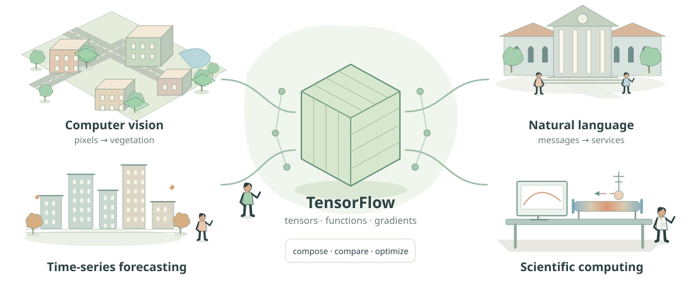
Four illustrative applications of TensorFlow, selected to demonstrate different forms of data and mathematical structure.
Understanding TensorFlow
Before choosing a neural architecture, decide what an observation is, which function represents the question, and how an error will be measured. TensorFlow makes that function executable and differentiable; scientific judgment supplies its meaning.
1.1 What is TensorFlow?
A spreadsheet stores numbers in cells and applies formulas. TensorFlow generalizes this idea to arrays with many axes and to computations large enough to run on CPUs or accelerators. A tensor is the array; an operation transforms one or more tensors into others. A model is a parameterized composition of such operations. Automatic differentiation calculates how a scalar objective changes when its parameters change.
These capabilities are useful beyond neural classification. A differentiable simulator can estimate unknown physical coefficients. A convolutional network can preserve image geometry. An optimization routine can fit a nonlinear statistical model. None of these uses makes an output true by construction: correctness depends on the data, objective, numerical implementation, and independent validation.
The framework contributes
Tensor operations, device placement, differentiable primitives, model layers, optimizers, input pipelines, and serialization.
The researcher contributes
A well-defined estimand, lawful inputs, meaningful baselines, honest splits, diagnostic checks, and an account of limitations.
1.2 From conventional programming to learning
A hand-written vegetation rule might mark a pixel when green exceeds red by a fixed amount. The programmer chooses both the formula and threshold. In supervised learning, paired images and masks determine parameters within a chosen family of functions. The programmer still chooses the family, the training objective, and the experimental design. Learning replaces selected numerical decisions; it does not remove assumptions.
Write a prediction as \(f_\theta(x)\)fθ(x). Here x is available input, θ contains adjustable parameters, and y is the target observed during training. The optimizer minimizes average training loss. Validation guides model selection; a final test estimates performance after those choices are fixed. Repeatedly selecting models using test results turns that test into another validation set.
The regularizer R is optional. Minimizing empirical error approximates a population goal only when the training observations represent the prediction setting.
In the heat experiment, targets are replaced partly by differential-equation constraints. The computational act is still optimization, but its evidential interpretation changes. A small training residual is an achievement on sampled constraints, not proof of a globally correct physical solution.
1.3 What if TensorFlow did not exist? The computational problem it solves
Imagine fitting a line to five measurements. A spreadsheet, a few NumPy expressions, or a classical least-squares routine can do the job. Now imagine replacing that line with a deep image model, feeding it thousands of image batches, changing its architecture, and differentiating every new loss correctly. The mathematics is still available; the amount of coordinated software grows. TensorFlow supplies one integrated way to manage that work.
Advanced machine learning is possible with NumPy, SciPy, scikit-learn, PyTorch, JAX, handwritten C++ or CUDA, or another differentiation system. These choices organize computation differently. TensorFlow is valuable when its tensor operations, differentiation, input pipelines, layers, and runtime fit the problem and deployment environment. It is not required for the baseline methods used in this monograph.
A small regression: first do the arithmetic
Take input values x=(−2,−1,0,1,2) and targets y=(−5,−2,1,4,7), generated by y=3x+1. The predictor ŷ=wx+b has two adjustable numbers. Predictions lead to residuals rᵢ=wxᵢ+b−yᵢ; averaging their squared magnitudes measures fit. The factor ½ cancels the 2 that appears when differentiating a square.
The gradients follow by the chain rule: ∂rᵢ/∂w=xᵢ and ∂rᵢ/∂b=1. Both are evaluated before either parameter is updated.
At w=b=0, residuals are (5,2,−1,−4,−7). Their squares total 95, so loss is 95/10=9.5. The slope gradient is −30/5=−6 and the bias gradient is −5/5=−1. With learning rate 0.1, the new parameters are w=0.6 and b=0.1. Their residuals are (3.9,1.5,−0.9,−3.3,−5.7), giving loss 6.165. Repeating the same update reduces error on these exact observations.
NumPy can calculate all five predictions and residual products as array operations. Its compiled numerical routines already avoid a Python loop over individual observations. For this tiny model, maintaining two analytical derivatives is straightforward. An analytical least-squares solution using NumPy's linear solver is another reasonable choice; it avoids an iterative learning-rate decision.
Complete short NumPy regression programPythonCollapse Code
Complete short example, including imports and an executable entry point. Extracted from the canonical comparison source.
import numpy as np
def numpy_regression(steps: int = 100, learning_rate: float = .1) -> dict:
"""Fit y=wx+b to five exact observations using analytical gradients.
Loss = mean((wx+b-y)^2)/2. Parameters, observations, and reductions are
float64. Histories include the initial state, then every updated state;
gradient_history[k] differentiates loss_history[k], before update k+1.
"""
if steps < 1 or not np.isfinite(learning_rate) or learning_rate <= 0:
raise ValueError("Require steps >= 1 and a finite positive learning rate")
x = np.array([-2., -1., 0., 1., 2.], dtype=np.float64)
y = 3. * x + 1.
w, b = np.float64(0.), np.float64(0.)
eta = np.float64(learning_rate)
parameter_history = np.empty((steps + 1, 2), dtype=np.float64)
gradient_history = np.empty((steps, 2), dtype=np.float64)
loss_history = np.empty(steps + 1, dtype=np.float64)
parameter_history[0] = [w, b]
loss_history[0] = .5 * np.mean((w * x + b - y) ** 2)
for step in range(steps):
predictions = w * x + b
residuals = predictions - y
dw = np.mean(residuals * x)
db = np.mean(residuals)
gradient_history[step] = [dw, db]
# Both gradients use the same pre-update parameters.
w = w - eta * dw
b = b - eta * db
parameter_history[step + 1] = [w, b]
loss_history[step + 1] = .5 * np.mean((w * x + b - y) ** 2)
return {"final_parameters": parameter_history[-1].copy(),
"parameter_history": parameter_history,
"gradient_history": gradient_history,
"loss_history": loss_history}
if __name__ == "__main__":
print(numpy_regression()["final_parameters"])
TensorFlow performs the same forward operations inside a gradient tape, then asks for derivatives with respect to w and b. The observations, float64 precision, loss reduction, and simultaneous update convention stay identical. Its contribution here is derivative bookkeeping and an extensible execution model; the NumPy implementation is already a reasonable solution for this tiny task.
Equivalent complete GradientTape regression programPythonCollapse Code
Complete short example, including imports and an executable entry point. Extracted from the canonical comparison source.
import numpy as np
def tensorflow_regression(steps: int = 100, learning_rate: float = .1) -> dict:
"""Use GradientTape to obtain the same two derivatives automatically.
TensorFlow is imported only when this function is called. Eager execution
keeps this tiny comparison transparent. No timing or speed claim is made.
"""
import tensorflow as tf
if steps < 1 or not np.isfinite(learning_rate) or learning_rate <= 0:
raise ValueError("Require steps >= 1 and a finite positive learning rate")
x = tf.constant([-2., -1., 0., 1., 2.], dtype=tf.float64)
y = 3. * x + 1.
w = tf.Variable(0., dtype=tf.float64)
b = tf.Variable(0., dtype=tf.float64)
eta = tf.constant(learning_rate, dtype=tf.float64)
parameter_history = np.empty((steps + 1, 2), dtype=np.float64)
gradient_history = np.empty((steps, 2), dtype=np.float64)
loss_history = np.empty(steps + 1, dtype=np.float64)
parameter_history[0] = [w.numpy(), b.numpy()]
loss_history[0] = (.5 * tf.reduce_mean(tf.square(w * x + b - y))).numpy()
for step in range(steps):
with tf.GradientTape() as tape:
predictions = w * x + b
residuals = predictions - y
loss = .5 * tf.reduce_mean(tf.square(residuals))
dw, db = tape.gradient(loss, [w, b])
tf.debugging.assert_all_finite(dw, "Nonfinite slope gradient")
tf.debugging.assert_all_finite(db, "Nonfinite intercept gradient")
gradient_history[step] = [dw.numpy(), db.numpy()]
# Both taped gradients were computed before either assign_sub operation.
w.assign_sub(eta * dw)
b.assign_sub(eta * db)
parameter_history[step + 1] = [w.numpy(), b.numpy()]
loss_history[step + 1] = (.5 * tf.reduce_mean(tf.square(w * x + b - y))).numpy()
return {"final_parameters": parameter_history[-1].copy(),
"parameter_history": parameter_history,
"gradient_history": gradient_history,
"loss_history": loss_history}
if __name__ == "__main__":
print(tensorflow_regression()["final_parameters"])
Executed NumPy result after 100 updates: w≈2.99999999939, b≈0.99997343860, loss≈3.52754×10⁻¹⁰. The validation record checks all 101 parameter states against independent closed-form recurrences. TensorFlow parity is implemented but unexecuted. These are correctness checks, not timing benchmarks.
What grows difficult in a deep model?
A dense network contains matrices rather than two scalars. Every intermediate activation influences later computations. A Jacobian records local output sensitivities with respect to inputs. If g₁ maps two inputs to three features and g₂ maps those features to one output, their Jacobians have shapes 3×2 and 1×3. The chain rule multiplies them in a particular order.
Reverse mode applies local sensitivity rules without usually materializing each full Jacobian. A scalar loss supplies gradients having the same shapes as their parameter arrays.
Handwritten backpropagation is feasible and educational. Its maintenance burden appears when a new activation, shared branch, or loss term needs corresponding backward code, axis reductions, and accumulation along shared paths. TensorFlow records supported forward operations and applies their registered derivative rules. Changing a forward model can therefore update its backward computation without editing every derivative expression manually. A disconnected NumPy conversion, incorrect objective, or nondifferentiable operation still requires diagnosis.
A numerical gradient check estimates a selected derivative by [ℒ(θ+h)−ℒ(θ−h)]/(2h). This helps on a small smooth model, but h balances approximation and rounding errors; checking every parameter costs many forward evaluations. Automatic differentiation is neither finite differences nor a guarantee that the model is right. PyTorch's autograd and JAX's differentiation transformations provide other implementations of related ideas.
An image pipeline is more than a convolution
A collection of images must be read and decoded, resized consistently, normalized, paired with correctly transformed masks, shuffled within the training split, and grouped into batches. The model performs convolutions, computes a loss, differentiates it, and updates parameters. Independent libraries can implement every step, but shapes, devices, scheduling, and random transformations must agree. A fast accelerator can sit idle while the host prepares the next batch.
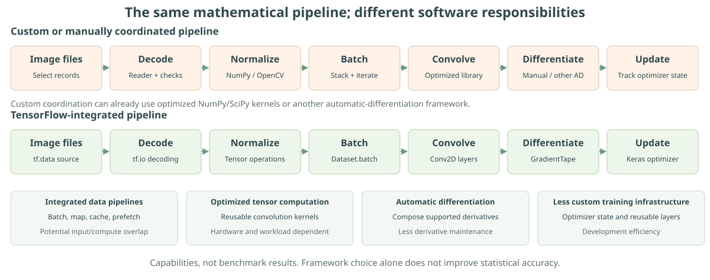
Three efficiencies, one separate outcome. Development efficiency means fewer custom components to maintain. Computational efficiency concerns time and memory for equivalent numerical work. Pipeline efficiency concerns keeping that work supplied with batches. Statistical accuracy concerns predictions on independent data; it does not follow from any of those software efficiencies. The regression comparison above checks equivalent update equations, not wall-clock speed.
tf.data expresses transformations and batching as a pipeline. Parallel mapping can prepare independent examples, prefetching can overlap preparation with execution, and caching can avoid repeated deterministic work. These mechanisms consume memory and need appropriate ordering and reproducibility settings. The official input-performance guide demonstrates overlap with an artificial delayed-I/O example. That example explains a mechanism; it is not a speedup measured for this monograph.
Scientific derivatives involve another choice
The heat problem needs derivatives with respect to x and t. For its known sine solution, handwritten derivatives are simplest and provide an independent reference. Symbolic algebra can derive some formulas exactly. Finite differences estimate derivatives from nearby values with truncation and rounding error. Automatic differentiation follows the operations defining a neural field, including nested derivatives for its curvature.
This flexibility matters when the field's coefficients are learned and change at every optimizer step. The residual must remain differentiable with respect to those coefficients as well as coordinates. Other differentiation libraries support this too. Traditional finite-difference or finite-element solvers can solve many forward PDEs efficiently without training a neural field or using TensorFlow. The heat experiment compares approaches rather than presuming a neural representation wins.
What TensorFlow automates—and what remains a decision
Derivatives and model construction
Layers define reusable forward functions and tape rules propagate sensitivities. You still choose representations, dimensions, activations, objectives, and valid differentiation paths.
Kernels and batches
Tensor operations call optimized implementations, and batches combine work. Benefits depend on shape, algorithm, layout, device utilization, and memory; batching can change optimization behavior.
Input organization and optimization
Pipelines coordinate transformations and delivery; optimizers manage updates and state. Split design, augmentation semantics, stopping rules, and loss scaling remain research decisions.
Saving and reproducibility
Archives retain architecture and weights; seeds and configurations standardize parts of a run. Environments, custom operations, preprocessing contracts, and statistical reproducibility need separate attention.
Deployment is another engineering stage. A .keras archive supports Keras saving and reloading; an inference export creates an artifact for a selected runtime. Neither operation supplies a web server, browser model, monitoring policy, or correct preprocessing automatically. The Keras export documentation distinguishes inference export from restoring a trainable model. This static monograph does not run its Python models in the browser.
Does TensorFlow make computation faster?
Performance depends on what is measured. Small NumPy operations can finish before framework dispatch, memory allocation, or tracing overhead has been recovered. Large tensors may benefit from optimized kernels and compatible accelerators when there is sufficient parallel work. Host–device transfers and kernel-launch overhead can dominate small models. The TensorFlow NumPy guide and GPU performance guide describe these tradeoffs.
tf.function can reduce repeated Python overhead by tracing operations into a graph, while repeated retracing adds cost. Wrapping an already expensive convolution need not produce a major improvement. Start with a correct eager implementation and profile the bottleneck. Fair timing distinguishes initialization from steady-state work, warms up traced operations, repeats measurements, specifies hardware and software, and synchronizes asynchronous devices around the timed work. No such benchmark was run here; no speedup multiplier is reported.
| Task | Without TensorFlow | With TensorFlow | Main benefit and condition |
|---|---|---|---|
| Small regression | Analytical solution, NumPy, SciPy | GradientTape or Keras | Convenient extension; tiny problems may need no framework |
| Deep network | Manual backward code, PyTorch, JAX, custom autodiff | Recorded operations and reusable layers | Gradient/model management when supported operations fit |
| Image pipeline | Image libraries and custom scheduling | tf.data, kernels, tapes | Integrated execution; masks and splits remain your responsibility |
| Forecasting | Seasonal rules, statistical regression, scikit-learn, other neural frameworks | Keras temporal layers and optimizers | Repeatable experimentation; superiority needs chronological evidence |
| Physics-informed field | Hand derivatives, symbolic methods, differences, other autodiff | Nested tapes through smooth representations | Differential constraints inside optimization; classical solvers often suit forward PDEs |
The choice concerns which numerical method and software organization make the experiment correct, understandable, and maintainable. The following sections unpack TensorFlow's primitives. The applications then show where they help and where a simpler method remains a useful alternative.
Complete program · 05_tensorflow_comparison.pyPythonCollapse Code
Complete standalone program. Save the copied text as 05_tensorflow_comparison.py; install the documented dependencies before running.
"""Numerically compare handwritten NumPy gradients with TensorFlow autodiff.
Default (NumPy only):
python 05_tensorflow_comparison.py
After installing requirements.txt, also check TensorFlow parity:
python 05_tensorflow_comparison.py --tensorflow
This complete standalone program also checks the monograph's quadratic optimizer,
two-hidden-layer forward pass, and exact ReLU representation of the XOR corners.
It is a correctness comparison, not a performance benchmark. It does not train
any of the four application models or claim that TensorFlow is necessary here.
"""
from __future__ import annotations
import argparse
import json
import os
from pathlib import Path
import platform
os.environ.setdefault("CUDA_VISIBLE_DEVICES", "-1")
os.environ.setdefault("TF_CPP_MIN_LOG_LEVEL", "2")
import numpy as np
# SECTION 1 — A small model for which handwritten derivatives are reasonable.
def numpy_regression(steps: int = 100, learning_rate: float = .1) -> dict:
"""Fit y=wx+b to five exact observations using analytical gradients.
Loss = mean((wx+b-y)^2)/2. Parameters, observations, and reductions are
float64. Histories include the initial state, then every updated state;
gradient_history[k] differentiates loss_history[k], before update k+1.
"""
if steps < 1 or not np.isfinite(learning_rate) or learning_rate <= 0:
raise ValueError("Require steps >= 1 and a finite positive learning rate")
x = np.array([-2., -1., 0., 1., 2.], dtype=np.float64)
y = 3. * x + 1.
w, b = np.float64(0.), np.float64(0.)
eta = np.float64(learning_rate)
parameter_history = np.empty((steps + 1, 2), dtype=np.float64)
gradient_history = np.empty((steps, 2), dtype=np.float64)
loss_history = np.empty(steps + 1, dtype=np.float64)
parameter_history[0] = [w, b]
loss_history[0] = .5 * np.mean((w * x + b - y) ** 2)
for step in range(steps):
predictions = w * x + b
residuals = predictions - y
dw = np.mean(residuals * x)
db = np.mean(residuals)
gradient_history[step] = [dw, db]
# Both gradients use the same pre-update parameters.
w = w - eta * dw
b = b - eta * db
parameter_history[step + 1] = [w, b]
loss_history[step + 1] = .5 * np.mean((w * x + b - y) ** 2)
return {"final_parameters": parameter_history[-1].copy(),
"parameter_history": parameter_history,
"gradient_history": gradient_history,
"loss_history": loss_history}
# SECTION 2 — The same model, observations, precision, and update convention.
def tensorflow_regression(steps: int = 100, learning_rate: float = .1) -> dict:
"""Use GradientTape to obtain the same two derivatives automatically.
TensorFlow is imported only when this function is called. Eager execution
keeps this tiny comparison transparent. No timing or speed claim is made.
"""
import tensorflow as tf
if steps < 1 or not np.isfinite(learning_rate) or learning_rate <= 0:
raise ValueError("Require steps >= 1 and a finite positive learning rate")
x = tf.constant([-2., -1., 0., 1., 2.], dtype=tf.float64)
y = 3. * x + 1.
w = tf.Variable(0., dtype=tf.float64)
b = tf.Variable(0., dtype=tf.float64)
eta = tf.constant(learning_rate, dtype=tf.float64)
parameter_history = np.empty((steps + 1, 2), dtype=np.float64)
gradient_history = np.empty((steps, 2), dtype=np.float64)
loss_history = np.empty(steps + 1, dtype=np.float64)
parameter_history[0] = [w.numpy(), b.numpy()]
loss_history[0] = (.5 * tf.reduce_mean(tf.square(w * x + b - y))).numpy()
for step in range(steps):
with tf.GradientTape() as tape:
predictions = w * x + b
residuals = predictions - y
loss = .5 * tf.reduce_mean(tf.square(residuals))
dw, db = tape.gradient(loss, [w, b])
tf.debugging.assert_all_finite(dw, "Nonfinite slope gradient")
tf.debugging.assert_all_finite(db, "Nonfinite intercept gradient")
gradient_history[step] = [dw.numpy(), db.numpy()]
# Both taped gradients were computed before either assign_sub operation.
w.assign_sub(eta * dw)
b.assign_sub(eta * db)
parameter_history[step + 1] = [w.numpy(), b.numpy()]
loss_history[step + 1] = (.5 * tf.reduce_mean(tf.square(w * x + b - y))).numpy()
return {"final_parameters": parameter_history[-1].copy(),
"parameter_history": parameter_history,
"gradient_history": gradient_history,
"loss_history": loss_history}
# SECTION 3 — Exact trajectories for the quadratic learning-rate illustration.
def quadratic_trajectory(learning_rate: float, steps: int = 25,
theta_initial: float = 3., theta_star: float = 0.,
curvature: float = 1.) -> dict:
"""L(theta)=a(theta-theta_star)^2/2, with gradient a(theta-theta_star).
The error multiplier is 1-eta*a. For a>0, convergence from every initial
point requires 0<eta<2/a. This scalar-quadratic condition is not a general
guarantee for nonlinear neural-network optimization.
"""
if steps < 1 or curvature <= 0 or not np.isfinite(learning_rate):
raise ValueError("Require steps >= 1, positive curvature, finite rate")
theta = np.empty(steps + 1, dtype=np.float64)
theta[0] = theta_initial
for step in range(steps):
theta[step + 1] = theta[step] - learning_rate * curvature * (theta[step] - theta_star)
loss = .5 * curvature * (theta - theta_star) ** 2
return {"learning_rate": float(learning_rate), "error_multiplier": 1 - learning_rate * curvature,
"theta": theta, "loss": loss}
# SECTION 4 — Two nonlinear hidden layers, with explicit column-vector notation.
def two_hidden_forward() -> dict:
"""Verify every intermediate value in the article's two-hidden-layer example."""
x = np.array([1., 2.], dtype=np.float64)
w1 = np.array([[1., -1.], [2., .5]], dtype=np.float64)
b1 = np.array([0., 1.], dtype=np.float64)
z1 = w1 @ x + b1
a1 = np.maximum(z1, 0.)
w2 = np.array([[1., .25], [0., .5]], dtype=np.float64)
b2 = np.array([0., -1.], dtype=np.float64)
z2 = w2 @ a1 + b2
a2 = np.maximum(z2, 0.)
head = np.array([.5, .5], dtype=np.float64)
output = head @ a2
return {"x": x, "w1": w1, "b1": b1, "z1": z1, "a1": a1,
"w2": w2, "b2": b2, "z2": z2, "a2": a2, "head": head,
"output": float(output)}
def xor_relu_example() -> dict:
"""XOR on the four binary corners from two ReLU features.
h1=max(x1-x2,0), h2=max(x2-x1,0); h1+h2=|x1-x2|.
The output is exactly XOR for binary inputs, not a calibrated probability
for arbitrary real inputs. One affine function cannot fit all four targets.
"""
points = np.array([[0., 0.], [0., 1.], [1., 0.], [1., 1.]], dtype=np.float64)
targets = np.array([0., 1., 1., 0.], dtype=np.float64)
h1 = np.maximum(points[:, 0] - points[:, 1], 0.)
h2 = np.maximum(points[:, 1] - points[:, 0], 0.)
return {"inputs": points, "targets": targets, "hidden_features": np.column_stack([h1, h2]),
"predictions": h1 + h2}
# SECTION 5 — Assertions independently connect formulas to executed calculations.
def validate_numpy_demonstrations() -> dict:
regression = numpy_regression()
parameters = regression["parameter_history"]
losses = regression["loss_history"]
np.testing.assert_allclose(regression["gradient_history"][0], [-6., -1.], rtol=0, atol=1e-15)
np.testing.assert_allclose(parameters[1], [.6, .1], rtol=0, atol=1e-15)
np.testing.assert_allclose(losses[:2], [9.5, 6.165], rtol=0, atol=2e-15)
# Symmetric x has mean(x)=0 and mean(x^2)=2. Therefore the parameter
# errors contract independently by 1-2*eta=.8 and 1-eta=.9.
step_indices = np.arange(101, dtype=np.float64)
closed_form = np.column_stack([3. * (1. - .8 ** step_indices), 1. - .9 ** step_indices])
np.testing.assert_allclose(parameters, closed_form, rtol=1e-12, atol=2e-15)
expected_losses = (closed_form[:, 0] - 3.) ** 2 + .5 * (closed_form[:, 1] - 1.) ** 2
np.testing.assert_allclose(losses, expected_losses, rtol=1e-10, atol=2e-15)
assert np.isfinite(losses).all() and np.all(np.diff(losses) <= 0.)
assert losses[-1] < 4e-10
trajectories = {"slow": quadratic_trajectory(.1), "stable": quadratic_trajectory(.8),
"oscillatory": quadratic_trajectory(1.5), "divergent": quadratic_trajectory(2.2)}
for trajectory in trajectories.values():
expected_theta = 3. * trajectory["error_multiplier"] ** np.arange(26)
np.testing.assert_allclose(trajectory["theta"], expected_theta, rtol=1e-13, atol=1e-15)
assert np.isfinite(trajectory["theta"]).all()
for name in ["slow", "stable", "oscillatory"]:
assert np.all(np.diff(trajectories[name]["loss"]) < 0.)
assert np.all(trajectories["oscillatory"]["theta"][1:] * trajectories["oscillatory"]["theta"][:-1] < 0.)
assert np.all(np.diff(trajectories["divergent"]["loss"]) > 0.)
forward = two_hidden_forward()
for key, expected in [("z1", [-1., 4.]), ("a1", [0., 4.]),
("z2", [1., 1.]), ("a2", [1., 1.])]:
np.testing.assert_array_equal(forward[key], expected)
assert forward["output"] == 1.
xor = xor_relu_example()
np.testing.assert_array_equal(xor["predictions"], xor["targets"])
return {"checks": ["NumPy regression gradients and first update agree with hand arithmetic",
"all 101 regression states and losses agree with independent closed forms",
"25-step slow, stable, oscillatory, and divergent quadratic trajectories agree with exact multiplier",
"two hidden ReLU layers and linear head match every stated intermediate value",
"two ReLU difference features represent all four XOR binary corners exactly"],
"numpy_regression": regression, "quadratic_trajectories": trajectories,
"two_hidden_forward": forward, "xor": xor}
def json_ready(value):
"""Convert NumPy results without changing the computed values."""
if isinstance(value, np.ndarray):
return value.tolist()
if isinstance(value, np.generic):
return value.item()
if isinstance(value, dict):
return {key: json_ready(item) for key, item in value.items()}
if isinstance(value, (tuple, list)):
return [json_ready(item) for item in value]
return value
def main():
parser = argparse.ArgumentParser(description=__doc__)
parser.add_argument("--tensorflow", action="store_true",
help="also execute TensorFlow and check all gradients, states, and losses")
parser.add_argument("--report", type=Path,
default=Path(__file__).resolve().parents[1] / "data/comparison-validation.json")
args = parser.parse_args()
result = validate_numpy_demonstrations()
result["environment"] = {"python": platform.python_version(), "numpy": np.__version__,
"dtype": "float64", "device_default": "CPU"}
result["configuration"] = {"x": [-2., -1., 0., 1., 2.], "y": [-5., -2., 1., 4., 7.],
"initial_parameters": [0., 0.], "learning_rate": .1, "steps": 100,
"loss": "0.5 * mean((w*x+b-y)**2)"}
result["tensorflow"] = {"executed": False, "status": "not requested; run --tensorflow in the documented environment"}
result["performance_benchmark"] = "not performed; this file tests numerical correctness only"
if args.tensorflow:
try:
tf_result = tensorflow_regression()
except ModuleNotFoundError as exc:
raise SystemExit("TensorFlow is unavailable. Install requirements.txt in an isolated environment, then rerun --tensorflow.") from exc
import tensorflow as tf
errors = {}
for key in ["gradient_history", "parameter_history", "loss_history", "final_parameters"]:
np.testing.assert_allclose(tf_result[key], result["numpy_regression"][key], rtol=1e-11, atol=1e-12)
errors[key] = float(np.max(np.abs(tf_result[key] - result["numpy_regression"][key])))
result["tensorflow"] = {"executed": True, "version": tf.__version__,
"status": "all gradients, states, losses, and final parameters match within rtol=1e-11, atol=1e-12",
"maximum_absolute_differences": errors}
result["checks"].append("TensorFlow float64 autodiff agrees with NumPy analytical gradients through all 100 updates")
result = json_ready(result)
args.report.parent.mkdir(parents=True, exist_ok=True)
args.report.write_text(json.dumps(result, indent=2, allow_nan=False), encoding="utf-8")
print(json.dumps({"report": str(args.report.resolve()), "environment": result["environment"],
"checks": result["checks"], "final_parameters": result["numpy_regression"]["final_parameters"],
"final_loss": result["numpy_regression"]["loss_history"][-1],
"tensorflow": result["tensorflow"], "performance_benchmark": result["performance_benchmark"]}, indent=2))
if __name__ == "__main__":
main()
1.4 Exploring TensorFlow in Python: Installation, Documentation, and Introspection
TensorFlow is a Python library; you do not need to memorize its functions before using it. Python can reveal available names, calling parameters, and documentation. Explore in a regular interpreter, Wing’s Python Shell, Jupyter, or another editor. PowerShell runs terminal commands; Python statements belong in Python. Typing a shell installation command at a Python prompt causes a syntax error.
Install → Import → Verify → Discover → Inspect → Experiment → Consult official documentation
Install into the environment you intend to use
First create the dedicated virtual environment described in Install and run the first program. For general exploration, the commands below install into the selected environment. For reproducing this monograph, use its pinned requirements.txt instead. Check supported Python/platform combinations in the official installation guide.
python --version
python -m pip --version
python -m pip install tensorflow
python -c "import tensorflow as tf; print(tf.__version__)"python selects an interpreter; -m pip runs that interpreter’s package installer; install tensorflow installs into its environment. The verification command imports TensorFlow and prints the installed version, which varies by environment.
import sys
import subprocess
# Use pip belonging to the current Python interpreter.
subprocess.run(
[sys.executable, "-m", "pip", "install", "tensorflow"],
check=True
)sys.executable identifies the running interpreter. subprocess.run() invokes an operating-system command; check=True raises an exception if it fails. This is an alternative setup method for Wing or another editor, subject to permissions and compatibility. Install dependencies before research scripts; do not repeat installation at every program start. Restart the editor’s Python shell or notebook kernel if needed.
Import, verify, and narrow the search
import sys
import tensorflow as tf
print(sys.executable)
print(tf.__version__)A successful import confirms availability; the version helps match documentation to installed APIs. dir() lists names: modules, functions, classes, constants, and other attributes. It does not promise that every name is a function or a supported public API.
import tensorflow as tf
print(dir(tf))
print(dir(tf.math))
math_names = [
name for name in dir(tf.math)
if not name.startswith("_")
]
print(math_names[:30])Broad lists can be extensive. The underscore convention filters many internal or special names, while [:30] limits the display to thirty entries. This is an exploration aid, not a complete catalog of TensorFlow’s capabilities.
import inspect
import tensorflow as tf
help(tf) # Optional broad overview: potentially very long.
help(tf.GradientTape)
help(tf.keras.layers.Dense)
print(inspect.signature(tf.keras.layers.Dense))help() describes modules, functions, and classes. Hundreds or thousands of lines from help(tf) are normal, not an error; targeted help is easier to use. inspect.signature() shows parameters and defaults for many callables. Some built-in or extension-backed objects lack inspectable signatures and may raise TypeError or ValueError. Consult their help or API reference instead.
Read documentation through one small experiment
Read in this order: purpose → inputs → output → minimal example → advanced options. For Dense, the description explains a learned affine transformation followed by an activation. Parameters include units (output width), activation (nonlinearity), and use_bias (whether to include an additive bias). Check input/output shapes and dtypes, examples, and exceptions before adding advanced options.
tensorflow→keras→layers→DenseIn tf.keras.layers.Dense(units=4, activation="relu"), tf aliases TensorFlow, keras exposes the high-level neural-network API, layers groups layer classes, and Dense is the class being instantiated. This name-by-name investigation works across Python packages.
import tensorflow as tf
import inspect
print(inspect.signature(tf.keras.layers.Dense))
layer = tf.keras.layers.Dense(
units=4,
activation="relu"
)
x = tf.ones((2, 3)) # Two observations, three features each.
y = layer(x)
print(y.shape)
assert tuple(y.shape) == (2, 4)Construction configures the layer; calling layer(x) computes its output and builds its weights on first use. Here the result has two rows and four features. Random initial weights affect values, so inspect the shape rather than expecting fixed numbers. Printed documentation describes an interface; it is not the result of this computation.
Useful entry points
This selection is a map for exploration, not an exhaustive API inventory.
| Module or API | What to explore |
|---|---|
tf.math | Mathematical operations and reductions |
tf.linalg | Linear algebra and matrix operations |
tf.random | Random-number generation |
tf.GradientTape | Automatic differentiation |
tf.nn | Neural-network operations |
tf.keras.layers | Neural-network layers |
tf.keras.optimizers | Optimization algorithms |
tf.data | Data pipelines and batching |
tf.distribute | Distributed computation |
tf.config | Devices and runtime configuration |
import tensorflow as tf
names = [
name for name in dir(tf.linalg)
if not name.startswith("_")
]
print(names[:30])
help(tf.linalg.matmul)import tensorflow as tf
help(tf.matmul) # Linear algebra and neural computation.
help(tf.reduce_mean) # Aggregate values, including losses.
help(tf.nn.softmax) # Convert logits to category probabilities.
help(tf.function) # Trace compatible functions into graphs.Repeat the discovery pattern with tf.math or tf.nn. A small executable example tests your interpretation before you embed an unfamiliar operation in a larger model.
Choose a working environment and consult the references
PowerShell installs packages and executes scripts. Wing combines editing, an interactive Python Shell, object inspection, and debugging; its selected interpreter must match the installation environment. Jupyter runs cells and exposes intermediate results; check its kernel’s interpreter too. IPython-based notebooks additionally support the following shortcuts.
import tensorflow as tf
tf.GradientTape?
tf.keras.layers.Dense?
tf.keras.optimizers.Adam?The ? syntax is specific to IPython, not ordinary Python. Do not put it in a .py file. In Wing’s regular Python Shell or a standard interpreter, use help(...) and inspect.signature(...).
Local introspection reflects installed objects; online documentation supplies fuller guides and examples. Consult TensorFlow documentation, the TensorFlow API reference, the automatic differentiation guide, Keras documentation, and Python’s inspect reference.
import webbrowser
webbrowser.open(
"https://www.tensorflow.org/api_docs/python/tf/GradientTape"
)webbrowser opens the system’s configured browser when you execute the example; no TensorFlow import is needed. This page does not execute it automatically.
Documentation can be extensive. Start with an operation’s purpose, required inputs, and one minimal example. You can return to unfamiliar arguments and advanced options when your work requires them.
Troubleshooting. ModuleNotFoundError: compare sys.executable with the interpreter used for python -m pip. Overwhelming help: target a class or operation. Notebook code failing in a script: remove IPython-only syntax. Missing or changed API: check tf.__version__ and the matching documentation.
1.5 Scalars, vectors, matrices, and higher-order tensors
A scalar has no array axes: temperature at one position and time could be a single number. A vector has one axis: temperatures at 41 locations. A matrix has two axes: 21 times by 41 locations. An RGB image needs row, column, and channel axes. A batch adds an observation axis. Tensor rank counts axes; it is different from matrix rank, which counts independent columns or rows.
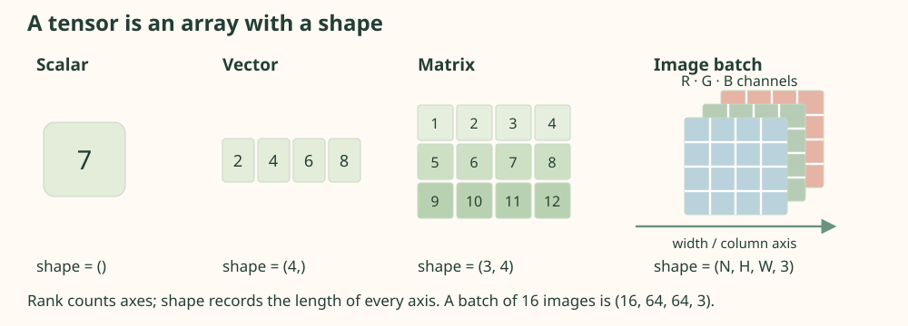
Axes carry scientific meaning that the array does not enforce. A shape of (64, 64, 3) could describe an image, but TensorFlow does not know that its final axis means RGB rather than repeated measurements. A transpose changes axis order; a reshape changes how the same ordered elements are grouped. Confusing them can silently corrupt a dataset while leaving every dimension numerically legal.
| Symbol | Meaning | Convention |
|---|---|---|
| x, y, ŷ | Input, observed target, prediction | Shapes declared within each application |
| θ, W, b | All parameters, weight matrix, bias | Column-vector mathematics; batched row arrays in Keras |
| ℒ, η, ∇θℒ | Loss, learning rate, parameter gradient | Loss is scalar after stated reductions |
| n, N, t | Observation count, batch/image count, time | Pixel counts denoted M; time meaning specified locally |
| E[·], Var(·) | Population expectation and variance | Empirical averages are written as sums |
| κ, u(x,t) | Diffusivity and temperature field | Dimensionless in the heat benchmark |
1.6 Shapes, axes, and broadcasting
A batch of 16 RGB images, each 64 by 64 pixels, has shape (16, 64, 64, 3) in channels-last format. It contains 196,608 scalar entries. Flattening each image gives (16, 12,288). Reshaping back is safe if the element order is preserved; flattening loses explicit neighborhood information for layers that ignore geometry.
A small exact broadcasting example is a 3 × 4 matrix formed from 0,…,11. Its first row is (0,1,2,3). Adding a vector (10,20,30,40) aligns four columns and gives first row (10,21,32,43); the vector is reused for each row. The foundations source verifies the result. A length-three vector instead fails against the final axis of length four, unless reshaped to (3,1) to mean row offsets.
Broadcasting aligns dimensions from the right. Two corresponding dimensions must match or one must be 1. Subtracting a channel mean with shape (3,) from an image batch is legal: that vector repeats conceptually over batch, rows, and columns. A vector shaped (64,) would align with channels and fail here. Use (1, 64, 1, 1) for row-specific offsets. Expansion does not imply a full materialized copy, but subsequent operations still have a resulting shape and memory cost.
Count the axes before flattening
Only the batch size changes. This calculates shapes and storage, not a learned transformation.
Tensor operations and verified numerical walkthroughsPythonCollapse Code
Canonical function excerpt, not a standalone program. The complete source below supplies imports and supporting functions.
def run(seed: int = 42) -> dict:
import tensorflow as tf
tf.keras.utils.set_random_seed(seed)
tf.config.experimental.enable_op_determinism()
# SECTION 1 — Shapes and broadcasting preserve the number of elements.
a = tf.reshape(tf.range(12, dtype=tf.float32), (3, 4))
b = a + tf.constant([10., 20., 30., 40.])
assert tuple(b.shape) == (3, 4)
np.testing.assert_array_equal(b[0], [10., 21., 32., 43.])
images = tf.zeros((16, 64, 64, 3))
assert int(tf.rank(images)) == 4
# SECTION 2 — A dense forward pass; TF stores a kernel as input×output.
x = tf.constant([[1., 2.]])
mathematical_weights = tf.constant([[1., -1.], [2., .5]])
weights = tf.transpose(mathematical_weights) # Column-vector W becomes Keras kernel W^T.
bias = tf.constant([0., 1.])
z = x @ weights + bias
activation = tf.nn.relu(z)
output = activation @ tf.constant([[.5], [.25]])
np.testing.assert_allclose(z, [[-1., 4.]])
np.testing.assert_allclose(activation, [[0., 4.]])
np.testing.assert_allclose(output, [[1.]])
# SECTION 3 — One manually checkable gradient update.
# yhat=w*x+b=2; L=(yhat-y)^2/2=.5 for x=2,y=3,w=1,b=0.
w, intercept = tf.Variable(1.), tf.Variable(0.)
with tf.GradientTape() as tape:
predicted = 2. * w + intercept
loss = .5 * tf.square(predicted - 3.)
dw, db = tape.gradient(loss, [w, intercept])
np.testing.assert_allclose([loss, dw, db], [.5, -2., -1.])
w.assign_sub(.1 * dw)
intercept.assign_sub(.1 * db)
np.testing.assert_allclose([w, intercept], [1.2, .1], rtol=1e-6)
new_loss = .5 * tf.square(2. * w + intercept - 3.)
np.testing.assert_allclose(new_loss, .125, rtol=1e-6)
# SECTION 4 — Neural libraries use cross-correlation, without kernel reversal.
patch = tf.reshape(tf.range(1, 10, dtype=tf.float32), (1, 3, 3, 1))
kernel = tf.reshape(tf.constant([1., 0., 0., -1.]), (2, 2, 1, 1))
filtered = tf.nn.conv2d(patch, kernel, strides=1, padding="VALID")
np.testing.assert_allclose(filtered.numpy().ravel(), [-4.] * 4)
# The 3×3 numerical diagram uses a distinct, fully visible edge kernel.
diagram_kernel = tf.reshape(tf.constant([1., 0., -1.] * 3), (3, 3, 1, 1))
diagram_output = tf.nn.conv2d(patch, diagram_kernel, strides=1, padding="VALID")
np.testing.assert_allclose(diagram_output.numpy().ravel(), [-6.])
# SECTION 5 — Stable softmax and sparse cross-entropy agree with arithmetic.
logits = tf.constant([[2., 1., 0., -1.]])
probabilities = tf.nn.softmax(logits)
cross_entropy = tf.nn.sparse_softmax_cross_entropy_with_logits(
labels=[0], logits=logits
)
shifted = np.array([0., -1., -2., -3.])
expected = np.exp(shifted) / np.exp(shifted).sum()
np.testing.assert_allclose(probabilities.numpy()[0], expected, rtol=1e-6)
np.testing.assert_allclose(cross_entropy, [-np.log(expected[0])], rtol=1e-6)
return {
"seed": seed, "tensorflow": tf.__version__, "numpy": np.__version__,
"image_batch_shape": list(images.shape), "dense_z": z.numpy().tolist(),
"dense_output": output.numpy().tolist(),
"gradient": [float(dw), float(db)], "updated_parameters": [float(w), float(intercept)],
"updated_loss": float(new_loss), "cross_correlation": filtered.numpy().tolist(),
"softmax": probabilities.numpy().tolist(), "cross_entropy": float(cross_entropy[0]),
"checks": "all numerical assertions passed",
}
Checkpoint: does reshape turn channels into new colors?
No. Reshape reinterprets an ordered list of entries. It neither computes channel mixtures nor swaps axes intentionally. A valid shape can still have the wrong interpretation. Inspect a few known coordinates after any complicated transformation.
1.7 The computational graph
Follow a single prediction as a small calculation: multiply an input by a weight, add a bias, compare with a known target, and score the mistake. A graph records which result depends on which earlier value. It is also a map for working backward: ask how changing the loss's input would change the loss, then pass that sensitivity toward the parameters.
Consider a scalar linear predictor with weight and bias: a = wx + b. With squared loss ℒ = ½(a − y)², the calculation consists of multiplication, addition, subtraction, squaring, and scaling. A graph makes these dependencies explicit. A parameter in an early node matters because every downstream node depends on it.
Follow one prediction forward and one gradient backward
Step 1 / 7 · Inputs and parameters
Start with input 2, weight 1, bias 0 and target 3.
A complete graph small enough to check by hand. Shared parameters accumulate contributions from every path in which they occur. The sequence calculates a specified update; it is not a fitted-model performance animation.
TensorFlow normally executes operations eagerly, so intermediate tensors are directly inspectable. Decorating a function with tf.function traces supported TensorFlow operations into a reusable graph. That can reduce Python overhead, but Python side effects and shape-dependent retracing require care. A traced function is an execution strategy, not a different mathematical model. Start eagerly when debugging shapes or derivatives.
The displayed loss falls from 0.5 to 0.125, a 75% decrease for this example at η = 0.1. Both parameters use gradients evaluated at the original state. A different learning rate can overshoot; the optimization laboratory below shows why this single successful step is not a general guarantee.
1.8 Neural networks are compositions of functions
A network builds a complicated rule by applying simpler rules in sequence. In a photograph, local contrasts might contribute to edges, and combinations of edges might contribute to broader patterns. This is a useful intuition for composition, not a guarantee that every learned neuron represents one uniquely interpretable object. The mathematical question is what each stage transforms, and what information its nonlinear step retains.
A dense layer first takes weighted combinations of inputs, then applies an activation independently to each resulting coordinate. For a column activation vector a(ℓ−1) of length dℓ−1, the weight matrix has dℓ rows and dℓ−1 columns; the bias has length dℓ. Nonlinear activations allow successive layers to represent more than a single affine map.
W has shape dℓ × dℓ−1. In a Keras batch, row-vector inputs have shape B × dℓ−1 and the stored Dense kernel has shape dℓ−1 × dℓ.
For a numerical forward pass, take input (1, 2), W with rows (1, −1) and (2, 0.5), and bias (0, 1). Matrix multiplication gives (−1, 3), adding the bias gives (−1, 4), and ReLU yields (0, 4). ReLU means max(0, z). A final row (0.5, 0.25) with zero bias produces scalar output 1. The foundations program checks these exact values with TensorFlow assertions.
Two successive affine transformations alone collapse into one. Substituting the first into the second gives the product of their weight matrices and a combined bias. Adding more affine layers changes the parameterization, but does not create a nonlinear input–output function.
The dimensions must agree: if W1 is d1×d0 and W2 is d2×d1, then W2W1 is d2×d0. A nonlinearity between the maps generally prevents this simplification.
XOR provides a small counterexample to affine expressiveness. Its targets on inputs (0,0), (1,0), (0,1), (1,1) are 0,1,1,0. An affine output matching the first three requires bias 0 and both weights 1, so it incorrectly returns 2 at (1,1). Two ReLU features, max(x1−x2,0) and max(x2−x1,0), sum to the correct XOR outputs at all four binary corners. This is an exact numerical construction on those points, not a calibrated classifier for arbitrary real inputs.
Build a prediction from simpler functions
The short example above uses one hidden layer. This extended example uses the same input and first hidden layer, then a second affine–ReLU stage and a new output head. Its matrices are fully specified, so every intermediate value can be checked.
Matrix arithmetic and software conventions
The first weighted sums are 1·1−1·2=−1 and 2·1+0.5·2=3. Adding bias(0,1) gives(−1,4), then ReLU gives(0,4). The second matrix gives(1,2); adding(0,−1) gives(1,1), which ReLU leaves unchanged. The head returns0.5·1+0.5·1=1.
| Operation | Column-vector mathematics | Batched Keras convention |
|---|---|---|
| Input | 2×1 | B×2, rows are observations |
| First affine map | W1(2×2) times x(2×1) | X(B×2) times kernel W1ᵀ(2×2) |
| Hidden activations | 2×1, one column | B×2, activation per entry |
| Final affine map | Head(1×2) times a2(2×1) | A2(B×2) times head kernel(2×1) |
Square hidden matrices can hide a transposition mistake because their dimensions still match. Check actual intermediate values, not only array shapes. Both this extended example and the original shorter one are independently asserted in the supplied Python programs.
Widths control parameter count; depth controls composition. Neither guarantees good generalization. An architecture that ignores the problem's symmetries may need much more data than one that builds them in. Convolution shares local filters across space. Pooling text embeddings shares a summary rule across positions. A heat network uses smooth functions so derivatives have meaningful values.
1.9 Loss functions and optimization
A predictor says what it expects; a loss assigns a numerical cost to being wrong. If tomorrow's demand is predicted as 100 and observed as 110, an absolute error charges 10 while a squared error charges 100. Those objectives express different priorities. Optimization adjusts parameters to reduce the chosen cost; choosing the cost remains a modeling decision, and fitting training observations well does not by itself establish generalization.
A loss translates a scientific discrepancy into a scalar that an optimizer can minimize. Squared error penalizes large misses strongly and corresponds to a Gaussian observation model under additional assumptions. Cross-entropy measures the negative log probability assigned to observed categories. A physics loss penalizes violations of a differential equation. Similar APIs do not make these objectives interchangeable.
Gradient descent takes a first-order local step. A finite learning rate can overshoot; a stationary point need not be a useful solution.
A Taylor expansion gives ℒ(θ + δ) ≈ ℒ(θ) + ∇ℒ(θ)Tδ. Setting δ = −η∇ℒ makes the linear term −η‖∇ℒ‖². The neglected curvature determines whether a practical step decreases the actual loss. On ℒ(w)=½a(w−w*)² with a>0, the error multiplier is 1−ηa, so convergence for every initial error requires 0<η<2/a.
Mini-batch methods replace a full-data gradient by a batch estimate. Adam additionally maintains moving summaries of gradients and squared gradients. It is convenient, but it does not remove sensitivity to normalization, learning rate, batch size, or stopping rules. Report these settings rather than treating the optimizer name as a complete experimental specification.
Watch the learning rate change the trajectory
Use loss L(θ)=½θ², minimum θ*=0, curvature a=1, and starting value θ0=3. The gradient is θ. Each step computes θnew=θ−ηθ from the current value. A learning-rate change restarts the same experiment so trajectories stay comparable.
Left: the exact landscape over −4≤θ≤4; connecting segments join evaluated states and are not a continuous optimizer path. Points outside that range are identified in the readout. Right: the full evaluated loss trajectory; zero/tiny values use a display floor 10⁻¹². At most 25 updates run. No unexecuted neural training curve is shown.
Detailed derivation: from a local approximation to the quadratic stability bound
For a differentiable scalar objective, a local Taylor approximation is L(θ+δ)≈L(θ)+L′(θ)δ. Choosing δ=−ηL′(θ) makes the linear term −η[L′(θ)]², which is nonpositive for η>0. The omitted second-order contribution can overturn that prediction when the step is too large.
Assumptions: fixed a>0, exact gradient, constant positive learning rate, and the same quadratic throughout. If 0<ηa<1, approach is monotone; if 1<ηa<2, the error alternates while shrinking; at ηa=2 it alternates without shrinking; above 2 it grows in magnitude.
A general neural loss has changing curvature and many coupled directions. A positive-definite quadratic in several dimensions requires η<2/λmax(H), with H its Hessian; the scalar bound does not establish global convergence for a nonlinear network. Mini-batch gradients add sampling variation. Stochastic gradient descent applies these estimated gradients; Adam further rescales them using moving first- and second-moment summaries. Automatic differentiation supplies the sensitivities, while the optimizer specifies how to use them.
1.10 Automatic differentiation
Finite differences estimate a derivative by perturbing a value and dividing a difference; subtraction error and step-size choice affect the estimate. Symbolic differentiation manipulates expressions. Automatic differentiation instead applies exact local derivative rules to the executed elementary operations and combines them by the chain rule, subject to floating-point arithmetic. It differentiates the implemented computation, including its mistakes.
A tf.GradientTape records differentiable TensorFlow operations. Trainable variables are watched automatically; ordinary coordinate tensors must be watched explicitly when their derivatives are needed. Converting an intermediate to a NumPy array breaks the recorded TensorFlow path. A missing gradient is a connectivity problem to investigate, not a zero to insert silently. The official differentiation guide describes these recording rules.
Reverse mode is efficient when a scalar loss depends on many parameters: a backward sweep yields all parameter sensitivities. Asking for a gradient of a nonscalar target normally sums output contributions. That is suitable for a scalar total loss, but coordinate-wise derivatives require interpretation. In the PINN chapter we explain exactly when a batched sum-gradient equals pointwise derivatives and when it does not.
1.11 Backpropagation and a manual gradient update
For the scalar graph, ∂ℒ/∂a = a−y, ∂a/∂w=x, and ∂a/∂b=1. At x=2, y=3, w=1, b=0, the prediction is 2 and loss is 0.5. The chain rule gives gradients −2 for w and −1 for b. With η=0.1, the update is w=1.2 and b=0.1. The new prediction is 2.5, so the new loss is 0.125. No training run is needed to establish these numbers.
How far should one gradient step move?
The displayed loss is ½(−1 + 5η)². Both parameters change along the original gradient. At η=0.2 this single observation is fitted exactly; a larger step can increase its loss.
For a multilayer network, define δ(ℓ) = ∂ℒ/∂z(ℓ). Each earlier layer receives its downstream error multiplied by the transposed next-layer weights, then multiplied elementwise by its activation derivative. The parameter gradient is an outer product with the previous activation.
For one observation δ has length dℓ, so its outer product has exactly the shape of W. A batch loss averages or sums these contributions according to its reduction.
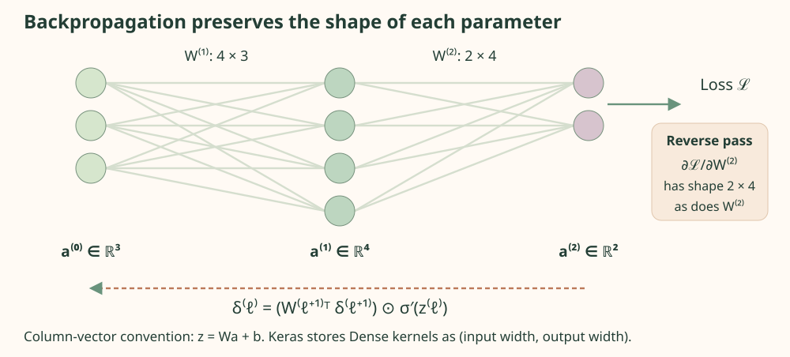
Checkpoint: why can an early layer receive a tiny gradient?
Its derivative is multiplied through downstream derivatives. Repeated small activation derivatives or poorly scaled weights can attenuate it; large factors can amplify it. Skip connections and suitable initialization help, but examining gradient norms remains useful. A tiny gradient can also reflect a disconnected computation or a saturated loss implementation.
1.12 Keras, tf.data, and hardware
Keras supplies layers, models, losses, optimizers, and training loops. This project uses tf.keras consistently with TensorFlow's Keras 3 integration. tf.data supplies composable input pipelines: create slices, shuffle training observations, batch them, and prefetch work. Validation and test pipelines do not need stochastic augmentation. Dataset order and random seeds should be explicit.
CPU execution is the default here. Accelerators benefit sufficiently large matrix and convolution operations, but host-to-device transfer, small batches, compilation, and input preparation can dominate small studies. Hardware availability is checked, not assumed. Numerical determinism can cost speed and still does not imply identical results across hardware or library versions.
Use the native .keras format for saved Keras models and reload a saved model before calling an experiment complete. Prediction-only reload can use compile=False; continued training needs custom loss configuration restored correctly. Serving exports are a separate operation. The Keras serialization guide explains these distinctions.
1.13 Install and run the first program
The reproducibility target is Python 3.12 or 3.13 with TensorFlow 2.20.0, a deliberate version pin rather than a claim about the newest release. The supplied requirements record numerical dependencies. The authoring environment used Python 3.13.1 and NumPy 2.4.0 for baseline checks; TensorFlow was absent, so the target training environment has not been executed here.
Download the asset folder, open PowerShell in its python directory, and create a dedicated environment. These commands modify that environment, not an unrelated global Python installation. If script activation is disabled, invoke .\.venv\Scripts\python.exe directly rather than changing a machine-wide execution policy.
Create an isolated CPU environmentPowerShellCollapse Code
Run in the downloaded python directory. Install the Python version first if the launcher does not list it.
py -0p
py -3.13 -m venv .venv
.\.venv\Scripts\Activate.ps1
python -m pip install --upgrade pip
python -m pip install -r requirements.txt
python -c "import tensorflow as tf; print(tf.__version__); print(tf.reduce_sum(tf.ones((2, 3)))); print(tf.config.list_physical_devices())"
python 00_tensorflow_foundations.py
python validate_experiments.py --tensorflowCurrent standard TensorFlow releases do not provide the old native Windows CUDA path; native support ended after TensorFlow 2.10. Modern NVIDIA GPU use is an optional Linux or WSL2 setup described in the official installation instructions. Nothing in these demonstrations requires a GPU. The complete foundations source includes assertions for reshapes, a dense forward pass, softmax, a convolution, and the gradient update.
Complete program · 00_tensorflow_foundations.pyPythonCollapse Code
Complete standalone program. Save the copied text as 00_tensorflow_foundations.py; install the documented dependencies before running.
"""Executable numerical checks: tensors, convolution, softmax, and differentiation.
Run: python 00_tensorflow_foundations.py --output ../outputs/foundations
Requires only the packages in requirements.txt. CPU execution is the default.
"""
from __future__ import annotations
import argparse
import json
import os
from pathlib import Path
os.environ.setdefault("CUDA_VISIBLE_DEVICES", "-1")
os.environ.setdefault("TF_CPP_MIN_LOG_LEVEL", "2")
import numpy as np
def run(seed: int = 42) -> dict:
import tensorflow as tf
tf.keras.utils.set_random_seed(seed)
tf.config.experimental.enable_op_determinism()
# SECTION 1 — Shapes and broadcasting preserve the number of elements.
a = tf.reshape(tf.range(12, dtype=tf.float32), (3, 4))
b = a + tf.constant([10., 20., 30., 40.])
assert tuple(b.shape) == (3, 4)
np.testing.assert_array_equal(b[0], [10., 21., 32., 43.])
images = tf.zeros((16, 64, 64, 3))
assert int(tf.rank(images)) == 4
# SECTION 2 — A dense forward pass; TF stores a kernel as input×output.
x = tf.constant([[1., 2.]])
mathematical_weights = tf.constant([[1., -1.], [2., .5]])
weights = tf.transpose(mathematical_weights) # Column-vector W becomes Keras kernel W^T.
bias = tf.constant([0., 1.])
z = x @ weights + bias
activation = tf.nn.relu(z)
output = activation @ tf.constant([[.5], [.25]])
np.testing.assert_allclose(z, [[-1., 4.]])
np.testing.assert_allclose(activation, [[0., 4.]])
np.testing.assert_allclose(output, [[1.]])
# SECTION 3 — One manually checkable gradient update.
# yhat=w*x+b=2; L=(yhat-y)^2/2=.5 for x=2,y=3,w=1,b=0.
w, intercept = tf.Variable(1.), tf.Variable(0.)
with tf.GradientTape() as tape:
predicted = 2. * w + intercept
loss = .5 * tf.square(predicted - 3.)
dw, db = tape.gradient(loss, [w, intercept])
np.testing.assert_allclose([loss, dw, db], [.5, -2., -1.])
w.assign_sub(.1 * dw)
intercept.assign_sub(.1 * db)
np.testing.assert_allclose([w, intercept], [1.2, .1], rtol=1e-6)
new_loss = .5 * tf.square(2. * w + intercept - 3.)
np.testing.assert_allclose(new_loss, .125, rtol=1e-6)
# SECTION 4 — Neural libraries use cross-correlation, without kernel reversal.
patch = tf.reshape(tf.range(1, 10, dtype=tf.float32), (1, 3, 3, 1))
kernel = tf.reshape(tf.constant([1., 0., 0., -1.]), (2, 2, 1, 1))
filtered = tf.nn.conv2d(patch, kernel, strides=1, padding="VALID")
np.testing.assert_allclose(filtered.numpy().ravel(), [-4.] * 4)
# The 3×3 numerical diagram uses a distinct, fully visible edge kernel.
diagram_kernel = tf.reshape(tf.constant([1., 0., -1.] * 3), (3, 3, 1, 1))
diagram_output = tf.nn.conv2d(patch, diagram_kernel, strides=1, padding="VALID")
np.testing.assert_allclose(diagram_output.numpy().ravel(), [-6.])
# SECTION 5 — Stable softmax and sparse cross-entropy agree with arithmetic.
logits = tf.constant([[2., 1., 0., -1.]])
probabilities = tf.nn.softmax(logits)
cross_entropy = tf.nn.sparse_softmax_cross_entropy_with_logits(
labels=[0], logits=logits
)
shifted = np.array([0., -1., -2., -3.])
expected = np.exp(shifted) / np.exp(shifted).sum()
np.testing.assert_allclose(probabilities.numpy()[0], expected, rtol=1e-6)
np.testing.assert_allclose(cross_entropy, [-np.log(expected[0])], rtol=1e-6)
return {
"seed": seed, "tensorflow": tf.__version__, "numpy": np.__version__,
"image_batch_shape": list(images.shape), "dense_z": z.numpy().tolist(),
"dense_output": output.numpy().tolist(),
"gradient": [float(dw), float(db)], "updated_parameters": [float(w), float(intercept)],
"updated_loss": float(new_loss), "cross_correlation": filtered.numpy().tolist(),
"softmax": probabilities.numpy().tolist(), "cross_entropy": float(cross_entropy[0]),
"checks": "all numerical assertions passed",
}
if __name__ == "__main__":
parser = argparse.ArgumentParser(description=__doc__)
parser.add_argument("--seed", type=int, default=42)
parser.add_argument("--output", type=Path, default=Path(__file__).resolve().parents[1] / "outputs/foundations")
args = parser.parse_args()
try:
result = run(args.seed)
except ModuleNotFoundError as exc:
raise SystemExit("Install requirements.txt in an isolated environment first.") from exc
args.output.mkdir(parents=True, exist_ok=True)
(args.output / "checks.json").write_text(json.dumps(result, indent=2), encoding="utf-8")
print(json.dumps(result, indent=2))
1.14 Reproducibility and numerical limits
Set the seed for each explicitly created NumPy generator and use Keras's supported seed utilities for Python, NumPy, and TensorFlow. Independent split seeds prevent accidental reuse of scenes. Deterministic operations reduce one source of variation; they do not turn a single stochastic fit into a robust result. Repeat meaningful experiments over several seeds and report dispersion alongside averages.
Float32 stores roughly seven significant decimal digits. Subtracting nearly equal values loses relative precision, exponentials can overflow, and taking log of a probability near zero can be unstable. Built-in cross-entropy functions use stable formulations. The heat residual involves second derivatives, so precision deserves special attention. Compare against exact derivatives and a classical solver before attributing a surprising result to physics.
Separate software validity from scientific validity. Passing a shape assertion does not establish generalization. A successful saved-model round trip does not validate calibration. A small PDE residual does not establish small solution error. The remaining chapters pair each computational pipeline with the independent check that gives its output meaning.
Mapping Urban Vegetation
Learning to recognize green space from aerial images begins with a deceptively simple question: which pixels belong to vegetation? The answer requires both color and context.
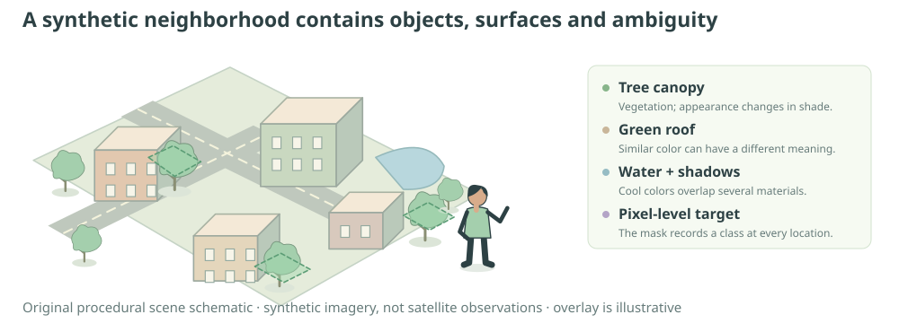
2.1 An urban-imagery question
An urban researcher wants the fraction of a neighborhood covered by vegetation. Image classification would assign one label to an entire patch, such as “mostly residential.” Semantic segmentation instead assigns a label to every pixel. It can therefore estimate coverage, locate disconnected green spaces, and reveal whether errors concentrate along tree edges or beneath shadows.
Without a neural framework, one could threshold a color index, describe local texture by handcrafted filters, or train a conventional pixel classifier. These approaches are quick to inspect and can be effective when colors and acquisition conditions are stable. The baseline here does exactly that first step. A convolutional network adds trainable spatial features and context; TensorFlow organizes its computation and derivatives. Whether it improves vegetation mapping is an empirical question under the same held-out scenes and thresholds.
A green roof is not vegetation merely because its RGB vector is green. A shaded tree is still vegetation even when its intensity falls below a color threshold. A lake can share some channel ratios with foliage. These ambiguities motivate a model with local context, while also making a color rule a useful baseline. If a large network cannot improve on a transparent rule under fair testing, its complexity needs justification.
Study specification
- Question and target
- Estimate a binary vegetation mask for a previously unseen synthetic 64 × 64 RGB scene; summarize its vegetation fraction.
- Available observations
- Procedurally rendered RGB intensities paired with masks created from geometry, before lighting and sensor noise.
- Assumptions and method
- The procedural scene distribution defines the learning environment. A compact U-Net-inspired network uses local shared filters and a BCE-plus-Dice objective.
- Evaluation and limit
- Independent scene seeds, a fixed test split, micro-aggregated confusion counts, and inspection of failures. Synthetic performance is not evidence of accuracy on a real city.
2.2 Images as tensors
An RGB image is an ordered grid with three intensities per location. Let H and W denote height and width, C=3 the channels, and N the number of images. The input is a real-valued array. The target adds one binary vegetation indicator per spatial location. A model output has the target shape but contains probabilities in [0,1].
The final singleton axis is preserved to make channel and loss conventions explicit. The Python renderer works directly in [0,1]; browser RGB exports round these intensities to integers from 0 to 255.
Working with RGB in [0,1] bounds its numerical range and makes initialization and learning-rate choices easier to interpret. It does not remove lighting variation or make channel distributions identical. A fitted channel standardization would need training-only means and scales. The renderer’s fixed range has no estimated statistics and introduces no split leakage. Importing conventional integer RGB would require division by 255.
The image inspector below exposes separate channels. A red-channel image is a grayscale view of red intensity, not an image recolored red. Brightness in that view means a large stored red value. The original RGB color combines the three values at the same coordinates.
2.3 Designing the synthetic dataset
The generator assembles roads, blocks, buildings, water, lawns, and individual tree crowns using masks over a 64 × 64 coordinate grid. The scene geometry is sampled first. Objects are painted in an explicit order, and their semantic masks follow the same overwriting rules. A tree painted over pavement changes both the image and its vegetation label. A shadow changes radiance without changing the underlying label.
Within-object textures, color variation, global brightness, shadows, and observation noise prevent the model from memorizing a single palette. Greenish nonvegetation and darker vegetation challenge a pure channel rule. At this resolution, geometry is stylized: a tree canopy may occupy only a few pixels. The construction is useful because every source of variation can be inspected, but its simplicity limits ecological realism.
The full configuration uses 1,000 training, 200 validation, and 200 test scenes. Quick mode reduces these counts and epochs while preserving independent splits and all evaluation steps. A seed controls each split's generator; independent SeedSequence child states prevent reuse of split seeds. Hash-based checks detect exact image duplicates. They cannot prove that two independently drawn scenes are not effectively similar, so the article treats the random split as an in-generator test, not a test of geographic transfer.
Generate one image and its aligned semantic maskPythonCollapse Code
Canonical function excerpt, not a standalone program. The complete source below supplies imports and supporting functions.
def generate_scene(seed: int, size: int = 64) -> tuple[np.ndarray, np.ndarray]:
"""Return RGB float32[H,W,3] and vegetation float32[H,W,1].
Semantic masks are painted with the same geometry as objects, BEFORE shadows,
illumination, and sensor noise. Green roofs are explicitly non-vegetation.
Dry/shadowed plants remain vegetation. Later objects occlude earlier objects.
"""
rng = np.random.default_rng(seed)
yy, xx = np.mgrid[:size, :size]
image = np.empty((size, size, 3), dtype=np.float64)
image[:] = rng.uniform([.60, .57, .48], [.78, .73, .64])
mask = np.zeros((size, size), dtype=bool)
def paint(region, color, vegetation=False):
image[region] = color
mask[region] = vegetation
# Broad lawn blocks surrounded by mineral pavement.
for _ in range(int(rng.integers(1, 4))):
x0, y0 = rng.integers(0, size - 10, 2)
width, height = rng.integers(9, 25, 2)
region = (xx >= x0) & (xx < x0 + width) & (yy >= y0) & (yy < y0 + height)
paint(region, rng.uniform([.17, .32, .10], [.42, .66, .27]), True)
# Cross streets with variable widths and markings; sidewalks precede asphalt.
cx, cy = rng.integers(size // 4, 3 * size // 4, 2)
half = int(rng.integers(3, 6))
paint((abs(xx - cx) <= half + 1) | (abs(yy - cy) <= half + 1), [.68, .69, .66])
road = (abs(xx - cx) <= half) | (abs(yy - cy) <= half)
paint(road, rng.uniform(.19, .32, 3))
paint(((xx == cx) & (yy % 9 < 4)) | ((yy == cy) & (xx % 9 < 4)), [.83, .79, .58])
# Roofs include a deliberately confusing green-painted material.
for _ in range(int(rng.integers(4, 10))):
x0, y0 = rng.integers(1, size - 9, 2)
width, height = rng.integers(5, 13, 2)
region = (xx >= x0) & (xx < x0 + width) & (yy >= y0) & (yy < y0 + height)
shadow = (xx >= x0 + 2) & (xx < x0 + width + 3) & (yy >= y0 + 2) & (yy < y0 + height + 3)
image[shadow] *= .63
color = (rng.uniform([.14, .33, .19], [.30, .55, .33]) if rng.random() < .25
else rng.uniform([.39, .33, .29], [.83, .70, .61]))
paint(region, color)
image[region & ((xx == x0) | (yy == y0))] = np.minimum(color + .11, 1)
# Occasional water adds another blue-green confounder.
if rng.random() < .4:
wx, wy = rng.integers(7, size - 7, 2)
water = ((xx - wx) / 7) ** 2 + ((yy - wy) / 4) ** 2 <= 1
paint(water, rng.uniform([.10, .30, .31], [.25, .48, .53]))
# Tree crowns are clustered but independently sampled; some are dry/brown.
for _ in range(int(rng.integers(5, 23))):
tx, ty = rng.integers(2, size - 2, 2)
radius = float(rng.uniform(2, 5))
canopy = (xx - tx) ** 2 + (yy - ty) ** 2 <= radius ** 2
image[(xx - tx - 2) ** 2 + (yy - ty - 2) ** 2 <= radius ** 2] *= .60
dry = rng.random() < .16
color = (rng.uniform([.34, .31, .12], [.55, .48, .28]) if dry
else rng.uniform([.08, .26, .06], [.30, .58, .24]))
paint(canopy, color, True)
image[canopy] *= (1 + .08 * (xx[canopy] - tx) / radius)[:, None]
# Multiplicative illumination and additive sensor noise never alter labels.
lighting = rng.uniform(.72, 1.13) * (1 + rng.uniform(-.18, .18) * xx / size)
image *= lighting[..., None]
image += rng.normal(0, .022, image.shape)
return np.clip(image, 0, 1).astype(np.float32), mask[..., None].astype(np.float32)
Inspect several images before training. Confirm that tree pixels match the target and that lighting does not alter labels. Shape assertions alone would miss a mask shifted by one column. A renderer-level alignment check is stronger: under a controlled scene and noise setting, known vegetation geometry must occupy the same pixel coordinates in image and target.
2.4 From pixels to spatial features
A pixelwise classifier examines each color independently. A spatial model can notice repeated arrangements: tree crowns are locally textured and rounded, roads form elongated structures, and roof boundaries tend to be straight. These cues are not guaranteed in real imagery, but they illustrate why neighboring measurements matter.
Locality reduces the number of parameters. A dense layer from a flattened 64 × 64 × 3 image to 4,096 outputs would already require about fifty million weights. A convolutional layer uses a small filter at every location, sharing its parameters. Translation changes where a feature appears rather than requiring an entirely separate detector for each position. Padding, stride, boundaries, and downsampling qualify this approximate translation behavior.
A receptive field is the region of the original input that can influence one feature. Two successive 3 × 3 stride-one filters have a 5 × 5 receptive field, before accounting for additional pooling. Deeper low-resolution features can integrate broad scene context; shallow high-resolution features preserve boundary detail. Segmentation benefits from combining both.
2.5 Convolution, kernels, and feature maps
Imagine sliding a small transparent grid over an image. At each position, multiply matching image and kernel entries, add the results, and apply a bias. Repeating this over positions produces a feature map. A learned filter chooses which local patterns yield large responses. Multiple filters produce multiple feature channels.
This is cross-correlation, the operation commonly called convolution in neural libraries. Mathematical convolution flips the kernel spatially. Out-of-range indices here mean zero padding; s is stride.
With valid padding, a dimension becomes floor((H−k)/s)+1. With same padding and stride one, it remains H. Odd kernels make symmetric padding convenient. ReLU transforms the resulting map elementwise. A 3 × 3 filter with three input channels and 16 output channels has (3·3·3 + 1)·16 = 448 parameters including biases. Parameter sharing, not the image's pixel count, determines this total.
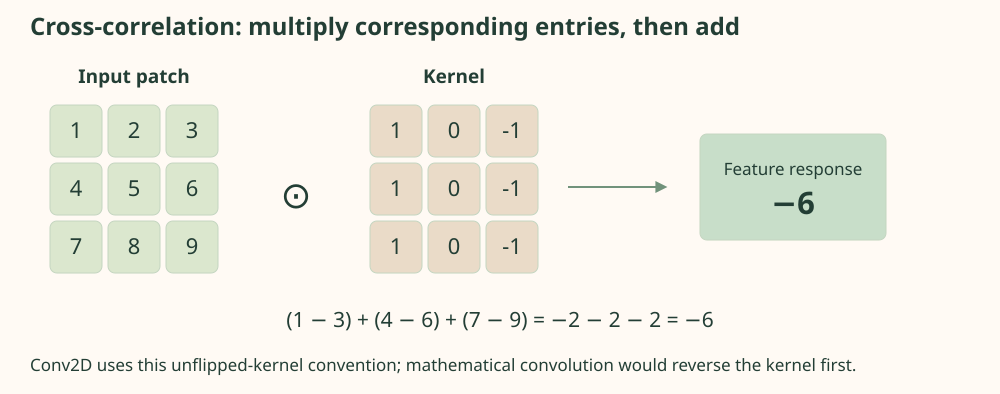
Move a filter across a numerical image
A 5 × 5 input contains numbers 1 through 25. Nine valid 3 × 3 windows are scanned in row-major order. The kernel values and exact sum appear below the grid. No filter is being learned.
2.6 A compact encoder–decoder
The encoder applies two same-padded convolutions at 64 × 64 resolution, downsamples to 32 × 32, repeats the process, then reaches a 16 × 16 bottleneck. Channels grow from 16 to 32 to 64. Max pooling chooses the largest activation in each local block; it reduces spatial precision while increasing the effective context visible to later layers.
The decoder upsamples feature maps using nearest-neighbor replication, concatenates corresponding encoder features, and refines them using convolutions. Upsampling restores the grid size but cannot independently recreate lost detail. Skip connections supply shallow features at matching resolution. Concatenation increases channel count: 64 upsampled channels plus 32 encoder channels make 96, then 32 plus 16 make 48 at the next stage.
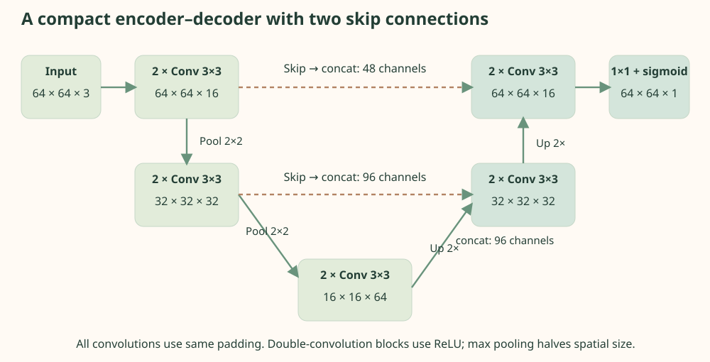
A final 1 × 1 convolution maps each location to one logit. Sigmoid converts it to a vegetation probability. The output is a score conditional on the synthetic training distribution, not a calibrated probability of a real-world land-cover fact. A threshold converts probabilities into a hard mask for decision metrics.
Build the dimensioned segmentation networkPythonCollapse Code
Canonical function excerpt, not a standalone program. The complete source below supplies imports and supporting functions.
def build_model(tf, size=64):
layers = tf.keras.layers
def block(x, channels):
x = layers.Conv2D(channels, 3, padding="same", activation="relu")(x)
return layers.Conv2D(channels, 3, padding="same", activation="relu")(x)
inputs = layers.Input((size, size, 3))
skip1 = block(inputs, 16) # [N,64,64,16]
skip2 = block(layers.MaxPool2D()(skip1), 32) # [N,32,32,32]
middle = block(layers.MaxPool2D()(skip2), 64) # [N,16,16,64]
x = block(layers.Concatenate()([layers.UpSampling2D()(middle), skip2]), 32)
x = block(layers.Concatenate()([layers.UpSampling2D()(x), skip1]), 16)
outputs = layers.Conv2D(1, 1, activation="sigmoid")(x)
return tf.keras.Model(inputs, outputs, name="compact_vegetation_unet")
2.7 Binary cross-entropy and Dice loss
Let pij be a predicted probability and yij its binary target. Cross-entropy penalizes confident incorrect predictions strongly. Averaging over all M pixels and all batch images yields a scalar. The canonical loss clips probabilities to [10⁻⁷,1−10⁻⁷] only for the logarithmic BCE calculation, using log and log1p; Dice uses the raw sigmoid output.
For a vegetation pixel with target 1, probability 0.9 contributes −log(0.9)≈0.10536 to BCE; probability 0.1 contributes about 2.30259. The latter is much more costly because the model assigns little probability to what actually occurred. Nonvegetation pixels use the complementary probability. The spatial arrangement still matters for mapping, which is why overlap scores and visual error locations complement this local loss.
A Bernoulli likelihood motivates each pixel contribution. Spatial independence is an objective convention, not a claim that neighboring errors are independent for statistical uncertainty.
If only 5% of pixels are vegetation, predicting none achieves 95% accuracy. Dice emphasizes overlap with the positive class. For hard sets A and B, D=2|A∩B|/(|A|+|B|). During training a soft approximation replaces hard membership by probabilities and multiplies them by binary targets.
Spatial and singleton-channel axes are reduced within each image, then images are averaged. This is different from pooling the whole batch into one Dice fraction.
The smoothing constant makes a completely empty pair well-defined. The Dice-loss weight is 0.5 in the supplied experiment; tune alternatives only using training and validation. Hard-mask test metrics use confusion counts, not this soft surrogate. Their numerical values need not agree even when calculated from the same probability map.
Connect stable BCE to per-image soft DicePythonCollapse Code
Canonical function excerpt, not a standalone program. The complete source below supplies imports and supporting functions.
def composite_loss(tf, y_true, y_pred):
"""BCE + 0.5 soft Dice loss, each image equally weighted, epsilon=1e-6."""
# Probability clipping is confined to logarithms; Dice uses raw sigmoid p.
clipped = tf.clip_by_value(y_pred, 1e-7, 1 - 1e-7)
bce = -tf.reduce_mean(y_true * tf.math.log(clipped) +
(1 - y_true) * tf.math.log1p(-clipped), axis=(1, 2, 3))
intersection = tf.reduce_sum(y_true * y_pred, axis=(1, 2, 3))
mass = tf.reduce_sum(y_true + y_pred, axis=(1, 2, 3))
dice = (2 * intersection + 1e-6) / (mass + 1e-6)
return tf.reduce_mean(bce + .5 * (1 - dice))
2.8 Training and optimization
Training constructs independent arrays, creates the network, and minimizes the composite loss using Adam. Batches expose multiple scenes per update. Validation loss is checked after each epoch; early stopping restores the weights from the best validation epoch. The held-out test set is evaluated only after these choices. Quick mode is a pipeline check and can underfit badly; it should not be quoted as evidence about achievable quality.
The source saves a native Keras archive and reloads it for prediction comparison. That round trip checks that the exported model preserves its outputs. It does not prove that a model is accurate. Training history and test predictions are exported only by an actual fit, with seed, configuration, and software versions. The supplied static page currently has no fitted segmentation output, so its visible mask is the baseline identified below.
For robustness, record the model's response to darker lighting, different roof palettes, vegetation density, and altered shadow prevalence. These experiments change the data-generating distribution, not merely the test seed. A model that succeeds on independent draws can still fail under a small distribution shift.
2.9 Evaluation and an inspectable baseline
At threshold τ, a positive prediction is p≥τ. Sum true positives TP, false positives FP, false negatives FN, and true negatives TN over all test pixels to obtain micro-aggregated metrics. This gives large images and large foreground regions more influence than an unweighted average of per-scene scores. Both conventions can be useful, but mixing them makes a comparison ambiguous.
Accuracy=(TP+TN)/all pixels. Zero denominators need an explicit convention; the source handles them consistently and exports the underlying counts.
Dice equals 2·IoU/(1+IoU) when both use the same nonempty hard-mask counts. They emphasize positive overlap differently but are not independent evidence. Precision asks whether marked vegetation is correct; recall asks whether actual vegetation was found. Coverage error can be small even when spatial errors cancel: false-positive roofs can offset missed trees.
Inspect a synthetic neighborhood
The score is a deterministic excess-green color heuristic supplied by the generator. Moving its threshold changes an actual hard mask and recomputes confusion counts. It is deliberately vulnerable to green roofs and shadows.
Error colors: coral = false positive; blue = false negative; green = true positive. Intensities are synthetic. The three scenes are inspection examples, not the full test population.
The baseline's exported aggregate scores appear in the reproduction data, with scene-level counts. Changing the interactive threshold explores a tradeoff; selecting that threshold by inspecting a final test is still test-set tuning. Fix the operating threshold using validation before making a final comparison with a trained network.
2.10 Errors, uncertainty, and robustness
Inspect the predicted mask beside the true mask, then switch to the error view. Look for two distinct failure mechanisms: greenish constructed surfaces can produce false positives, while dim tree crowns can produce false negatives. At higher thresholds the latter should increase; at lower thresholds the former should increase. A single pleasing overlay conceals this tradeoff, which is why several scenes and confusion counts are provided.
A sigmoid score is not automatically a reliable confidence measure. Calibration would require checking predicted probabilities against observed frequencies on a separate evaluation sample. Correlated pixels complicate confidence intervals: bootstrapping individual pixels understates uncertainty when errors are spatially clustered. Resample independent scenes or, for real imagery, larger geographic units justified by the sampling design.
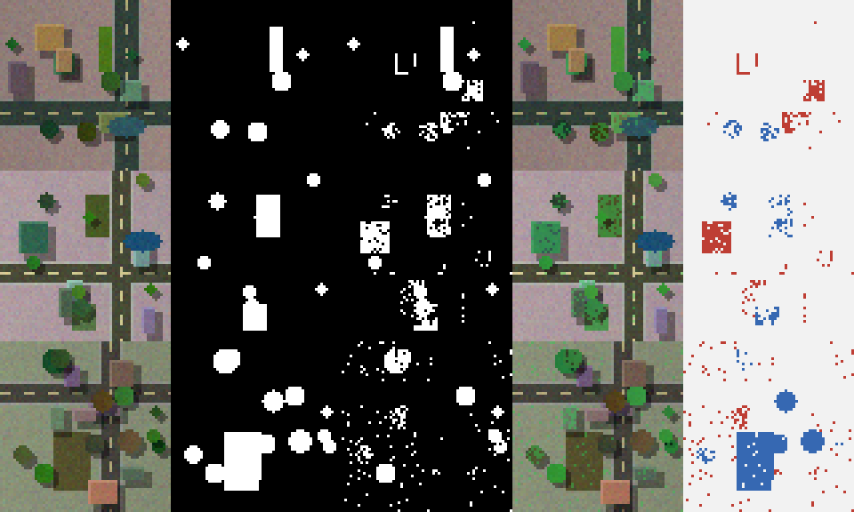
Spatial autocorrelation is especially dangerous in geospatial work. Neighboring tiles may share roofs, vegetation, acquisition conditions, and sensor artifacts. A random tile split can therefore test recognition of nearly repeated local patterns. Use geographically separated regions and ideally later acquisitions to assess deployment performance. Maintain comparable class prevalence when interpreting changes in precision.
Checkpoint: why can 95% accuracy describe useless segmentation?
If vegetation occupies 5% of the image, an all-background prediction has 95% accuracy and zero positive recall. Examine the confusion counts and a foreground overlap metric. Also check whether any zero-denominator convention has hidden an empty prediction.
2.11 Complete Python experiment
The canonical program includes scene generation, a color baseline, model construction, the composite loss, fitting, early stopping, held-out evaluation, saved-model verification, and PNG/JSON/NPZ output. Each substantial embedded fragment is extracted from that file during page assembly. Copying the complete program preserves its imports and command-line entry point.
Run python 01_computer_vision.py --quick --output outputs/vision-quick to test the pipeline, then omit --quick for the full configuration. Outputs go to a separate directory so reference data are not silently overwritten. Inspect loss histories for divergence and verify that the chosen model improves on the baseline under the same masks and metric definitions. No such improvement has been established in this authoring environment.
Complete program · 01_computer_vision.pyPythonCollapse Code
Complete standalone program. Save the copied text as 01_computer_vision.py; install the documented dependencies before running.
"""Synthetic urban vegetation segmentation with a small U-Net and color baseline.
Independent program: python 01_computer_vision.py --quick --output ../outputs/vision
All scenes are synthetic; there is no satellite data or claim of real-world validity.
NumPy-only functions can be imported without TensorFlow. Training needs requirements.txt.
"""
from __future__ import annotations
import argparse
import hashlib
import json
import os
from pathlib import Path
import platform
import struct
import time
import zlib
os.environ.setdefault("CUDA_VISIBLE_DEVICES", "-1")
os.environ.setdefault("TF_CPP_MIN_LOG_LEVEL", "2")
import numpy as np
# SECTION 1 — A reproducible, editable data-generating process.
def generate_scene(seed: int, size: int = 64) -> tuple[np.ndarray, np.ndarray]:
"""Return RGB float32[H,W,3] and vegetation float32[H,W,1].
Semantic masks are painted with the same geometry as objects, BEFORE shadows,
illumination, and sensor noise. Green roofs are explicitly non-vegetation.
Dry/shadowed plants remain vegetation. Later objects occlude earlier objects.
"""
rng = np.random.default_rng(seed)
yy, xx = np.mgrid[:size, :size]
image = np.empty((size, size, 3), dtype=np.float64)
image[:] = rng.uniform([.60, .57, .48], [.78, .73, .64])
mask = np.zeros((size, size), dtype=bool)
def paint(region, color, vegetation=False):
image[region] = color
mask[region] = vegetation
# Broad lawn blocks surrounded by mineral pavement.
for _ in range(int(rng.integers(1, 4))):
x0, y0 = rng.integers(0, size - 10, 2)
width, height = rng.integers(9, 25, 2)
region = (xx >= x0) & (xx < x0 + width) & (yy >= y0) & (yy < y0 + height)
paint(region, rng.uniform([.17, .32, .10], [.42, .66, .27]), True)
# Cross streets with variable widths and markings; sidewalks precede asphalt.
cx, cy = rng.integers(size // 4, 3 * size // 4, 2)
half = int(rng.integers(3, 6))
paint((abs(xx - cx) <= half + 1) | (abs(yy - cy) <= half + 1), [.68, .69, .66])
road = (abs(xx - cx) <= half) | (abs(yy - cy) <= half)
paint(road, rng.uniform(.19, .32, 3))
paint(((xx == cx) & (yy % 9 < 4)) | ((yy == cy) & (xx % 9 < 4)), [.83, .79, .58])
# Roofs include a deliberately confusing green-painted material.
for _ in range(int(rng.integers(4, 10))):
x0, y0 = rng.integers(1, size - 9, 2)
width, height = rng.integers(5, 13, 2)
region = (xx >= x0) & (xx < x0 + width) & (yy >= y0) & (yy < y0 + height)
shadow = (xx >= x0 + 2) & (xx < x0 + width + 3) & (yy >= y0 + 2) & (yy < y0 + height + 3)
image[shadow] *= .63
color = (rng.uniform([.14, .33, .19], [.30, .55, .33]) if rng.random() < .25
else rng.uniform([.39, .33, .29], [.83, .70, .61]))
paint(region, color)
image[region & ((xx == x0) | (yy == y0))] = np.minimum(color + .11, 1)
# Occasional water adds another blue-green confounder.
if rng.random() < .4:
wx, wy = rng.integers(7, size - 7, 2)
water = ((xx - wx) / 7) ** 2 + ((yy - wy) / 4) ** 2 <= 1
paint(water, rng.uniform([.10, .30, .31], [.25, .48, .53]))
# Tree crowns are clustered but independently sampled; some are dry/brown.
for _ in range(int(rng.integers(5, 23))):
tx, ty = rng.integers(2, size - 2, 2)
radius = float(rng.uniform(2, 5))
canopy = (xx - tx) ** 2 + (yy - ty) ** 2 <= radius ** 2
image[(xx - tx - 2) ** 2 + (yy - ty - 2) ** 2 <= radius ** 2] *= .60
dry = rng.random() < .16
color = (rng.uniform([.34, .31, .12], [.55, .48, .28]) if dry
else rng.uniform([.08, .26, .06], [.30, .58, .24]))
paint(canopy, color, True)
image[canopy] *= (1 + .08 * (xx[canopy] - tx) / radius)[:, None]
# Multiplicative illumination and additive sensor noise never alter labels.
lighting = rng.uniform(.72, 1.13) * (1 + rng.uniform(-.18, .18) * xx / size)
image *= lighting[..., None]
image += rng.normal(0, .022, image.shape)
return np.clip(image, 0, 1).astype(np.float32), mask[..., None].astype(np.float32)
def make_dataset(n: int, seed: int, size: int = 64):
"""Independent child seeds, with exact scene duplication checked explicitly."""
seeds = np.random.SeedSequence(seed).generate_state(n, dtype=np.uint64)
pairs = [generate_scene(int(s), size) for s in seeds]
images = np.stack([p[0] for p in pairs])
masks = np.stack([p[1] for p in pairs])
fingerprints = [hashlib.sha256(im.tobytes() + m.tobytes()).hexdigest() for im, m in pairs]
assert len(set(fingerprints)) == n
assert images.shape == (n, size, size, 3) and masks.shape == (n, size, size, 1)
assert np.isfinite(images).all() and set(np.unique(masks)) <= {0., 1.}
return images, masks
def color_score(images: np.ndarray) -> np.ndarray:
"""Fixed excess-green score, NOT a trained probability or neural prediction."""
score = 2 * images[..., 1] - images[..., 0] - images[..., 2]
return np.clip((score + .05) / .55, 0, 1)[..., None]
def segmentation_metrics(truth, scores, threshold: float = .5) -> dict:
"""Micro aggregation across every pixel; empty union/Dice is defined as one."""
y, p = np.asarray(truth) >= .5, np.asarray(scores) >= threshold
tp, fp = int(np.sum(y & p)), int(np.sum(~y & p))
fn, tn = int(np.sum(y & ~p)), int(np.sum(~y & ~p))
return {"tp": tp, "fp": fp, "fn": fn, "tn": tn,
"accuracy": (tp + tn) / y.size,
"precision": tp / (tp + fp) if tp + fp else 0.,
"recall": tp / (tp + fn) if tp + fn else 0.,
"iou": tp / (tp + fp + fn) if tp + fp + fn else 1.,
"dice": 2 * tp / (2 * tp + fp + fn) if 2 * tp + fp + fn else 1.}
# SECTION 2 — A compact encoder–decoder, with same-resolution skip connections.
def build_model(tf, size=64):
layers = tf.keras.layers
def block(x, channels):
x = layers.Conv2D(channels, 3, padding="same", activation="relu")(x)
return layers.Conv2D(channels, 3, padding="same", activation="relu")(x)
inputs = layers.Input((size, size, 3))
skip1 = block(inputs, 16) # [N,64,64,16]
skip2 = block(layers.MaxPool2D()(skip1), 32) # [N,32,32,32]
middle = block(layers.MaxPool2D()(skip2), 64) # [N,16,16,64]
x = block(layers.Concatenate()([layers.UpSampling2D()(middle), skip2]), 32)
x = block(layers.Concatenate()([layers.UpSampling2D()(x), skip1]), 16)
outputs = layers.Conv2D(1, 1, activation="sigmoid")(x)
return tf.keras.Model(inputs, outputs, name="compact_vegetation_unet")
def composite_loss(tf, y_true, y_pred):
"""BCE + 0.5 soft Dice loss, each image equally weighted, epsilon=1e-6."""
# Probability clipping is confined to logarithms; Dice uses raw sigmoid p.
clipped = tf.clip_by_value(y_pred, 1e-7, 1 - 1e-7)
bce = -tf.reduce_mean(y_true * tf.math.log(clipped) +
(1 - y_true) * tf.math.log1p(-clipped), axis=(1, 2, 3))
intersection = tf.reduce_sum(y_true * y_pred, axis=(1, 2, 3))
mass = tf.reduce_sum(y_true + y_pred, axis=(1, 2, 3))
dice = (2 * intersection + 1e-6) / (mass + 1e-6)
return tf.reduce_mean(bce + .5 * (1 - dice))
def segmentation_loss(y_true, y_pred):
"""Named serializable loss; avoid a lambda closing over the TensorFlow module."""
import tensorflow as tf
return composite_loss(tf, y_true, y_pred)
# SECTION 3 — Small dependency-free scientific output (standard PNG).
def write_rgb_png(path: Path, image: np.ndarray):
"""Write RGB uint8 pixels using only Python's standard library."""
image = np.asarray(image, dtype=np.uint8)
height, width, channels = image.shape
assert channels == 3
def chunk(kind, data):
return struct.pack(">I", len(data)) + kind + data + struct.pack(">I", zlib.crc32(kind + data) & 0xffffffff)
rows = b"".join(b"\x00" + image[j].tobytes() for j in range(height))
path.write_bytes(b"\x89PNG\r\n\x1a\n" +
chunk(b"IHDR", struct.pack(">IIBBBBB", width, height, 8, 2, 0, 0, 0)) +
chunk(b"IDAT", zlib.compress(rows, 9)) + chunk(b"IEND", b""))
def write_examples(path, images, masks, scores):
"""Five columns: RGB, truth, thresholded fit, overlay, errors; red FP/blue FN."""
rows = []
for image, truth, score in zip(images, masks, scores):
y, p = truth[..., 0] > .5, score[..., 0] >= .5
rgb = np.rint(image * 255).astype(np.uint8)
truth_rgb, predicted_rgb = np.repeat(y[..., None], 3, -1) * 255, np.repeat(p[..., None], 3, -1) * 255
overlay = rgb.copy().astype(float)
overlay[p] = .55 * overlay[p] + .45 * np.array([58, 190, 87])
errors = np.full_like(rgb, 242)
errors[~y & p] = [190, 62, 52]
errors[y & ~p] = [54, 104, 178]
rows.append(np.concatenate([rgb, truth_rgb, predicted_rgb, overlay.astype(np.uint8), errors], axis=1))
write_rgb_png(path, np.repeat(np.repeat(np.concatenate(rows, axis=0), 3, 0), 3, 1))
# SECTION 4 — Training, validation, fair baseline selection, and held-out test.
def run(args):
import tensorflow as tf
tf.keras.utils.set_random_seed(args.seed)
tf.config.experimental.enable_op_determinism()
counts = (80, 20, 24) if args.quick else (1000, 200, 200)
split_seeds = np.random.SeedSequence(args.seed).generate_state(3)
splits = [make_dataset(n, int(seed)) for n, seed in zip(counts, split_seeds)]
(x_train, y_train), (x_val, y_val), (x_test, y_test) = splits
# Exact duplicate detection across all splits, not merely within each split.
hashes = [hashlib.sha256(im.tobytes()).hexdigest() for x, _ in splits for im in x]
assert len(set(hashes)) == sum(counts)
val_scores = color_score(x_val)
thresholds = np.linspace(.1, .9, 17)
threshold = float(max(thresholds, key=lambda q: segmentation_metrics(y_val, val_scores, q)["iou"]))
def dataset(x, y, training=False):
ds = tf.data.Dataset.from_tensor_slices((x, y))
if training:
ds = ds.shuffle(len(x), seed=args.seed, reshuffle_each_iteration=True)
return ds.batch(8).prefetch(tf.data.AUTOTUNE)
model = build_model(tf)
loss_fn = tf.keras.utils.register_keras_serializable(package="Monograph")(segmentation_loss)
model.compile(optimizer=tf.keras.optimizers.Adam(1e-3), loss=loss_fn, jit_compile=False)
start = time.perf_counter()
history = model.fit(dataset(x_train, y_train, True), validation_data=dataset(x_val, y_val),
epochs=2 if args.quick else 35, verbose=2,
callbacks=[tf.keras.callbacks.EarlyStopping(monitor="val_loss", patience=5,
restore_best_weights=True),
tf.keras.callbacks.TerminateOnNaN()])
probabilities = model.predict(x_test, batch_size=8, verbose=0)
assert probabilities.shape == y_test.shape and np.isfinite(probabilities).all()
args.output.mkdir(parents=True, exist_ok=True)
model_path = args.output / "vegetation.keras"
model.save(model_path)
restored = tf.keras.models.load_model(model_path, compile=False)
np.testing.assert_allclose(restored.predict(x_test[:2], verbose=0), probabilities[:2], atol=1e-6)
# Show failure cases as well as representative cases, sorted by per-image IoU.
per_image = [segmentation_metrics(y, p) for y, p in zip(y_test, probabilities)]
order = np.argsort([m["iou"] for m in per_image])[:4]
write_examples(args.output / "worst_segmentation_examples.png", x_test[order], y_test[order], probabilities[order])
output = {"provenance": "actual TensorFlow training on synthetic scenes", "seed": args.seed,
"environment": {"python": platform.python_version(), "numpy": np.__version__, "tensorflow": tf.__version__},
"configuration": {"counts": counts, "epochs_max": 2 if args.quick else 35, "threshold": .5,
"baseline_threshold_selected_on_validation": threshold, "loss": "BCE + 0.5 soft-Dice"},
"neural_metrics": segmentation_metrics(y_test, probabilities),
"baseline_metrics": segmentation_metrics(y_test, color_score(x_test), threshold),
"history": history.history, "seconds": time.perf_counter() - start,
"worst_examples": [{"test_index": int(i), **per_image[i]} for i in order],
"model_parameters": model.count_params(), "reload_verified": True}
(args.output / "results.json").write_text(json.dumps(output, indent=2), encoding="utf-8")
np.savez_compressed(args.output / "held_out_predictions.npz", images=x_test[:8], truth=y_test[:8], probabilities=probabilities[:8])
print(json.dumps(output, indent=2))
if __name__ == "__main__":
parser = argparse.ArgumentParser(description=__doc__)
parser.add_argument("--quick", action="store_true", help="80/20/24 scenes, at most two epochs; a smoke test, not convergence")
parser.add_argument("--seed", type=int, default=42)
parser.add_argument("--output", type=Path, default=Path(__file__).resolve().parents[1] / "outputs/vision")
args = parser.parse_args()
try:
run(args)
except ModuleNotFoundError as exc:
raise SystemExit("Install requirements.txt in an isolated environment first.") from exc
2.12 From synthetic scenes to real geography
Real remote sensing adds georeferencing, clouds, atmospheric effects, sensor calibration, ambiguous labels, and changing ground resolution. Multispectral channels can help separate vegetation from colored construction, but each channel needs a physical interpretation and appropriate normalization. A model trained on summer imagery may not recognize leaf-off trees or dry vegetation. Vegetation coverage is also scale-dependent: a mixed pixel is not a perfectly labeled object.
For large rasters, tile inference with overlap and discard uncertain tile borders to reduce seam artifacts. Preserve coordinate transforms when stitching outputs. Evaluate geographic and seasonal transfer explicitly rather than assuming a larger training set solves domain shift. If the goal is coverage, quantify both classification error and sampling uncertainty, and distinguish canopy cover from other ecological quantities. A carefully validated color or spectral index can remain preferable when its assumptions fit the task.
2.13 What did TensorFlow contribute to urban vegetation segmentation?
The computational challenge is to assign a vegetation probability to every pixel while using spatial context. The implemented excess-green baseline applies one fixed color rule to RGB arrays; it needs neither training nor automatic differentiation. Texture features with a classical classifier offer another intermediate option. A convolutional encoder–decoder instead learns filters and combines fine and coarse spatial information. These are different modeling choices, not equivalent algorithms with different package names.
In the supplied neural source, a batch has shape B × 64 × 64 × 3 and the output has shape B × 64 × 64 × 1. Keras convolution, pooling, upsampling, and concatenation layers assemble the compact U-Net-inspired model. TensorFlow differentiates the combined BCE and soft Dice objective through those operations; Adam maintains optimizer state. The source constructs batches of eight with tf.data and prefetching, then uses the same model for inference and saving. The generator itself remains ordinary NumPy code.
| Responsibility | Custom neural implementation | Component used here | Researcher still decides |
|---|---|---|---|
| Spatial model | Coordinate kernels, parameter arrays, skip paths, and shapes | Keras Conv2D and encoder–decoder layers | Receptive field, capacity, resolution, and alignment |
| Training | Implement or obtain backward operations and maintain optimizer state | Automatic gradients, composite loss, Adam | Loss weights, threshold, stopping rule, and data split |
| Data and inference | Coordinate batches, preprocessing, prediction, and serialization | Dataset batching/prefetch, Model prediction and saving | Memory budget, inference preprocessing, and reload verification |
NumPy and SciPy can provide efficient array and filtering operations, and PyTorch or JAX can supply automatic differentiation for an equivalent learned model. TensorFlow reduces the amount of custom neural training infrastructure in this particular implementation. It is not needed to express the threshold baseline, and a full custom neural implementation would be substantially more involved than that baseline.
Batched convolution kernels and supported hardware acceleration create opportunities for faster computation at useful workloads. Prefetching may overlap preparation with training, as described in the TensorFlow data-performance guide; with small in-memory arrays, there may be little preparation to hide. No runtime comparison was executed here.
The executed three-scene browser baseline has pooled IoU 0.422249 and Dice 0.593776. These are conventional color-rule results, not neural scores or a complete urban validation study. Neural training remains unexecuted, so improvement over this rule has not been established. Better filters, if learned, would still face synthetic-to-real shift, shadows, sensor differences, and spatially dependent errors. TensorFlow makes the proposed segmentation model manageable; only independent evaluation can establish its value for vegetation mapping.
Understanding University Service Requests
A message is a sequence of symbols, not a numerical array ready for matrix multiplication. Text classification therefore begins with a representation decision: what information should survive the journey from words to tensors?
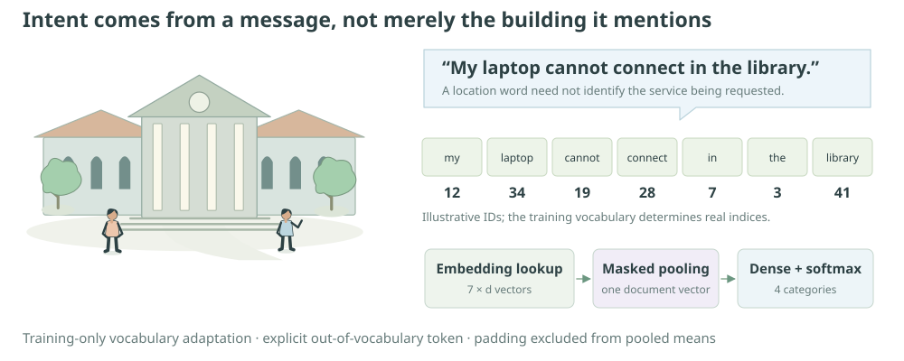
3.1 A university routing problem
A university receives requests about wireless access, journal resources, residence repairs, and campus buses. Routing them automatically can reduce manual sorting, but the location of a request is not necessarily its subject. “The Wi-Fi in the library fails” concerns IT; “I need a journal from the library” concerns Library services. A model must learn distinctions that share contextual words.
A service desk could begin with keyword rules: “password” suggests IT and “renew a book” suggests Library. A statistical alternative counts words or uses TF-IDF features with a linear classifier. Such methods are economical and often strong on small datasets, but shared words, negation, and mixed intents expose their limits. This study first fits a count-based baseline, then lets an embedding model learn its own task-specific representation. The neural infrastructure does not remove ambiguity in the labels.
The dataset uses original synthetic messages with varied templates, paraphrases, informal expressions, typographical variation, and cross-category context. Its labels describe the generator's intended primary service. In a real workflow a message may legitimately belong to several services, or require a clarifying reply. A four-way classifier is an explicit simplification, not a complete service policy.
Study specification
- Question and target
- Predict one of four intended service categories from a previously unseen written request.
- Data and assumptions
- Synthetic messages with known generation labels; some template families are reserved entirely for validation and testing. Real language diversity is not represented fully.
- Methods
- A fitted multinomial naïve Bayes bag-of-words baseline and a trainable embedding–pooling classifier. The latter minimizes sparse categorical cross-entropy.
- Evidence and limit
- Accuracy, per-class precision/recall, macro-F1, confusion counts, and difficult examples. Browser probabilities are from the executed conventional baseline; neural fitting is unexecuted here.
3.2 Text as structured input
The transformation is raw text → normalization → tokens → integer IDs → padded sequence → embedding vectors → document representation → category scores. Every arrow makes a decision. Lowercasing merges “Library” and “library.” Punctuation removal may erase useful distinctions. Truncation discards part of a long request. A model cannot recover information that preprocessing deliberately removes.
For example, “Wi-Fi in the library?” becomes a lowercase punctuation-stripped string. Keras's default standardizer deletes punctuation, so “Wi-Fi” becomes “wifi,” not two tokens “wi” and “fi.” Whitespace splitting then yields the sequence. The exact behavior matters when reproducing encoded inputs. The browser tokenizer follows this documented English ASCII convention; it does not claim to be a general multilingual tokenizer.
Different representations imply different invariances. Bag-of-words ignores order. Average embeddings also ignore order after token lookup. A recurrent or attention model can preserve order, at higher computational and statistical cost. Start with the simplest representation capable of testing the proposed distinction, then use challenge examples to reveal what it cannot express.
3.3 Vocabulary construction and leakage prevention
A vocabulary maps token strings to integer rows. ID 0 denotes padding and ID 1 denotes an unknown token in the integer-mode TextVectorization convention. These special entries count toward the vocabulary capacity. The neural implementation uses a fixed maximum sequence length; short messages are padded and long ones truncated. The actual fitted vocabulary, rather than an imagined universal dictionary, determines which words are known.
Adapt the vectorizer on training messages only. Vocabulary membership and term frequencies are learned preprocessing statistics even if no target labels enter the adaptation. Letting test text influence them exposes information about the evaluation population. The same rule applies to inverse-document frequencies and feature selection in a conventional baseline.
The generator reserves underlying template families instead of randomly scattering near-identical paraphrases across splits. Families 0–5 are used for training, 6–7 for validation, and 8–9 for testing. Normalized messages are deduplicated across the resulting sets. This tests a limited kind of template transfer. Shared topics and a finite phrase bank can still make the task substantially easier than naturally occurring service requests.
Generate deduplicated messages with held-out template familiesPythonCollapse Code
Canonical function excerpt, not a standalone program. The complete source below supplies imports and supporting functions.
def generate_messages(name: str, per_class: int, seed: int):
rng = np.random.default_rng(seed)
texts, labels, family_ids, seen = [], [], [], set()
intent_sets = INTENTS if name == "train" else EVALUATION_INTENTS
for label, intents in enumerate(intent_sets):
attempts = 0
while sum(y == label for y in labels) < per_class:
attempts += 1
if attempts > per_class * 100:
raise ValueError("Requested more unique messages than the finite generator can supply")
family = int(rng.choice(FAMILIES[name]))
text = TEMPLATES[family].format(intent=rng.choice(intents), prefix=rng.choice(PREFIXES), suffix=rng.choice(SUFFIXES))
# Modest typographical variation, using an independent deterministic draw.
if rng.random() < .08:
text = text.replace("campus", "campuss").replace("library", "libary")
normalized = " ".join(tokenize(text))
if normalized in seen:
continue
seen.add(normalized)
texts.append(text)
labels.append(label)
family_ids.append(family)
order = rng.permutation(len(texts))
return [texts[i] for i in order], np.asarray(labels, dtype=np.int64)[order], np.asarray(family_ids)[order]
A stricter study would independently author challenge sets after freezing the model, include out-of-category messages, and measure rejection quality. The supplied difficult probes include shared-context wording and ambiguous requests. They are diagnostic examples, not enough observations to estimate real-world error rates.
3.4 From integers to useful representations
Token IDs are addresses, not magnitudes. ID 250 is not semantically twice ID 125. Feeding IDs directly into a dense layer would impose a meaningless numerical geometry. One-hot encoding gives each token its own coordinate, while an embedding lookup selects a learned dense row. Both approaches separate identity from an arbitrary index value.
A bag-of-words vector counts occurrences in a vocabulary-sized array. Under multinomial naïve Bayes, class-specific token probabilities are estimated from smoothed counts. A document's class log score is a log prior plus the sum of token-count-weighted log probabilities. The conditional-independence approximation is strong, but the baseline is fast and transparent. Its normalized scores may be overconfident when words are correlated.
Nkv counts training occurrences in class k; cv counts tokens in the current document. Positive smoothing alpha prevents unseen class-token pairs from receiving zero likelihood.
The baseline and neural model share split membership and evaluation labels. They need not share identical feature engineering, but each preprocessing step must be fitted using training data alone. An extra-capacity model gets no fairness credit merely for having more parameters.
3.5 Word embeddings
For vocabulary size V and embedding dimension d, the matrix E has shape V × d. Looking up a token selects one row. A sequence of T tokens becomes a T × d matrix; a batch becomes B × T × d. During training, gradients update rows used by the examples, with downstream effects determined by the classifier loss.
For a tiny lookup example, suppose token ID2 selects (1,0) and ID3 selects (0,2). Encoded sequence (2,3,0) contains two words and one padding entry. Masked pooling returns ((1,0)+(0,2))/2=(0.5,1). Dividing by three would incorrectly dilute the representation. If the same word occurs twice, its embedding row contributes twice and receives the sum of those gradient contributions; integer IDs themselves are never treated as continuous magnitudes.
A nonempty message is assumed for this expression. The interface detects empty input. A padding-aware Keras pooling layer consumes the mask from Embedding(mask_zero=True).
Without masking, padding contributes to the average and dilutes short messages more than long ones. Setting mask_zero=True alone is not enough if the next layer ignores the mask. The chosen GlobalAveragePooling1D consumes it. Sequence length, truncation, and mask propagation belong in the model specification, not in an undocumented preprocessing script.
Distances between learned embedding rows reflect usefulness for this training task. They are not universal measures of meaning. Two words can be near because the classifier uses them in similar contexts; that does not imply interchangeability in every sentence. A two-dimensional projection can distort distances, so the article does not invent a semantic map from untrained embeddings.
3.6 Choosing a neural architecture
The main neural classifier uses integer vectorization, a 24-dimensional embedding, masked mean pooling, a compact nonlinear dense layer, and four logits. It is deliberately small. Pooling permits variable message lengths and concentrates the lesson on discrete lookup, masking, and probabilistic outputs. The resulting classifier can learn shared features beyond the independent-token baseline, but it remains insensitive to token order.
That limitation is testable. If two requests contain exactly the same tokens with the same counts, the pooled model returns the same representation regardless of order. Negation and role reversal can therefore be difficult. A bidirectional recurrent model could process left and right context separately, while a transformer could attend across positions. Either extension should earn its complexity on a predefined challenge set.
A recurrent update has the form ht=φ(Wxet+Whht−1+b). Unlike averaging, it carries a state that depends on previous order. Gated models control what information is retained. This chapter's executable core uses pooling; the forecasting chapter discusses recurrence as an alternative to its compact temporal convolution.
Build the train-only text representation and classifierPythonCollapse Code
Canonical function excerpt, not a standalone program. The complete source below supplies imports and supporting functions.
def build_model(tf, training_texts):
vectorizer = tf.keras.layers.TextVectorization(max_tokens=3000, output_sequence_length=48,
standardize="lower_and_strip_punctuation", split="whitespace")
vectorizer.adapt(tf.data.Dataset.from_tensor_slices(tf.constant(training_texts)).batch(32))
inputs = tf.keras.layers.Input(shape=(), dtype=tf.string)
encoded = vectorizer(inputs)
x = tf.keras.layers.Embedding(len(vectorizer.get_vocabulary()), 24, mask_zero=True)(encoded)
x = tf.keras.layers.GlobalAveragePooling1D()(x) # Respects padding mask.
x = tf.keras.layers.Dense(32, activation="relu")(x)
x = tf.keras.layers.Dropout(.15)(x)
logits = tf.keras.layers.Dense(4)(x)
return tf.keras.Model(inputs, logits, name="university_request_classifier"), vectorizer
3.7 Softmax and cross-entropy
Logits are unrestricted real scores. Softmax converts them into positive numbers summing to one. Adding a common constant to all logits changes no probability, which allows the numerically stable subtraction of their maximum before exponentiation. The largest logit is also the largest probability, but the absolute scale of logit differences controls confidence.
For a single observed class y, the logit derivative is pk − 1{k=y}. A gradient flows from these differences through the classifier and into the selected embedding rows.
Take logits (2, 1, 0, −1) and true class 1 in one-based numbering. After subtracting 2 the exponential terms are (1, 0.36787944, 0.13533528, 0.04978707), totaling 1.55300179. Probabilities are approximately (0.64391426, 0.23688282, 0.08714432, 0.03205860). The loss is −log(0.64391426)=0.44018970. The foundations program checks the same calculation with TensorFlow.
Detailed derivation: why does the gradient become p minus the target?
Write the loss as −zy+log Σjexp(zj). Differentiating the first term with respect to zk yields −1{k=y}. Differentiating log-sum-exp yields exp(zk)/Σ exp(zj)=pk. Their sum is the claimed derivative. The stable maximum-shifted computation represents the same smooth function; use the library implementation rather than manually differentiating an arbitrary branch.
Use SparseCategoricalCrossentropy(from_logits=True) with integer class labels when the final layer returns logits. Applying a sigmoid independently to four classes defines a different, multilabel model. Do not apply softmax twice or tell the loss that probabilities are logits.
3.8 Training the classifier
The vectorizer adapts once on training text, then its vocabulary is frozen. Training batches contain strings and integer labels. Keras's string preprocessing runs with the TensorFlow backend; explicit jit_compile=False avoids assuming that string operations support accelerator compilation. The model uses Adam and early stopping on validation loss, then evaluates the untouched template-held-out test messages.
Both neural and baseline artifacts retain their class order. A vector of four probabilities is meaningless without knowing which component corresponds to IT, Library, Housing, or Transportation. Save that order alongside the vocabulary and sequence-length configuration. A reloaded pipeline must reproduce the same preprocessing and predictions, not merely load a file without raising an exception.
Overfitting may appear as improving training cross-entropy with worsening validation cross-entropy even when accuracy is stable. The probabilities can become more confident on a few mistakes. Monitor both the proper scoring rule and decision metrics. Hyperparameters selected using validation are part of the fitting procedure and should be reported with the final model.
3.9 Evaluate classes and inspect messages
A confusion matrix has true classes in rows and predicted classes in columns. For each class, precision measures the fraction of predicted members that are correct, recall the fraction of true members recovered, and F1 their harmonic mean. Macro-F1 averages the four class F1 values equally. Accuracy weights every message equally, so a dominant class can conceal poor performance on a rare service.
Cross-entropy additionally measures probability quality: assigning a true label probability of 0.01 is much worse than assigning it 0.4, even if both produce the same wrong top label. Calibration asks whether groups of predictions with a stated confidence are correct at the corresponding frequency. Neither a high softmax maximum nor a low entropy guarantees correctness on unfamiliar language.
Watch a message become an encoded sequence
Preset scores are actual held-out predictions from a fitted conventional multinomial naïve Bayes model, not a neural network. Editing a preset switches to tokenization-only mode: this page does not invent probabilities for arbitrary text. ID 1 means unknown; ID 0 is padding. The toy baseline vocabulary is displayed explicitly and is separate from a future fitted Keras vocabulary.
| Held-out request | Intended class | Baseline prediction | Top probability |
|---|---|---|---|
| Challenge examples load from the exported baseline data. | |||
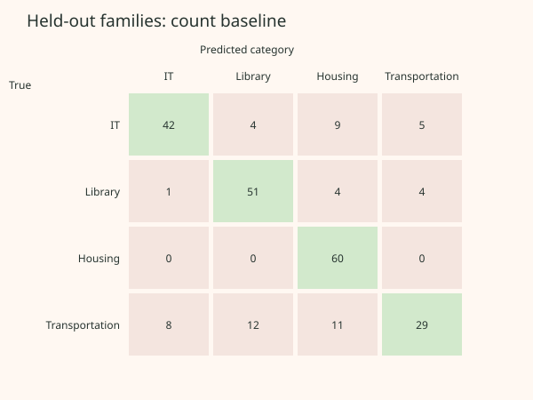
Compare a library-location Wi-Fi request with a library-resource request using the presets. The difference is evidence about this fitted baseline on those specific sentences. It is not a causal word-importance claim. Removing a word can create unnatural language or change several semantic properties at once.
3.10 Ambiguity, shift, and rejection
“I cannot access the journal because my residence Wi-Fi is down” can need both IT and Library support. A single synthetic label hides that ambiguity. A production system should allow multi-service routing, uncertain status, or human review. A fixed rejection threshold must be tuned on data that include realistic ambiguous and out-of-category requests; a four-class maximum alone is not an out-of-distribution detector.
Rare words map to unknown tokens, truncation can remove the decisive clause, and typos can erase known features. Shared templates can teach shortcuts that survive a random test split. Language changes across departments, academic years, languages, and communication channels. Before deployment, measure these shifts and evaluate groups defined by the intended workflow rather than assuming synthetic balance mirrors actual demand.
Privacy changes the design of a real collection process: minimize retained personal content, control access, and define an appropriate review policy. This monograph avoids personal data by construction. Token saliency, if added, should be framed as sensitivity of a chosen score to a chosen intervention, with explicit limitations; it is not an automatic explanation of why a person wrote the request.
Checkpoint: why does excellent synthetic accuracy not establish useful university routing?
The generator restricts vocabulary, grammar, intent combinations, and labels. A classifier can learn these restrictions instead of handling human language. Family-held-out splits reduce one leakage route but do not create external validity. An independently sampled, appropriately governed real evaluation is a separate study.
3.11 Complete Python experiment
Run python 02_natural_language_processing.py --quick --output outputs/nlp-quick. The program creates disjoint template-family datasets, adapts preprocessing only on training text, fits baseline and neural models, evaluates the same test set, and exports class-level metrics, confusion counts, challenge examples, and the saved model. Prediction probabilities are exported only after real computation.
The complete source is independently executable with the documented dependencies. It contains all generators and baseline routines. The browser's bundled conventional results are generated separately with the same data-construction principles and are identified by provenance. Re-running neural training does not automatically replace this page's assets; inspect and explicitly integrate a new export after validation.
Complete program · 02_natural_language_processing.pyPythonCollapse Code
Complete standalone program. Save the copied text as 02_natural_language_processing.py; install the documented dependencies before running.
"""Classify entirely synthetic university requests; hold out template families.
Run: python 02_natural_language_processing.py --quick --output ../outputs/nlp
Independent full program. NumPy baseline/data functions do not import TensorFlow.
No personal data. These templates are a toy language environment, not a benchmark.
"""
from __future__ import annotations
import argparse
from collections import Counter
import html
import json
import os
from pathlib import Path
import platform
import string
import time
os.environ.setdefault("CUDA_VISIBLE_DEVICES", "-1")
os.environ.setdefault("TF_CPP_MIN_LOG_LEVEL", "2")
import numpy as np
CLASSES = ["IT", "Library", "Housing", "Transportation"]
FAMILIES = {
"train": [0, 1, 2, 3, 4, 5], "validation": [6, 7], "test": [8, 9]
}
TEMPLATES = [
"{prefix} Can someone help because {intent}? {suffix}",
"I tried the usual advice, but {intent}. {prefix} What should I do next? {suffix}",
"{prefix} My concern is this: {intent}. Could your office look into it? {suffix}",
"Please route this request to the right team. {intent}. {suffix} {prefix}",
"{prefix} I was told to ask here about this problem: {intent}. {suffix}",
"When I contacted the service desk I explained that {intent}. {suffix} {prefix}",
"Following up on an unresolved issue — {intent}. Guidance about the next step would help. {suffix} {prefix}",
"Does this office handle the following situation? {intent}. I need a practical way forward. {prefix} {suffix}",
"Subject: assistance requested. The situation I am facing is that {intent}. Who takes responsibility for resolving this? {suffix} {prefix}",
"A colleague suggested escalating this matter after several unsuccessful attempts. {intent}. Please explain the available options. {prefix} {suffix}",
]
INTENTS = [
["my laptop cannot join the campus wifi inside the library", "the login page rejects my account password",
"the printer driver stopped working in my residence", "I cannot open the course portal from my phone",
"my university email is not receiving messages", "I need to reset multifactor authentication",
"the network connection drops near the bus stop", "a software installation needs administrator access",
"my browser reports an error when I sign in", "the wireless signal works but the internet does not"],
["I need to locate a journal article for my course", "the book renewal option is unavailable",
"I want to borrow a research book from another university", "the catalogue lists a missing reference text",
"I need help finding historical newspaper archives", "I cannot reserve the reading room for a study group",
"I need advice about citing a database source", "my library loan has an unexpected overdue charge",
"I want to access scholarly resources from my residence", "I need a librarian to help with a literature search"],
["the heater in my residence room has stopped working", "a water leak is damaging my dormitory wall",
"I need to discuss a room transfer before next term", "the shared kitchen has a broken appliance",
"the lock on my student apartment door is damaged", "the residence laundry machine keeps my payment",
"I want clarification of my housing deposit refund", "the study area in my residence has no working lights",
"I need maintenance for a noisy ventilation fan", "my student accommodation contract has the wrong dates"],
["the campus shuttle did not arrive at the library stop", "I need the weekend bus timetable",
"the transit pass on my student card is not accepted", "I want the accessible transport booking procedure",
"the bike parking area is closed without directions", "I need a route between the residence and the laboratory",
"the evening shuttle schedule conflicts with my course", "I need to replace a lost campus bus pass",
"a detour has removed the usual bus stop", "I want information about late night campus transport"],
]
# Evaluation changes intent wording as well as holding out whole wrapper families.
# Shared words such as access, account, room, card, library, and residence occur in
# several classes; the requested action, rather than the named building, is target.
EVALUATION_INTENTS = [
["the wireless service on my computer fails while I study in a reading room", "I have been locked out of my university account",
"a residence computer cannot communicate with the shared printer", "I see an access error instead of my online course",
"my campus mailbox has stopped delivering email", "the sign in verification device needs replacement",
"the internet fails beside the transport waiting area", "I cannot get permission to install this application",
"my web login produces a blank screen", "joining the network does not let me reach any websites"],
["a publication needed for my research cannot be found in the catalogue", "I want to extend the due date on borrowed books",
"I am requesting an interlibrary loan for a course text", "a reference volume should be on the shelf but is absent",
"I need archival press sources for a history assignment", "our group needs to book a library discussion room",
"I need guidance on bibliography entries for electronic resources", "a charge was added to my borrowing account",
"I need scholarly reading material while away from campus", "I want expert help searching academic literature"],
["the temperature in my dormitory is too low because the radiator is broken", "water is coming through my accommodation ceiling",
"I would like a different student residence room next semester", "the communal cooker in student housing is defective",
"the door to my accommodation cannot be secured", "the shared washing machine charged me but did not start",
"I want to recover the security deposit on my room", "the residence common study room needs electrical maintenance",
"the ventilation in my student apartment rattles all night", "the dates on my accommodation agreement need correcting"],
["the university bus bypassed the stop outside the library", "I need departure times for campus transport on Sunday",
"my student transit card is rejected when I board", "I need assistance arranging an accessible campus journey",
"there is no information about the closed bicycle storage area", "how can I travel from student housing to the science building",
"I need a later bus after my class finishes", "I cannot find my pass for the university shuttle",
"road works have displaced my usual transit pickup location", "I need a safe university transport option after dark"],
]
PREFIXES = ["Hello.", "Hi there.", "Thanks for reading.", "This is rather urgent.", "I may have contacted the wrong office.", "Sorry if this has already been answered."]
SUFFIXES = ["I am on campus today.", "This has happened twice.", "An online answer was not clear.", "Please reply when possible.", "A friend has the same difficulty.", "I will need assistance before Friday."]
CHALLENGES = [
("Wifi is broken in the library; I do not need help finding a book.", 0),
("I can log in, but need a librarian to locate an article about computer networks.", 1),
("My residence network works. The heater does not work at all.", 2),
("The bus pass in my account is valid, but no shuttle stops near my residence.", 3),
("The library is closed and I cannot reach the transport desk about my missing bus.", 3),
("My room is cold and I also cannot access email; please repair the heater first.", 2),
("Nothing is working and I need help.", None),
("I cannot connect to wifii; the campus netwrok keeps failing.", 0),
]
# SECTION 1 — Family-separated, deduplicated synthetic data.
def tokenize(text: str) -> list[str]:
"""Match Keras lower_and_strip_punctuation for these ASCII examples."""
return text.lower().translate(str.maketrans("", "", string.punctuation)).split()
def generate_messages(name: str, per_class: int, seed: int):
rng = np.random.default_rng(seed)
texts, labels, family_ids, seen = [], [], [], set()
intent_sets = INTENTS if name == "train" else EVALUATION_INTENTS
for label, intents in enumerate(intent_sets):
attempts = 0
while sum(y == label for y in labels) < per_class:
attempts += 1
if attempts > per_class * 100:
raise ValueError("Requested more unique messages than the finite generator can supply")
family = int(rng.choice(FAMILIES[name]))
text = TEMPLATES[family].format(intent=rng.choice(intents), prefix=rng.choice(PREFIXES), suffix=rng.choice(SUFFIXES))
# Modest typographical variation, using an independent deterministic draw.
if rng.random() < .08:
text = text.replace("campus", "campuss").replace("library", "libary")
normalized = " ".join(tokenize(text))
if normalized in seen:
continue
seen.add(normalized)
texts.append(text)
labels.append(label)
family_ids.append(family)
order = rng.permutation(len(texts))
return [texts[i] for i in order], np.asarray(labels, dtype=np.int64)[order], np.asarray(family_ids)[order]
def make_corpus(seed: int = 42, quick: bool = False):
counts = (40, 12, 12) if quick else (240, 60, 60)
seeds = np.random.SeedSequence(seed).generate_state(3)
corpus = {name: generate_messages(name, count, int(s)) for name, count, s in zip(FAMILIES, counts, seeds)}
sets = [set(" ".join(tokenize(t)) for t in corpus[k][0]) for k in FAMILIES]
assert not (sets[0] & sets[1] or sets[0] & sets[2] or sets[1] & sets[2])
assert not (set(FAMILIES["train"]) & set(FAMILIES["test"]))
return corpus
# SECTION 2 — A conventional count-based multinomial Naive Bayes baseline.
def fit_baseline(texts, labels, max_tokens=3000):
counts = Counter(w for text in texts for w in tokenize(text))
words = sorted(counts, key=lambda w: (-counts[w], w))[:max_tokens - 2]
vocabulary = ["", "[UNK]"] + words
index = {word: i for i, word in enumerate(vocabulary)}
word_counts = np.ones((4, len(vocabulary)), dtype=np.float64) # Laplace alpha=1.
class_counts = np.bincount(labels, minlength=4).astype(float)
for text, label in zip(texts, labels):
for word in tokenize(text):
word_counts[label, index.get(word, 1)] += 1
# Padding never appears in a document; remove its artificial smoothing mass.
word_counts[:, 0] = 0
likelihood = np.log(word_counts[:, 1:] / word_counts[:, 1:].sum(axis=1, keepdims=True))
return {"vocabulary": vocabulary, "log_likelihood": likelihood,
"log_prior": np.log(class_counts / class_counts.sum())}
def baseline_predict(model, texts):
index = {word: i for i, word in enumerate(model["vocabulary"])}
logits = np.tile(model["log_prior"], (len(texts), 1))
for i, text in enumerate(texts):
for word in tokenize(text):
logits[i] += model["log_likelihood"][:, index.get(word, 1) - 1]
logits -= logits.max(axis=1, keepdims=True)
probabilities = np.exp(logits)
return probabilities / probabilities.sum(axis=1, keepdims=True)
def classification_metrics(labels, probabilities):
labels, probabilities = np.asarray(labels), np.asarray(probabilities)
predicted = probabilities.argmax(axis=1)
matrix = np.zeros((4, 4), dtype=int)
np.add.at(matrix, (labels, predicted), 1)
per_class = []
for k in range(4):
tp = int(matrix[k, k]); fp = int(matrix[:, k].sum() - tp); fn = int(matrix[k].sum() - tp)
precision = tp / (tp + fp) if tp + fp else 0.
recall = tp / (tp + fn) if tp + fn else 0.
f1 = 2 * precision * recall / (precision + recall) if precision + recall else 0.
per_class.append({"label": CLASSES[k], "precision": precision, "recall": recall, "f1": f1,
"support": int(matrix[k].sum())})
# ECE is descriptive and bin-dependent; it is not a calibration guarantee.
confidence = probabilities.max(axis=1)
ece = 0.
for low in np.linspace(0, .9, 10):
selected = (confidence >= low) & (confidence < low + .1 if low < .9 else confidence <= 1)
if selected.any():
ece += selected.mean() * abs((predicted[selected] == labels[selected]).mean() - confidence[selected].mean())
return {"accuracy": float((predicted == labels).mean()),
"macro_f1": float(np.mean([m["f1"] for m in per_class])),
"cross_entropy": float(-np.log(np.clip(probabilities[np.arange(len(labels)), labels], 1e-12, 1)).mean()),
"ece_10_equal_width_bins": float(ece), "confusion_matrix": matrix.tolist(), "per_class": per_class}
def write_confusion(path, matrix, title):
svg = [f'<svg xmlns="http://www.w3.org/2000/svg" viewBox="0 0 600 450" role="img"><title>{html.escape(title)}</title><rect width="600" height="450" fill="#fff8f2"/><g font-family="sans-serif" fill="#26332f"><text x="30" y="30" font-size="19">{html.escape(title)}</text><text x="225" y="60">Predicted category</text><text x="10" y="100">True</text>']
for j, label in enumerate(CLASSES):
svg.append(f'<text x="{190+j*95}" y="90" text-anchor="middle" font-size="12">{label}</text>')
for i, row in enumerate(matrix):
svg.append(f'<text x="135" y="{145+i*75}" text-anchor="end" font-size="12">{CLASSES[i]}</text>')
for j, value in enumerate(row):
svg.append(f'<rect x="{145+j*95}" y="{105+i*75}" width="90" height="70" fill="{"#d2e9cc" if i==j else "#f4e5df"}"/><text x="{190+j*95}" y="{145+i*75}" text-anchor="middle">{value}</text>')
path.write_text("".join(svg) + "</g></svg>", encoding="utf-8")
# SECTION 3 — Train-only vocabulary, masked embeddings, and pooled classifier.
def build_model(tf, training_texts):
vectorizer = tf.keras.layers.TextVectorization(max_tokens=3000, output_sequence_length=48,
standardize="lower_and_strip_punctuation", split="whitespace")
vectorizer.adapt(tf.data.Dataset.from_tensor_slices(tf.constant(training_texts)).batch(32))
inputs = tf.keras.layers.Input(shape=(), dtype=tf.string)
encoded = vectorizer(inputs)
x = tf.keras.layers.Embedding(len(vectorizer.get_vocabulary()), 24, mask_zero=True)(encoded)
x = tf.keras.layers.GlobalAveragePooling1D()(x) # Respects padding mask.
x = tf.keras.layers.Dense(32, activation="relu")(x)
x = tf.keras.layers.Dropout(.15)(x)
logits = tf.keras.layers.Dense(4)(x)
return tf.keras.Model(inputs, logits, name="university_request_classifier"), vectorizer
def run(args):
import tensorflow as tf
tf.keras.utils.set_random_seed(args.seed)
tf.config.experimental.enable_op_determinism()
corpus = make_corpus(args.seed, args.quick)
train_text, train_y, _ = corpus["train"]
val_text, val_y, _ = corpus["validation"]
test_text, test_y, _ = corpus["test"]
baseline = fit_baseline(train_text, train_y)
baseline_prob = baseline_predict(baseline, test_text)
model, vectorizer = build_model(tf, train_text)
assert set(vectorizer.get_vocabulary()[2:]) <= set(w for text in train_text for w in tokenize(text))
def dataset(texts, labels, training=False):
ds = tf.data.Dataset.from_tensor_slices((tf.constant(texts), labels))
if training:
ds = ds.shuffle(len(texts), seed=args.seed, reshuffle_each_iteration=True)
return ds.batch(32).prefetch(tf.data.AUTOTUNE)
model.compile(optimizer=tf.keras.optimizers.Adam(2e-3),
loss=tf.keras.losses.SparseCategoricalCrossentropy(from_logits=True),
metrics=["accuracy"], jit_compile=False)
start = time.perf_counter()
history = model.fit(dataset(train_text, train_y, True), validation_data=dataset(val_text, val_y),
epochs=2 if args.quick else 35, verbose=2,
callbacks=[tf.keras.callbacks.EarlyStopping(patience=5, restore_best_weights=True),
tf.keras.callbacks.TerminateOnNaN()])
logits = model.predict(tf.constant(test_text), verbose=0)
probabilities = tf.nn.softmax(logits).numpy()
assert probabilities.shape == (len(test_text), 4) and np.isfinite(probabilities).all()
args.output.mkdir(parents=True, exist_ok=True)
model.save(args.output / "requests.keras")
restored = tf.keras.models.load_model(args.output / "requests.keras", compile=False)
np.testing.assert_allclose(restored.predict(tf.constant(test_text[:4]), verbose=0), logits[:4], atol=1e-6)
predicted = probabilities.argmax(axis=1)
errors = sorted([i for i in range(len(test_y)) if predicted[i] != test_y[i]],
key=lambda i: -probabilities[i].max())
challenge_text = [text for text, _ in CHALLENGES]
challenge_prob = tf.nn.softmax(model.predict(tf.constant(challenge_text), verbose=0)).numpy()
neural_metrics = classification_metrics(test_y, probabilities)
result = {"provenance": "actual TensorFlow training on synthetic messages", "seed": args.seed,
"environment": {"python": platform.python_version(), "numpy": np.__version__, "tensorflow": tf.__version__},
"configuration": {"template_families": FAMILIES, "counts": {k: len(v[0]) for k,v in corpus.items()},
"sequence_length": 48, "embedding_dimension": 24, "vocabulary_size": len(vectorizer.get_vocabulary())},
"neural_metrics": neural_metrics, "baseline_metrics": classification_metrics(test_y, baseline_prob),
"history": history.history, "seconds": time.perf_counter() - start, "reload_verified": True,
"misclassified_examples": [{"text": test_text[i], "true_label": CLASSES[test_y[i]],
"predicted_label": CLASSES[predicted[i]], "probabilities": probabilities[i].tolist()} for i in errors[:20]],
"challenge_set": [{"text": text, "routing_policy_label": None if y is None else CLASSES[y],
"probabilities": p.tolist()} for (text,y),p in zip(CHALLENGES,challenge_prob)]}
(args.output / "results.json").write_text(json.dumps(result, indent=2), encoding="utf-8")
(args.output / "vocabulary.json").write_text(json.dumps(vectorizer.get_vocabulary(), indent=2), encoding="utf-8")
write_confusion(args.output / "neural_confusion.svg", neural_metrics["confusion_matrix"], "Held-out template families: neural classifier")
print(json.dumps(result, indent=2))
if __name__ == "__main__":
parser = argparse.ArgumentParser(description=__doc__)
parser.add_argument("--quick", action="store_true", help="160/48/48 requests, at most two epochs")
parser.add_argument("--seed", type=int, default=42)
parser.add_argument("--output", type=Path, default=Path(__file__).resolve().parents[1] / "outputs/nlp")
args = parser.parse_args()
try:
run(args)
except ModuleNotFoundError as exc:
raise SystemExit("Install requirements.txt in an isolated environment first.") from exc
3.12 Experimental extensions
Compare masked pooling with a bidirectional recurrent encoder while fixing split membership and reporting both parameter count and runtime. Create controlled sentence pairs that preserve token counts but alter order, then check whether the architecture can distinguish them. Add a fifth “outside these services” evaluation category without pretending that a closed-set model already supports it.
Increase realism by independently authoring new template families, varying class prevalence, and collecting human judgments of ambiguous intent. Evaluate calibration and selective accuracy as progressively fewer messages are accepted automatically. If a simpler model is sufficiently accurate and easier to audit, retaining it is a scientific result, not a failure to use a neural framework.
3.13 What did TensorFlow contribute to university service-request classification?
The challenge is to map a variable-length request to four service categories without allowing template families or test vocabulary to leak into training. Rules and keyword matching can route unambiguous requests. Bag-of-words naïve Bayes is already implemented here; TF-IDF with logistic regression is another strong, often simpler choice for a small text task. Neither requires a neural framework. A learned embedding model asks a different question: can task-specific distributed token representations improve the decision rule?
The following two canonical excerpts expose the boundary. The conventional tokenizer lowercases ASCII examples, removes punctuation, and splits whitespace; vocabulary counting and the naïve Bayes estimator are separate functions in the complete source. The neural builder bundles a training-only vocabulary with fixed-length encoding, embedding lookup, padding-aware pooling, and a classifier.
Conventional tokenization used by the count baselinePythonCollapse Code
Canonical function excerpt, not a standalone program. The complete source below supplies imports and supporting functions.
def tokenize(text: str) -> list[str]:
"""Match Keras lower_and_strip_punctuation for these ASCII examples."""
return text.lower().translate(str.maketrans("", "", string.punctuation)).split()
Integrated text vectorization and learned embedding classifierPythonCollapse Code
Canonical function excerpt, not a standalone program. The complete source below supplies imports and supporting functions.
def build_model(tf, training_texts):
vectorizer = tf.keras.layers.TextVectorization(max_tokens=3000, output_sequence_length=48,
standardize="lower_and_strip_punctuation", split="whitespace")
vectorizer.adapt(tf.data.Dataset.from_tensor_slices(tf.constant(training_texts)).batch(32))
inputs = tf.keras.layers.Input(shape=(), dtype=tf.string)
encoded = vectorizer(inputs)
x = tf.keras.layers.Embedding(len(vectorizer.get_vocabulary()), 24, mask_zero=True)(encoded)
x = tf.keras.layers.GlobalAveragePooling1D()(x) # Respects padding mask.
x = tf.keras.layers.Dense(32, activation="relu")(x)
x = tf.keras.layers.Dropout(.15)(x)
logits = tf.keras.layers.Dense(4)(x)
return tf.keras.Model(inputs, logits, name="university_request_classifier"), vectorizer
For B messages, vectorization produces B × 48 integer IDs. The embedding produces B × 48 × 24 vectors; masked mean pooling reduces this to B × 24. A 32-unit dense layer and a four-logit head complete the model. Training uses sparse cross-entropy with from_logits=True; softmax converts logits to probabilities for evaluation. The source delegates derivatives and Adam updates to TensorFlow. Its TextVectorization layer stores the vocabulary inside the model, reducing the risk of separate preprocessing and inference paths drifting apart. Selecting training-only text for adapt remains our responsibility.
Without an automatic-differentiation library, this neural architecture would require gradients for embedding rows, masked pooling, dense layers, and the objective, plus parameter updates and serialization. Other neural frameworks offer the same general capabilities. The representation is learned because of the architecture and objective, not because the library name is TensorFlow. Mean pooling still discards word order and may confuse negation or requests containing several services.
The executed naïve Bayes baseline achieved accuracy 0.758333 and macro-F1 0.746269 on 240 held-out synthetic requests. There is no executed neural result to compare with it, and no measured scalability or runtime advantage. For this corpus, a sparse classical classifier may be simpler and cheaper. Neural batches and embedding kernels become more relevant as workloads grow, but the actual bottleneck must be profiled.
Reusable text and embedding components reduce implementation work; they do not resolve ambiguous routing policy, template shortcuts, vocabulary shift, or calibration. Held-out template families, per-class diagnostics, rejection decisions, and real-language validation remain necessary. TensorFlow supplies the proposed neural pipeline, while the data and evaluation determine whether its extra flexibility is useful.
Forecasting the Energy Needs of a Changing City
A forecast is a statement made at a particular time with a particular information set. Respecting that information boundary matters more than choosing an impressive architecture.
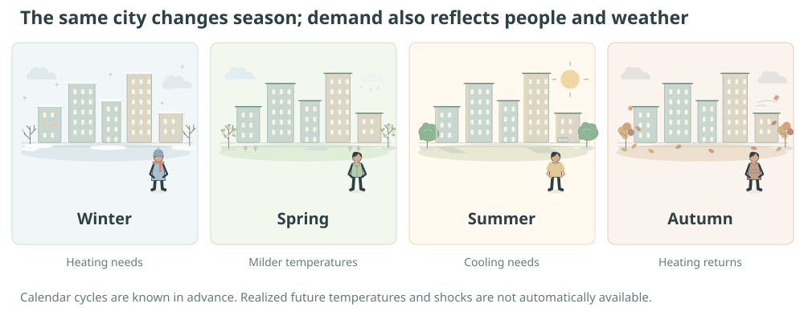
4.1 Why forecasting is different
In an independent-observation classification study, shuffled splits can be sensible when observations truly are exchangeable. A time series has order, dependence, and changing conditions. Randomly mixing overlapping historical windows can place almost the same observations in training and testing. It can also let future regimes influence preprocessing applied to the past.
Before a neural model, a utility can repeat yesterday's demand, reuse the previous week's corresponding day, or fit a regression with lagged demand and known calendar terms. Classical autoregressive or seasonal models are further options when their assumptions fit. These methods need no TensorFlow. A neural history encoder can learn nonlinear interactions, but it also requires fitting, tuning, and repeated chronological evaluation. A fair study asks whether that extra work improves forecasts made with the same information available at each origin.
Define the forecast origin o as the index of the first unobserved day. The latest known demand is Yo−1. A seven-day forecast predicts Yo through Yo+6. This indexing convention removes the common ambiguity about whether “today” is already observed. Calendar dates are known; future realized temperature is not, unless a separate forecast or explicit oracle experiment supplies it.
Study specification
- Question and target
- Predict seven future daily demands from 56 observed days of demand and available historical/calendar features.
- Data-generating mechanism
- Six years of an explicitly additive synthetic process with trend, two seasonal cycles, temperature response, correlated disturbance, and sparse shocks.
- Models and loss
- Last-value and weekly seasonal-naïve baselines versus a compact direct multi-output temporal neural network, trained by mean squared error.
- Evaluation and limitation
- Chronological training, validation, calibration, and test periods; train-only scaling; horizon-specific errors and empirical interval coverage. No exchangeability-based coverage guarantee is asserted for this dependent process.
4.2 Daily electricity demand in a changing city
The generator starts from a positive baseline around a growing city's demand, adds calendar cycles, then adds weather sensitivity and stochastic disturbances. These are simulated observations, not utility records. A demanding forecast setting needs more than a noiseless sine wave: trend, autocorrelated error, and occasional shocks prevent the past week from determining the next one exactly.
Temperature itself has an annual pattern plus random variation. Demand increases with heating or cooling needs beyond reference comfort levels. The response can therefore be nonlinear even though the final components add. A linear trend creates nonstationarity, while weather variation adds information not fully summarized by a date on the calendar.
Q is simulated °C. Weather innovations e have standard deviation 2°C; demand innovations ξ have standard deviation 25 MWh/day. Positive part (z)+ means max(z,0). Initial disturbances are zero. Each day has independent shock probability 0.008 and equiprobable sign, with magnitude uniform on [100,220] MWh/day. Day zero is Monday, 6 January 2020; the periodic year has 365.25 days.
The source file is the definitive parameter specification. The decomposition exported with the browser data stores every additive component, so summing them reproduces the demand series. A numerical equality check is stronger than drawing several unrelated curves and calling them a decomposition. Any positivity clipping is documented and checked; with the supplied scale the generated series stays positive without needing a material correction.
| Quantity | Interpretation | Units / domain |
|---|---|---|
| Trend | Base load plus gradual growth | MWh/day; time index in days |
| Weekly cycle | Calendar-driven repeating demand | MWh/day; period 7 days |
| Annual cycle | Deterministic seasonal contribution | MWh/day; period 365.25 days |
| Temperature response | Heating/cooling response to simulated weather | Temperature in °C; contribution in MWh/day |
| Correlated noise | Persisting stochastic departure | MWh/day; AR coefficient dimensionless |
| Shocks | Occasional temporary disturbances | MWh/day |
4.3 Trend, seasonality, weather, and noise
Let Tt denote trend, St annual seasonality, Wt weekly seasonality, Ct the temperature contribution, εt correlated noise, and Jt shocks. This notation keeps the calendar and weather terms distinct. The decomposition below is the generator's structural assumption; arbitrary observed time series do not come with a unique true additive decomposition.
Independent centered innovations ξ drive the AR(1) disturbance. The restriction on φ permits a stationary disturbance after initialization, but the complete demand process still contains deterministic trend and seasonality.
Which component creates which pattern?
Demand uses simulated MWh/day. The lower chart is a descriptive sample autocorrelation of the displayed series after mean subtraction, without trend removal. Toggling components changes both charts; it does not retrain a forecast.
Removing the trend in a visualization helps reveal shorter cycles, but deciding to detrend a forecasting model is a fitted transformation. Estimate its parameters only from the training period and propagate the transformation consistently into later predictions. The displayed toggles are analytical inspection of the known generator, a privilege unavailable for an unknown real process.
4.4 Time dependence and autocorrelation
Autocorrelation summarizes association between a series and a lagged copy. A sample estimate at lag h divides a lagged centered cross-product sum by the lag-zero sum of squares. Peaks around lag 7 suggest weekly repetition; long positive persistence can arise from trend rather than a genuinely stationary short-memory process. The plot's precise denominator convention is documented in JavaScript.
This is a descriptive estimate. The lagged numerator uses fewer pairs at larger h. A constant displayed series has zero variance and its ACF is undefined, shown as unavailable.
Weak stationarity requires a constant mean, finite constant variance, and covariance depending only on lag. The synthetic full demand violates the constant-mean condition. A seasonal or differenced residual may be closer to stationary, but that is an assumption to diagnose. Statistical intervals derived for stationary errors cannot simply be attached to a trending series because an ACF looks regular.
The lag operator B maps Yt to Yt−1. Seasonal differencing (1−B7)Yt subtracts the same weekday one week earlier. It removes an exactly repeating weekly component but can amplify noise and does not eliminate every annual or trend effect. This provides a conceptual bridge between a seasonal-naïve forecast and more explicit time-series modeling.
4.5 Constructing leakage-free windows
With lookback L=56 and horizon H=7, the historical demand vector is Y[o−56:o] in Python's end-exclusive indexing. Targets are Y[o:o+7]. Historical temperature, if included, uses the same past-only slice. Calendar encodings such as sine and cosine of day-of-year can be computed for any date, but realized future temperature cannot be substituted for a genuine weather forecast.
Membership in a chronological partition is determined by all target indices, not merely by the first day of an input window.
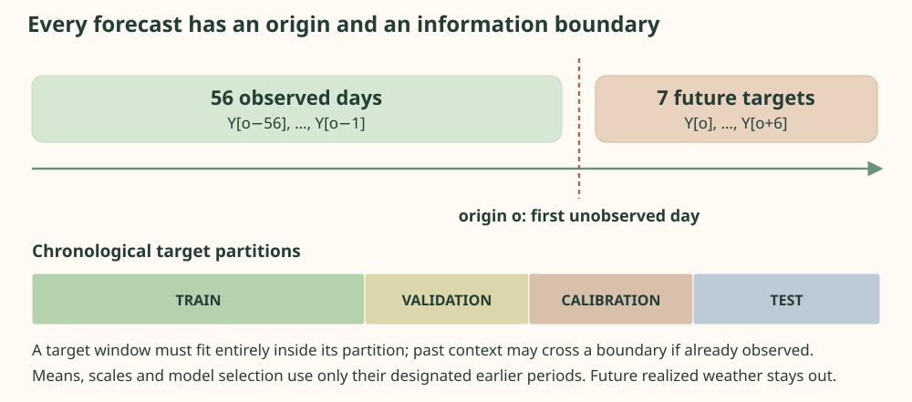
A small numerical example makes the boundary concrete. For observations [10,11,12,13,14,15,16,17], L=4, H=2, and origin o=4, input indices [0,1,2,3] contain [10,11,12,13], and target indices [4,5] contain [14,15]. Moving the origin to 5 yields input [11,12,13,14] and target [15,16]. Value 14 is lawful history for the second origin because it has then been observed.
Construct windows with explicit origin and partition boundariesPythonCollapse Code
Canonical function excerpt, not a standalone program. The complete source below supplies imports and supporting functions.
def make_windows(features, demand, lookback, horizon, target_start, target_end, stride=1):
"""All targets lie in [target_start,target_end); context may precede that interval.
X[o]=features[o-L:o], Y[o]=demand[o:o+H]. Hence every input timestamp
is <o and every target timestamp is >=o. Default daily origins overlap.
"""
origins = np.arange(max(lookback, target_start), target_end-horizon+1, stride, dtype=int)
if not len(origins):
raise ValueError("Not enough observations for the requested window")
history_indices = origins[:, None] - np.arange(lookback, 0, -1)
target_indices = origins[:, None] + np.arange(horizon)
assert np.all(history_indices < origins[:, None])
assert np.all(target_indices >= origins[:, None])
assert target_indices.min() >= target_start and target_indices.max() < target_end
return features[history_indices], np.asarray(demand)[target_indices], origins
The validation program asserts the ordering max(input index)<min(target index), checks every target stays within its assigned period, and verifies normalization statistics use only the training slice. Such index-level tests directly address leakage rather than inferring its absence from a plausible plot.
4.6 Baselines before neural models
The last-value forecast repeats Yo−1 for all seven days. It captures a persistent level but ignores weekday structure. The seasonal-naïve forecast uses Yo+h−7 for horizon offset h=0,…,6. Because this experiment stops at seven days, every selected value precedes the origin. Extending that formula naively beyond a week would reference unobserved values and require a clearly defined recursive rule.
These baselines require no fitting and are especially revealing when a model is evaluated on overlapping windows. A seven-output neural network that mostly learns to repeat the last week may not add useful information despite a small raw error. Report improvement relative to the same origin set and targets. A shifted annual cycle or rapid trend may systematically favor one method over another.
Seasonal mean absolute scaled error divides test absolute error by the training mean of |Yt−Yt−7| over valid training pairs. The denominator is fixed before testing. A value below one means an improvement on that training reference scale; it is not automatically a direct head-to-head win over the test seasonal baseline. A zero denominator makes the statistic undefined and must be handled explicitly.
4.7 A compact temporal neural architecture
The executable neural model processes historical features with an LSTM containing 32 hidden units, applies a 32-unit dense layer, and emits seven demand values. Recurrent weights are shared across historical positions, so a state can retain patterns without a separate transition parameter for every date. The network is causal with respect to the forecast origin because every input row is historical.
A direct dense output layer turns the learned history representation into H simultaneous values. The model optimizes mean squared error across examples and horizons, giving equal importance to each horizon under a common scale. Reweighting distant horizons defines a different objective and should be documented. Scaling uses training-only statistics, and output predictions are transformed back into MWh/day before evaluation.
Build a direct seven-output temporal modelPythonCollapse Code
Canonical function excerpt, not a standalone program. The complete source below supplies imports and supporting functions.
def build_model(tf, lookback=56, features=6, horizon=7):
inputs = tf.keras.layers.Input((lookback, features))
x = tf.keras.layers.LSTM(32)(inputs)
x = tf.keras.layers.Dense(32, activation="relu")(x)
outputs = tf.keras.layers.Dense(horizon)(x)
return tf.keras.Model(inputs, outputs, name="direct_seven_day_lstm")
Detailed derivation: the LSTM memory update
A recurrent model processes feature rows sequentially. Modern LSTM cells use an input gate i, forget gate f, candidate g, output gate q, cell state c, and hidden state h. Each gate is an affine function of current input and preceding hidden state; sigmoid gates range from zero to one. The cell update combines retained memory with new information.
These are modern forget-gate equations associated with the LSTM family, whose foundational source is Hochreiter and Schmidhuber (1997). The additive cell path can carry sensitivities across many steps, although gates can still saturate. A temporal convolution is a useful alternative experiment. The supplied LSTM training has not been executed here.
4.8 Direct versus recursive forecasts
A recursive method fits a one-step model, predicts one value, then feeds that prediction back as if it were an observation for the next step. Errors alter later inputs, so error accumulation can be nonlinear. Future covariate handling becomes part of the recursion. A direct multi-output method predicts all seven steps from the observed history, avoiding that feedback but learning a separate output mapping for each horizon.
Neither approach is uniformly superior. Direct models can use more output parameters and may neglect dependencies among forecast errors unless their architecture or loss models them. Recursive models can share a compact transition structure and permit variable horizons. In this study the fixed seven-day decision problem motivates direct output, and horizon-specific diagnostics reveal where that choice helps or fails.
A forecast trajectory is not a set of independent observations. Adjacent outputs share the same history, parameters, calendar, and future shocks. An uncertainty band that covers each horizon marginally at 80% need not cover the entire seven-day path with probability 80%.
4.9 Chronological validation
The first 60% of days define training targets, the next 15% validation, the next 10% calibration, and the final 15% testing. Exact integer endpoints are exported in the data. A window is admitted only if all its targets fall within its assigned partition; a few origins near boundaries are therefore omitted. Its history may extend into an earlier period because those measurements would be known at the origin.
Think of the split boundaries as dates on a calendar rather than bags of rows. At a test origin, yesterday is available even if it belonged to the calibration period, but tomorrow is not available even if an array containing it has already been allocated in memory. The distinction is logical availability at the origin. Array slicing, scaler fitting, and model selection must all respect it.
Fit input and target normalization using the training period. Use validation for early stopping and architecture decisions. Freeze the predictor before calculating calibration residuals. Use the final test only for reporting forecast errors and interval coverage. If the model is refitted after calibration, recompute calibration scores for the refitted predictor using a valid procedure; old scores do not automatically transfer.
Training windows may be shuffled after their chronological membership is fixed. This does not grant access to future targets; it changes optimizer ordering. Evaluation retains origin order for residual plots. Because neighboring windows overlap, their errors are dependent. Treating each window as an independent replicate when computing standard errors exaggerates the effective sample size.
Checkpoint: can a test window include the last validation demand?
Yes, if that demand was genuinely observed before the test forecast origin. The forbidden information is a value not available at that origin. Input context crossing a partition boundary is different from targets crossing their assigned boundary or normalization seeing the future.
4.10 Residual-calibrated prediction intervals
A point forecast describes a center, not a range of plausible future observations. For each horizon h, calculate absolute calibration errors si,h=|Yi,h−Ŷi,h| from a frozen predictor. With m calibration origins and miscoverage α=0.2, use the k-th smallest score where k=ceil((m+1)(1−α)). The interval is the point forecast plus or minus that horizon's score threshold.
For a hand-checkable rank example, take nine calibration scores sorted as 1,2,…,9 and α=0.2. The corrected rank is ceil(10×0.8)=8, so q=8, not an interpolated value between neighboring scores. A point forecast of 100 gives [92,108]. This explains the interval algorithm for one horizon; the time-series dependence discussed below determines which coverage claims remain justified.
If k>m, the exchangeable finite-sample construction uses an unbounded threshold. The implementation handles this case rather than silently interpolating a different quantile.
Under the appropriate exchangeability conditions, split conformal prediction has a marginal finite-sample coverage interpretation. Those conditions generally fail for trending, overlapping, dependent time-series examples. Here the same residual calibration is an empirical interval procedure. The final test coverage and interval width are diagnostics, not a proof of 80% future coverage. The conformal overview by Angelopoulos and Bates explains the exchangeable construction; dependent-data methods require additional assumptions and a different justified analysis.
A prediction interval concerns a future observation. A confidence interval concerns an estimated population quantity or parameter. Model uncertainty comes from imperfectly estimated parameters and misspecification; irreducible observational variation remains even with a known model. Absolute residuals mix these sources and do not disentangle them. Symmetric constant-width horizon intervals also ignore potentially changing conditional variance.
Calibrate horizon-wise intervals with the corrected rankPythonCollapse Code
Canonical function excerpt, not a standalone program. The complete source below supplies imports and supporting functions.
def conformal_quantiles(absolute_errors, alpha=.2):
"""Horizonwise exact finite-sample rank, with no interpolated quantile.
This is an algorithm borrowed from split conformal, not a coverage theorem for
this dependent time series. The calibration set must not fit the point model.
"""
errors = np.asarray(absolute_errors, dtype=np.float64)
if errors.ndim != 2 or not 0 < alpha < 1 or not np.isfinite(errors).all():
raise ValueError("Need a finite [n_origins,horizon] score matrix and 0<alpha<1")
count = len(errors)
rank = math.ceil((count+1)*(1-alpha))
if rank > count:
return np.full(errors.shape[1], np.inf)
return np.sort(errors, axis=0)[rank-1]
4.11 Comparative evaluation and diagnostics
For errors eo,h=Ŷo,h−Yo+h−1 in one-based horizon notation, MAE averages |e| and RMSE takes the square root of mean e². Report both pooled errors and one value per horizon. RMSE gives rare large misses more influence. Mean signed error reveals persistent overprediction or underprediction that absolute errors conceal.
Inspect residuals over origin time and against temperature or seasonal phase. A remaining lag-seven pattern suggests unmodeled weekly structure. Large holiday-like shocks can dominate a small test period. Coverage should also be checked by horizon and by broad time regime; a pooled 80% figure can combine overcoverage in calm periods and severe undercoverage during shocks. Do not infer independence merely because residual mean is near zero.
Move the forecast origin
Residual ACF: horizon-one seasonal-naïve errors over all daily test origins, lags 1–12 days. Dependence remains even after forecasting and helps explain why exchangeable calibration guarantees are unavailable.
Changing the displayed horizon crops the same stored seven-day output. It does not refit a neural architecture or recalculate calibration using test outcomes. The interval was fitted on the earlier calibration period. Animation advances through a finite list of stored origins and stops.
| Method | MAE (MWh/day) | RMSE (MWh/day) | Empirical interval coverage |
|---|---|---|---|
| Executed baseline metrics load from the exported data. | |||
4.12 Complete Python experiment
Run python 03_time_series_forecasting.py --quick --output outputs/forecast-quick. The source generates six years of demand in full mode (four in quick mode), creates legal windows and baselines, fits the neural model using training and validation, calibrates intervals on the later reserved period, and exports final-test comparisons. It saves and reloads the model, retains actual residuals, and reports horizon-specific error and coverage.
Do not interpret the current browser baseline chart as a neural forecast. The supplied authoring environment executed the generator and conventional forecast calculations only. A future fitted export should include predictions for the same origin convention, the scaler configuration, model version, and a clear model label before it is added to the page.
Complete program · 03_time_series_forecasting.pyPythonCollapse Code
Complete standalone program. Save the copied text as 03_time_series_forecasting.py; install the documented dependencies before running.
"""Direct seven-day LSTM forecasts with chronological calibration and baselines.
Run: python 03_time_series_forecasting.py --quick --output ../outputs/forecasting
All electricity demand is simulated, in MWh/day. Future realized weather is NEVER
an input. Independent program: its NumPy numerical functions need no TensorFlow.
"""
from __future__ import annotations
import argparse
import html
import json
import math
import os
from pathlib import Path
import platform
import time
os.environ.setdefault("CUDA_VISIBLE_DEVICES", "-1")
os.environ.setdefault("TF_CPP_MIN_LOG_LEVEL", "2")
import numpy as np
# SECTION 1 — Explicit, additive synthetic process (not a universal decomposition).
def generate_series(seed: int = 42, n: int = 2190):
rng = np.random.default_rng(seed)
t = np.arange(n, dtype=float)
weather_deviation = np.zeros(n)
disturbance = np.zeros(n)
for i in range(1, n):
weather_deviation[i] = .70 * weather_deviation[i-1] + rng.normal(0, 2.)
disturbance[i] = .65 * disturbance[i-1] + rng.normal(0, 25.)
temperature = 12 + 11 * np.sin(2*np.pi*(t-80)/365.25) + weather_deviation
components = {
"trend": 1500 + .12 * t,
"weekly": np.where(t.astype(int) % 7 < 5, 48., -120.),
"annual": 90 * np.cos(2*np.pi*t/365.25),
"weather": 18*np.maximum(10-temperature, 0) + 14*np.maximum(temperature-20, 0),
"noise": disturbance,
"shocks": (rng.random(n) < .008) * rng.choice([-1., 1.], n) * rng.uniform(100, 220, n),
}
demand = np.sum(np.stack(list(components.values())), axis=0)
# No clipping: these documented parameters produce positive synthetic demand.
if demand.min() <= 0:
raise ValueError("A modified generator produced nonpositive demand; revisit the process")
return demand, temperature, components
def boundaries(n):
return {"train_end": int(.60*n), "validation_end": int(.75*n),
"calibration_end": int(.85*n), "n": n}
def input_features(demand, temperature, train_end):
"""Fit means/scales ONLY on training observations; past demand/temp + calendar."""
t = np.arange(len(demand))
observed = np.column_stack([demand, temperature])
mean, scale = observed[:train_end].mean(axis=0), observed[:train_end].std(axis=0)
scale = np.maximum(scale, 1e-8)
standardized = (observed-mean)/scale
features = np.column_stack([standardized, np.sin(2*np.pi*t/365.25), np.cos(2*np.pi*t/365.25),
np.sin(2*np.pi*t/7), np.cos(2*np.pi*t/7)]).astype(np.float32)
return features, mean, scale
# SECTION 2 — Origin o is the FIRST unobserved index (the first target index).
def make_windows(features, demand, lookback, horizon, target_start, target_end, stride=1):
"""All targets lie in [target_start,target_end); context may precede that interval.
X[o]=features[o-L:o], Y[o]=demand[o:o+H]. Hence every input timestamp
is <o and every target timestamp is >=o. Default daily origins overlap.
"""
origins = np.arange(max(lookback, target_start), target_end-horizon+1, stride, dtype=int)
if not len(origins):
raise ValueError("Not enough observations for the requested window")
history_indices = origins[:, None] - np.arange(lookback, 0, -1)
target_indices = origins[:, None] + np.arange(horizon)
assert np.all(history_indices < origins[:, None])
assert np.all(target_indices >= origins[:, None])
assert target_indices.min() >= target_start and target_indices.max() < target_end
return features[history_indices], np.asarray(demand)[target_indices], origins
def baseline_forecasts(demand, origins, horizon=7):
if horizon > 7:
raise ValueError("This seasonal baseline is implemented for horizons up to seven days")
last = np.repeat(np.asarray(demand)[origins-1, None], horizon, axis=1)
seasonal = np.asarray(demand)[origins[:, None] + np.arange(horizon) - 7]
return last, seasonal
def conformal_quantiles(absolute_errors, alpha=.2):
"""Horizonwise exact finite-sample rank, with no interpolated quantile.
This is an algorithm borrowed from split conformal, not a coverage theorem for
this dependent time series. The calibration set must not fit the point model.
"""
errors = np.asarray(absolute_errors, dtype=np.float64)
if errors.ndim != 2 or not 0 < alpha < 1 or not np.isfinite(errors).all():
raise ValueError("Need a finite [n_origins,horizon] score matrix and 0<alpha<1")
count = len(errors)
rank = math.ceil((count+1)*(1-alpha))
if rank > count:
return np.full(errors.shape[1], np.inf)
return np.sort(errors, axis=0)[rank-1]
def forecast_metrics(actual, predicted, mase_scale, lower=None, upper=None):
error = np.asarray(predicted) - np.asarray(actual)
metrics = {"mae": float(np.abs(error).mean()), "rmse": float(np.sqrt(np.mean(error**2))),
"mase": float(np.abs(error).mean()/mase_scale), "mase_training_scale": float(mase_scale),
"by_horizon_mae": np.abs(error).mean(axis=0).tolist(),
"by_horizon_rmse": np.sqrt(np.mean(error**2, axis=0)).tolist(),
"mean_error": float(error.mean()), "by_horizon_bias": error.mean(axis=0).tolist()}
if lower is not None and upper is not None:
covered = (actual >= lower) & (actual <= upper)
metrics.update(coverage=float(covered.mean()), by_horizon_coverage=covered.mean(axis=0).tolist(),
mean_interval_width=float(np.mean(upper-lower)))
return metrics
def autocorrelation(values, max_lag=28):
centered = np.asarray(values) - np.mean(values)
denominator = float(centered @ centered)
return [1.] + [float(centered[k:] @ centered[:-k] / denominator) if denominator else 0.
for k in range(1, max_lag+1)]
def write_forecast_svg(path, actual, neural, last, seasonal, lower, upper):
"""One truly held-out seven-step forecast; all chart points come from arrays."""
width, height = 760, 360
minimum = min(float(np.min(lower)), float(np.min(actual))) - 30
maximum = max(float(np.max(upper)), float(np.max(actual))) + 30
px = lambda i: 70 + i*100
py = lambda value: 290 - (value-minimum)/(maximum-minimum)*220
svg = ['<svg xmlns="http://www.w3.org/2000/svg" viewBox="0 0 760 360" role="img"><title>Held-out electricity forecast in MWh per day</title><rect width="760" height="360" fill="#fff8f2"/><g font-family="sans-serif" font-size="13" fill="#26332f"><text x="35" y="25">Held-out seven-day forecast • MWh/day</text>']
polygon = " ".join(f"{px(i)},{py(lower[i]):.2f}" for i in range(7)) + " " + " ".join(f"{px(i)},{py(upper[i]):.2f}" for i in reversed(range(7)))
svg.append(f'<polygon points="{polygon}" fill="#d7e8d3"/>')
for values, color, name, row in [(actual, "#26332f", "Observed", 0),(neural,"#427d49","LSTM",1),
(last,"#b6773a","Last value",2),(seasonal,"#5b75a2","Seasonal naive",3)]:
points = " ".join(f"{px(i)},{py(value):.2f}" for i,value in enumerate(values))
svg.append(f'<polyline points="{points}" fill="none" stroke="{color}" stroke-width="2.5"/><text x="{35+row*175}" y="345" fill="{color}">{html.escape(name)}</text>')
for i in range(7):
svg.append(f'<text x="{px(i)}" y="315" text-anchor="middle">h={i+1}</text>')
for value in np.linspace(minimum,maximum,4):
svg.append(f'<text x="58" y="{py(value)+4:.1f}" text-anchor="end">{value:.0f}</text>')
path.write_text("".join(svg)+"</g></svg>", encoding="utf-8")
# SECTION 3 — Direct multi-output forecasting with no future realized covariates.
def build_model(tf, lookback=56, features=6, horizon=7):
inputs = tf.keras.layers.Input((lookback, features))
x = tf.keras.layers.LSTM(32)(inputs)
x = tf.keras.layers.Dense(32, activation="relu")(x)
outputs = tf.keras.layers.Dense(horizon)(x)
return tf.keras.Model(inputs, outputs, name="direct_seven_day_lstm")
def run(args):
import tensorflow as tf
tf.keras.utils.set_random_seed(args.seed)
tf.config.experimental.enable_op_determinism()
n, lookback, horizon = (1460 if args.quick else 2190), 56, 7
demand, temperature, components = generate_series(args.seed, n)
split = boundaries(n)
features, mean, scale = input_features(demand, temperature, split["train_end"])
ranges = [(0,split["train_end"],1),(split["train_end"],split["validation_end"],1),
(split["validation_end"],split["calibration_end"],1),(split["calibration_end"],n,1)]
train, validation, calibration, test = [make_windows(features,demand,lookback,horizon,a,b,s) for a,b,s in ranges]
x_train, y_train, _ = train
x_val, y_val, _ = validation
x_cal, y_cal, o_cal = calibration
x_test, y_test, o_test = test
model = build_model(tf, lookback, features.shape[1], horizon)
model.compile(optimizer=tf.keras.optimizers.Adam(1e-3, clipnorm=1.), loss="mse", jit_compile=False)
start = time.perf_counter()
history = model.fit(x_train,(y_train-mean[0])/scale[0],
validation_data=(x_val,(y_val-mean[0])/scale[0]),batch_size=32,
epochs=2 if args.quick else 40, verbose=2, shuffle=True,
callbacks=[tf.keras.callbacks.EarlyStopping(patience=6, restore_best_weights=True),
tf.keras.callbacks.TerminateOnNaN()])
cal_prediction = model.predict(x_cal, verbose=0)*scale[0]+mean[0]
test_prediction = model.predict(x_test, verbose=0)*scale[0]+mean[0]
assert test_prediction.shape == y_test.shape and np.isfinite(test_prediction).all()
q = conformal_quantiles(np.abs(y_cal-cal_prediction),args.alpha)
if not np.isfinite(q).all():
raise ValueError("Too few calibration origins for a finite interval at this alpha")
last_test, seasonal_test = baseline_forecasts(demand,o_test,horizon)
last_cal, seasonal_cal = baseline_forecasts(demand,o_cal,horizon)
mase_scale = np.mean(np.abs(demand[7:split["train_end"]]-demand[:split["train_end"]-7]))
metrics = {"neural": forecast_metrics(y_test,test_prediction,mase_scale,test_prediction-q,test_prediction+q)}
for name,prediction,calpred in [("last_value",last_test,last_cal),("seasonal_naive",seasonal_test,seasonal_cal)]:
bq = conformal_quantiles(np.abs(y_cal-calpred),args.alpha)
metrics[name] = forecast_metrics(y_test,prediction,mase_scale,prediction-bq,prediction+bq)
args.output.mkdir(parents=True,exist_ok=True)
model.save(args.output / "demand.keras")
reloaded = tf.keras.models.load_model(args.output / "demand.keras", compile=False)
np.testing.assert_allclose(reloaded.predict(x_test[:2],verbose=0)*scale[0]+mean[0],test_prediction[:2],atol=1e-3)
(args.output / "normalization.json").write_text(json.dumps({"mean":mean.tolist(),"scale":scale.tolist()}),encoding="utf-8")
result = {"provenance":"actual TensorFlow training; synthetic demand", "seed":args.seed,
"environment":{"python":platform.python_version(),"numpy":np.__version__,"tensorflow":tf.__version__},
"configuration":{"n":n,"lookback":lookback,"horizon":horizon,"splits":split,
"calibration_and_test_stride":1,"alpha":args.alpha,"normalization_fitted_through":split["train_end"]-1},
"metrics":metrics,"conformal":{"q":q.tolist(),"n_calibration":len(o_cal),
"rank":math.ceil((len(o_cal)+1)*(1-args.alpha)),
"caveat":"dependent time series: no exchangeability-based coverage guarantee; horizonwise, not simultaneous"},
"history":history.history,"seconds":time.perf_counter()-start,"reload_verified":True,
"residual_acf_horizon1":autocorrelation(y_test[:,0]-test_prediction[:,0],min(12,len(y_test)-1)),
"examples":[{"origin":int(o),"actual":y.tolist(),"neural":p.tolist(),"lower":(p-q).tolist(),"upper":(p+q).tolist()}
for o,y,p in zip(o_test[:5],y_test[:5],test_prediction[:5])]}
(args.output / "results.json").write_text(json.dumps(result,indent=2),encoding="utf-8")
np.savez_compressed(args.output / "held_out_forecasts.npz",origins=o_test,actual=y_test,neural=test_prediction,
lower=test_prediction-q,upper=test_prediction+q,last_value=last_test,seasonal_naive=seasonal_test)
write_forecast_svg(args.output / "held_out_forecast.svg",y_test[0],test_prediction[0],last_test[0],seasonal_test[0],test_prediction[0]-q,test_prediction[0]+q)
print(json.dumps(result,indent=2))
if __name__ == "__main__":
parser=argparse.ArgumentParser(description=__doc__)
parser.add_argument("--quick",action="store_true",help="four years, at most two epochs; a smoke test")
parser.add_argument("--seed",type=int,default=42)
parser.add_argument("--alpha",type=float,default=.2)
parser.add_argument("--output",type=Path,default=Path(__file__).resolve().parents[1]/"outputs/forecasting")
args=parser.parse_args()
try:
run(args)
except ModuleNotFoundError as exc:
raise SystemExit("Install requirements.txt in an isolated environment first.") from exc
4.13 Extensions and realistic uncertainty
Replace synthetic weather with an archived weather-forecast product and evaluate using the forecast that was actually available at each historical origin. Using final observed weather creates an oracle experiment, which can be informative if labeled but cannot estimate operational forecasting performance. Known holidays and tariff changes require equally careful date availability.
Rolling-origin refits can evaluate adaptation to growth and structural change. If models, scalers, or interval calibrators update, reproduce the entire update policy in backtesting. Consider nonoverlapping calibration origins or methods designed for temporal dependence, then state their assumptions. Compare sharper intervals only at comparable empirical coverage; a narrow interval that misses most observations is not a better uncertainty estimate.
Finally, quantify the computational cost of each improvement. A baseline needs a handful of stored values and no training. A modest neural model may help with nonlinear weather and interactions, but that advantage must be observed on held-out data. Architecture alone is not evidence.
4.14 What did TensorFlow contribute to municipal electricity-demand forecasting?
The forecasting problem begins with an information boundary: at origin o, day o is the first unobserved day. A seasonal naïve forecast can retrieve the last observed value for the corresponding weekday; linear regression, classical time-series models, and state-space methods offer additional alternatives without a deep-learning framework. The neural experiment instead compresses 56 days of six historical features and predicts all seven future demands directly.
Compare the canonical baseline with the actual neural model builder. The baseline indexes existing demand values and has no fitted recurrent state. The Keras model receives B × 56 × 6, processes it with a 32-unit LSTM, and returns B × 7 after a dense hidden layer and output head. These snippets illustrate different modeling responsibilities, not a fair runtime or line-count contest between equivalent computations.
Last-value and weekly seasonal baselines from available historyPythonCollapse Code
Canonical function excerpt, not a standalone program. The complete source below supplies imports and supporting functions.
def baseline_forecasts(demand, origins, horizon=7):
if horizon > 7:
raise ValueError("This seasonal baseline is implemented for horizons up to seven days")
last = np.repeat(np.asarray(demand)[origins-1, None], horizon, axis=1)
seasonal = np.asarray(demand)[origins[:, None] + np.arange(horizon) - 7]
return last, seasonal
Direct seven-horizon forecast with a reusable LSTM layerPythonCollapse Code
Canonical function excerpt, not a standalone program. The complete source below supplies imports and supporting functions.
def build_model(tf, lookback=56, features=6, horizon=7):
inputs = tf.keras.layers.Input((lookback, features))
x = tf.keras.layers.LSTM(32)(inputs)
x = tf.keras.layers.Dense(32, activation="relu")(x)
outputs = tf.keras.layers.Dense(horizon)(x)
return tf.keras.Model(inputs, outputs, name="direct_seven_day_lstm")
For h = 0,…,6, the seasonal baseline reads Y[o+h−7]. Its latest accessed value is Y[o−1], so all seven inputs are available at the origin. The neural target is Y[o:o+7]. Window construction, chronological partition membership, and training-only normalization are explicit NumPy responsibilities in this program; TensorFlow does not infer them. Training passes the resulting arrays to model.fit, which coordinates batches, MSE, automatic gradients, and Adam with gradient clipping.
The principal implementation saving is the recurrent computation and its differentiation through time. A custom implementation must maintain LSTM gates and states, accumulate gradients through 56 steps, handle parameter sharing, and update optimizer state. Keras provides this reusable layer and training infrastructure; PyTorch, JAX, or another suitable differentiable system could implement the same architecture. The model's nonlinear temporal representation is an architectural capability, not evidence of superior forecasting.
Across the 323 executed daily test origins, seasonal naïve MAE is 55.164236 demand units and RMSE is 71.152207, compared with last-value MAE 100.645553 and RMSE 129.750469. Those measured errors establish a useful conventional benchmark. TensorFlow training was not executed, so no neural error, speedup, or improvement is claimed. A fitted LSTM could still perform worse because of variance, mis-specified dynamics, insufficient data, or optimization failure.
Batched recurrent operations can make the proposed model practical, but add training and tuning costs that a seasonal lookup does not incur. TensorFlow does not detect temporal leakage, supply unavailable future weather, correct forecast-origin alignment, or guarantee interval coverage under dependent residuals. Structural breaks and distribution shift require backtesting and monitoring. Its contribution here is to make a direct neural sequence model easier to construct and differentiate; whether that complexity improves electricity-demand decisions remains an empirical question.
Learning the Physics of Heat
A neural network can approximate a temperature field without receiving a temperature label at every location. Here physical laws supply constraints—but independent mathematical and numerical references still determine whether the approximation is credible.
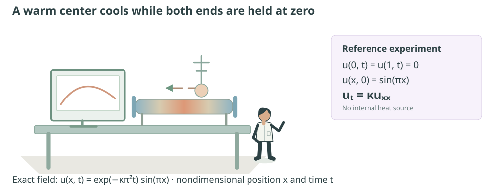
5.1 What does solving an equation mean?
An equation can specify a relationship between unknown function values and their derivatives. Solving it means finding a function that satisfies the relationship throughout a domain and satisfies its initial and boundary conditions. Producing plausible values at a handful of points is weaker. A small training loss is weaker still when that loss samples only part of the domain.
Analytical methods exploit equation structure when a closed-form solution exists. Grid methods approximate derivatives and advance a field numerically; finite elements and other discretizations handle broader geometries. These calculations do not require TensorFlow. The neural alternative here is useful for studying a differentiable coordinate representation and physics-based optimization, while the exact field and a classical solver provide the independent evidence it needs.
Three approaches provide complementary evidence. An analytical solution can be substituted into the equation exactly. A finite-difference solver approximates derivatives on a grid and has discretization and stability properties. A physics-informed neural network represents a smooth candidate field and minimizes violations of the equation and conditions. The same benchmark lets us separate representation, optimization, and numerical error.
Study specification
- Physical question
- How does an initially warm slender rod cool when both ends are held at a reference temperature?
- Mathematical assumptions
- One spatial dimension, homogeneous constant material properties, no internal heat source, insulated lateral surface, and prescribed endpoint temperatures.
- Computational methods
- A known sine-mode solution; explicit forward-time centered-space differences; a smooth tanh multilayer network with residual, boundary, and initial penalties.
- Verification
- Independent space–time grids, global relative L² error, residual and condition errors, and mesh refinement. Only analytical and classical calculations were executed in the authoring environment.
5.2 Heat flow depends on curvature
A point at a smooth temperature peak has cooler neighbors on both sides and tends to lose heat. A point in a trough tends to gain heat. A straight temperature ramp can carry a constant heat flux while having no local accumulation in the interior. The rate of local change therefore relates to curvature, not simply to temperature or slope.
The rod's endpoints are maintained at zero relative temperature. This does not mean absolute zero: zero is a chosen reference. Energy leaves through those boundaries, so total thermal energy in the rod need not remain constant. The initial profile sin(πx) is positive in the interior, zero at both ends, and maximized at the center. Its subsequent shape remains a sine while its amplitude decays exponentially.
The laboratory below synchronizes that exact field with a stable finite-difference approximation. Changing diffusivity changes the decay rate and the numerical time-step restriction. It does not reuse an unvalidated PINN at a new physical parameter value.
5.3 Conservation and Fourier's law
Let physical position be X, time τ, temperature U, cross-sectional area A, density ρ, and specific heat c. Consider a short segment from X to X+ΔX. Its thermal energy change is approximately ρcAΔX·Uτ. If q is heat flux per unit area, inflow minus outflow is A[q(X)−q(X+ΔX)]. There are no internal sources and no lateral losses.
Divide by AΔX and let ΔX tend to zero: ρcUτ=−∂q/∂X. Fourier's constitutive law states q=−kthUX, with positive thermal conductivity kth. Constant coefficients then give the heat equation. The negative flux sign encodes transport from warmer to cooler locations.
Conductivity has units W/(m·K); volumetric heat capacity ρc has J/(m³·K); diffusivity has m²/s. Both sides of the PDE have K/s.
For length scale ℓ, time scale τ₀, reference temperature Uref, and amplitude ΔU, define x=X/ℓ, t=τ/τ₀, and u=(U−Uref)/ΔU. Then κ=αphysτ₀/ℓ² is dimensionless, and ut=κuxx. The default κ=0.1 below is this normalized coefficient, not a material diffusivity in m²/s.
Detailed derivation: what changes with nonconstant material properties?
If conductivity depends on position, the divergence form is ρcUτ=∂X(kth(X)UX). Expanding introduces a conductivity-gradient term. If heat capacity varies with temperature, the simple constant-coefficient derivation also changes. A source term or convective lateral loss adds further terms. A PINN that minimizes the wrong constant-coefficient residual solves the wrong stated problem, however small its optimization loss becomes.
5.4 Initial conditions, boundaries, and an exact solution
The dimensionless domain is 0≤x≤1 and 0≤t≤1. Both endpoints satisfy u(0,t)=u(1,t)=0, and the initial temperature is u(x,0)=sin(πx). These conditions are compatible at the two initial corners. Without an initial condition, the zero field would satisfy the homogeneous PDE and boundaries but would not describe the intended warm rod.
Substitution gives ut−κuxx=0. At x=0 and x=1 the sine is zero; at t=0 the exponential is one. All conditions are satisfied.
Separation of variables explains the form. Seek u=A(t)B(x), substitute, and divide by κAB where nonzero. A′/(κA)=B″/B must be a constant. Zero endpoint values select sine eigenfunctions B(x)=sin(mπx). The given initial condition contains only m=1, so A(t)=exp(−κπ²t). Higher-frequency modes would decay faster, with a rate proportional to m².
At x=0.5, κ=0.1, and t=1, the exact temperature is exp(−0.1π²), about 0.372708. The analytic derivative test evaluates both sides independently at several points, not just at the center where some derivatives simplify. This benchmark is intentionally tractable so numerical mistakes cannot hide behind an unknown truth.
5.5 A classical finite-difference solver
Let xi=iΔx and tn=nΔt. Taylor expansions of u(x+Δx) and u(x−Δx) have opposite odd terms. Adding them and subtracting 2u gives Δx²uxx plus a fourth-order remainder. Dividing by Δx² yields the centered second derivative with error of order Δx² for a smooth field.
Forward Euler is first-order in time; the centered spatial difference is second-order in space. Boundary values are set exactly at every step.
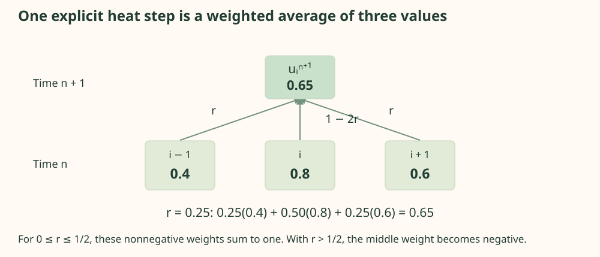
The stability restriction is not optional. A Fourier error mode exp(iωj) is multiplied by G(ω)=1−4r sin²(ω/2). Requiring |G|≤1 for every spatial frequency gives 0≤r≤½. At r>½, high-frequency error can grow even if a smooth initial mode looks well-behaved for a few steps.
Detailed derivation: consistency is not stability
Substituting a smooth exact field into the scheme yields truncation error O(Δt+Δx²), so the discretization is consistent as both steps shrink. That statement does not control amplification of roundoff or perturbations. The Fourier multiplier does. A sequence that refines Δx without shrinking Δt proportionally to Δx² can violate stability despite a more accurate local spatial approximation. The solver chooses an integer step count that reaches the final time exactly and keeps its actual ratio at or below the requested stable value.
Implement stable forward-time centered-space diffusionPythonCollapse Code
Canonical function excerpt, not a standalone program. The complete source below supplies imports and supporting functions.
def ftcs(kappa=.1, nx=41, final_time=1., requested_r=.4):
"""u[n+1,i]=(1-2r)u[n,i]+r(u[n,i-1]+u[n,i+1]).
Choose an integer number of steps to hit final_time exactly and round dt DOWN.
Thus actual r<=requested_r<=0.5. Boundaries remain exactly zero at every step.
Returns x, time, field[time,space], and actual stability ratio.
"""
if kappa<=0 or nx<3 or final_time<=0 or not 0<requested_r<=.5:
raise ValueError("Require kappa>0, nx>=3, time>0, 0<r<=0.5")
x=np.linspace(0,1,nx)
dx=1/(nx-1)
steps=max(1,math.ceil(kappa*final_time/(requested_r*dx*dx)))
dt=final_time/steps
r=kappa*dt/(dx*dx)
assert r<=.5+1e-14
field=np.zeros((steps+1,nx),dtype=np.float64)
field[0]=np.sin(np.pi*x)
field[0,[0,-1]]=0
for j in range(steps):
field[j+1,1:-1]=(1-2*r)*field[j,1:-1]+r*(field[j,:-2]+field[j,2:])
assert np.isfinite(field).all() and np.max(np.abs(field))<=1+1e-12
return x,np.linspace(0,final_time,steps+1),field,r
The source also supplies a safeguarded unstable trace at r=0.65. It adds a tiny alternating perturbation to excite the unstable high-frequency mode, records the maximum amplitude, and stops at a fixed amplitude bound. This is an instability demonstration, not an alternative solver. A pure first sine mode can conceal unstable frequencies until roundoff excites them.
5.6 A network as a continuous field
The neural input is a pair (x,t), and the output is one scalar uθ(x,t). Three hidden dense layers use tanh activations, with 32 units per layer in the full configuration. Coordinates are mapped to a centered interval, and the source uses float64 throughout this experiment. This is a continuous function approximation, not a lookup table containing only grid values.
A smooth activation matters because the PDE contains a second spatial derivative. A ReLU multilayer perceptron is piecewise affine in its inputs; its classical second derivative vanishes almost everywhere and is undefined at kinks. Such a representation cannot be inserted into this strong-form heat residual without addressing that issue. Tanh supplies smooth nonzero curvature, although saturation can still weaken optimization gradients.
Increasing width can reduce approximation error in principle but can also complicate optimization. A network may represent a good solution and still fail to find it. Conversely, fitting many collocation residuals can leave unsampled regions inaccurate. Architecture capacity, sampled objective, and optimizer behavior are distinct sources of error.
Construct a smooth float64 temperature fieldPythonCollapse Code
Canonical function excerpt, not a standalone program. The complete source below supplies imports and supporting functions.
def build_model(tf,width=32):
inputs=tf.keras.layers.Input((2,),dtype=tf.float64)
x=tf.keras.layers.Rescaling(2.,offset=-1.,dtype=tf.float64)(inputs)
for _ in range(3):
x=tf.keras.layers.Dense(width,activation="tanh",dtype=tf.float64)(x)
output=tf.keras.layers.Dense(1,dtype=tf.float64)(x)
return tf.keras.Model(inputs,output,name="heat_pinn")
5.7 Physics-informed neural networks
A physics-informed neural network uses a differentiable model and penalizes violations of physical relations at sampled coordinates. It still needs information that identifies the desired solution: initial and boundary data are crucial. For this forward heat problem there is no need to hide known physics inside a black-box training target. TensorFlow differentiates the field directly to construct the residual.
The symbol rθ denotes a residual field here; the finite-difference stability ratio r in Equation 19 is a separate locally defined scalar.
For a known forward equation in one space dimension, classical solvers are usually an efficient reference and may be the preferred practical method. Neural fields can be attractive when coupling scattered observations with equations, solving inverse problems, or representing higher-dimensional coordinate functions. These possibilities do not establish superiority on this simple benchmark. The methodological foundation is described by Raissi, Perdikaris, and Karniadakis (2019).
5.8 Automatic differentiation of differential operators
One coordinate tape computes first derivatives of the network output with respect to an N × 2 coordinate tensor. The first column is x, the second t. A second coordinate tape records that first differentiation and the selection of its spatial component, then differentiates again to obtain uxx. Both operations must occur inside the outer coordinate tape's scope.
The parameter tape encloses the entire residual construction. Otherwise optimization cannot differentiate the residual loss through its input derivatives back to network weights. A common failure is to compute derivatives outside that parameter context, convert them to NumPy, or slice them after the relevant tape has stopped recording. Shape-correct arrays can then conceal disconnected gradients.
Compute first and second derivatives with nested tapesPythonCollapse Code
Canonical function excerpt, not a standalone program. The complete source below supplies imports and supporting functions.
def differential_fields(tf,model,xt):
"""Return u,u_t,u_xx as [N,1] tensors.
gradient(non-scalar,xt) differentiates the SUM of outputs. That equals each
sample's derivative only because Dense/tanh here never mix batch rows. This
shortcut is invalid for BatchNormalization or attention across samples.
Both the first-gradient operation AND its x slice occur inside outer tape.
"""
with tf.GradientTape() as second:
second.watch(xt)
with tf.GradientTape() as first:
first.watch(xt)
u=model(xt,training=True)
du=first.gradient(u,xt)
ux=du[:,:1]
d_ux=second.gradient(ux,xt)
return u,du[:,1:2],d_ux[:,:1]
gradient(u, xt) differentiates the sum of entries in u. Why does that give one derivative row per point here? Every output row depends only on the matching input row in a Dense/tanh network. Cross-row derivatives are zero, so summing output derivatives leaves precisely the pointwise derivative for each input row. Batch normalization or attention across collocation samples would violate that argument. A full Jacobian or batch Jacobian would then require careful interpretation.
The derivative routine returns N × 1 tensors for u, ut, and uxx. Nonfinite losses and gradients are checked explicitly. These checks catch numerical breakdown, but a finite derivative can still be wrong because the wrong coordinate or wrong equation was differentiated. The optional TensorFlow validation compares nested-tape derivatives of the known analytical field against its closed-form values.
5.9 Residual, boundary, and initial losses
Sample Nr interior coordinate pairs, Nb boundary pairs with x in {0,1}, and N0 initial points with t=0. Each loss averages a squared discrepancy over its own point set. This prevents the term's scale from changing merely because its sample count changes. It does not make the three terms equally easy to optimize.
The zero field makes the residual and boundary terms exactly zero. Under uniformly sampled initial positions its expected initial-condition loss is ∫₀¹sin²(πx)dx=½. With the weights (1,10,10) used below, the population objective is 5. A finite sampled loss fluctuates around that value. This simple competitor shows concretely why satisfying the homogeneous equation is not enough to identify the warm initial state.
Weights (1,10,10) emphasize conditions in this nondimensional benchmark. They are chosen defaults, not a theorem or an empirically optimized universal setting.
The homogeneous zero field has zero residual and boundary loss but a large initial mismatch. This illustrates why reporting only the PDE residual is insufficient. Soft penalties also allow nonzero boundary error even when the intended condition is exact. An optional hard-constraint ansatz can multiply the neural correction by x(1−x) and incorporate the initial profile, but it changes the function class and derivative structure and should be tested as a separate experiment.
5.10 Sampling and custom optimization
The full configuration uses 1,024 residual points and 64 points for each condition set, resampled every 100 optimizer steps. Quick mode uses 256 residual points and 200 steps; the fuller run uses 4,000 steps. Boundary points sample either endpoint and a time uniformly. Initial points sample x uniformly with t fixed to zero. These are training coordinates, not an independent validation grid.
A custom loop computes the composite objective inside a parameter tape, checks gradients, and applies Adam with an exponentially decaying learning rate and gradient clipping. The initial learning rate is 10−3, decaying by a factor 0.9 every 1,000 steps. Clipping limits a step's gradient magnitude; it does not repair a wrong derivative or guarantee convergence.
Record residual, boundary, and initial terms separately. A lower total may conceal a worsening condition term if another term dominates. Resampling broadens spatial coverage but changes the sampled objective; a noisy training history is therefore not solely an optimizer effect. Evaluate the fixed independent grid periodically if choosing a stopping rule, then reserve a different final grid if that evaluation influenced model selection.
Optimization ends after a configured schedule, not after a proved convergence criterion. The program labels this limitation. A full run can fail through spectral bias, poor loss balance, saturation, or a challenging modified initial profile. Report the actual field error even when the result is disappointing.
5.11 Comparing analytical, grid, and neural solutions
Evaluate all methods at common coordinates. The bundled reference uses 41 spatial positions and 21 times for compact browser data; the neural program evaluates its trained network independently on an 81 × 51 grid. FTCS is interpolated in time where necessary. No interpolation should be mistaken for an exact PDE solution.
All grid points are weighted equally in this reported discrete norm. A continuum integral approximation would require specified quadrature weights.
Pointwise relative error divides by u(x,t), which is zero at the endpoints and small at late times. It can be undefined or misleading there. Use absolute error near zeros and a global denominator for aggregate comparisons. Also report maximum absolute error, boundary error, initial-profile error, and an independently calculated PDE residual.
With the supplied stable discretization, the stored FTCS relative L² error is approximately 0.000305 on the reference evaluation grid. That is an executed numerical result. A neural value is deliberately absent because the PINN has not been trained in this environment. The complete program exports the missing comparison when actually run.
5.12 Residuals, stability, and a synchronized laboratory
Follow heat along the rod
The rod uses the exact field with a fixed 0–1 color scale. FTCS recomputes from the initial condition when diffusivity or grid changes; its step count keeps r≤0.4. Time interpolation synchronizes the curves. Play advances one finite cycle and stops. Reduced-motion users start paused.
Stable and unstable error amplification
The plotted near-Nyquist mode has amplification 1−4r sin²(39π/80) on a 41-point grid. Its initial amplitude is 10⁻⁶; the trace stops at amplitude 10⁶. This is a calculated error mode, separate from the stable rod solver.
A small residual at collocation points does not guarantee small field error. The initial and boundary data can be poorly enforced, or residuals can be large between points. Even an exact residual estimate needs a problem-specific stability argument to translate equation error into solution error. The analytical reference and mesh refinement make this distinction observable here.
Checkpoint: can the zero network look physically excellent?
It has zero heat residual and satisfies the zero boundaries, but it fails the warm initial condition. A residual-only metric would reward it. Report all conditions and the independent field error; the composite loss's purpose is to identify the intended solution rather than merely any homogeneous one.
5.13 Complete Python experiment
Run python 04_scientific_computing.py --quick --output outputs/heat-quick. The program includes the exact field and derivatives, a stable FTCS solver, a controlled unstable trace, the smooth neural field, nested derivatives, collocation sampling, custom parameter optimization, saved-model verification, independent evaluation, convergence checks, and scientific exports.
The source is self-contained and labels dimensionless coordinates throughout. It does not need observational temperature data because this is a forward benchmark with known conditions. For an inverse experiment estimating κ from sparse measurements, κ would become a constrained trainable quantity and identifiability, observation noise, and held-out measurement evaluation would need separate treatment.
Complete program · 04_scientific_computing.pyPythonCollapse Code
Complete standalone program. Save the copied text as 04_scientific_computing.py; install the documented dependencies before running.
"""Heat equation: exact solution, stable FTCS, and a physics-informed network.
Run: python 04_scientific_computing.py --quick --output ../outputs/scientific
Coordinates and temperature are NONDIMENSIONAL. Default diffusivity kappa=0.1.
Independent program. Analytical and FTCS functions can run without TensorFlow.
"""
from __future__ import annotations
import argparse
import json
import math
import os
from pathlib import Path
import platform
import struct
import time
import zlib
os.environ.setdefault("CUDA_VISIBLE_DEVICES", "-1")
os.environ.setdefault("TF_CPP_MIN_LOG_LEVEL", "2")
import numpy as np
# SECTION 1 — The benchmark and its independently checkable derivatives.
def analytical(x, t, kappa=.1):
return np.exp(-kappa*np.pi**2*np.asarray(t))*np.sin(np.pi*np.asarray(x))
def analytical_derivatives(x, t, kappa=.1):
u = analytical(x,t,kappa)
return -kappa*np.pi**2*u, -np.pi**2*u # u_t, u_xx
def ftcs(kappa=.1, nx=41, final_time=1., requested_r=.4):
"""u[n+1,i]=(1-2r)u[n,i]+r(u[n,i-1]+u[n,i+1]).
Choose an integer number of steps to hit final_time exactly and round dt DOWN.
Thus actual r<=requested_r<=0.5. Boundaries remain exactly zero at every step.
Returns x, time, field[time,space], and actual stability ratio.
"""
if kappa<=0 or nx<3 or final_time<=0 or not 0<requested_r<=.5:
raise ValueError("Require kappa>0, nx>=3, time>0, 0<r<=0.5")
x=np.linspace(0,1,nx)
dx=1/(nx-1)
steps=max(1,math.ceil(kappa*final_time/(requested_r*dx*dx)))
dt=final_time/steps
r=kappa*dt/(dx*dx)
assert r<=.5+1e-14
field=np.zeros((steps+1,nx),dtype=np.float64)
field[0]=np.sin(np.pi*x)
field[0,[0,-1]]=0
for j in range(steps):
field[j+1,1:-1]=(1-2*r)*field[j,1:-1]+r*(field[j,:-2]+field[j,2:])
assert np.isfinite(field).all() and np.max(np.abs(field))<=1+1e-12
return x,np.linspace(0,final_time,steps+1),field,r
def sample_ftcs(kappa=.1,nx=41,times=None):
if times is None:
times=np.linspace(0,1,21)
x,times_full,field,r=ftcs(kappa,nx,float(np.max(times)))
sampled=np.stack([np.interp(times,times_full,field[:,i]) for i in range(nx)],axis=1)
return x,np.asarray(times),sampled,r
def unstable_trace(kappa=.1,nx=41,requested_r=.65,steps=100):
"""Intentionally unstable FTCS, bounded by a safety stop (not a solver).
Add a 1e-6 alternating perturbation so the unstable high-frequency mode is
visible. A pure first sine mode alone need not visibly reveal the instability.
"""
x=np.linspace(0,1,nx)
u=np.sin(np.pi*x)+1e-6*(-1.)**np.arange(nx)
u[[0,-1]]=0
trace=[]
for step in range(steps):
amplitude=float(np.max(np.abs(u)))
trace.append({"step":step,"max_abs":amplitude})
if not np.isfinite(amplitude) or amplitude>1e6:
break
u[1:-1]=(1-2*requested_r)*u[1:-1]+requested_r*(u[:-2]+u[2:])
return {"r":requested_r,"dt":requested_r/(kappa*(nx-1)**2),
"perturbation":1e-6,"stop_amplitude":1e6,"trace":trace}
def field_metrics(exact, predicted):
difference=np.asarray(predicted)-np.asarray(exact)
denominator=np.linalg.norm(exact)
return {"relative_l2":float(np.linalg.norm(difference)/denominator),
"max_abs_error":float(np.max(np.abs(difference))),
"rmse":float(np.sqrt(np.mean(difference**2))),
"aggregation":"unweighted Euclidean norm across every evaluation grid point"}
# SECTION 2 — Smooth, row-independent neural field; float64 throughout.
def build_model(tf,width=32):
inputs=tf.keras.layers.Input((2,),dtype=tf.float64)
x=tf.keras.layers.Rescaling(2.,offset=-1.,dtype=tf.float64)(inputs)
for _ in range(3):
x=tf.keras.layers.Dense(width,activation="tanh",dtype=tf.float64)(x)
output=tf.keras.layers.Dense(1,dtype=tf.float64)(x)
return tf.keras.Model(inputs,output,name="heat_pinn")
def differential_fields(tf,model,xt):
"""Return u,u_t,u_xx as [N,1] tensors.
gradient(non-scalar,xt) differentiates the SUM of outputs. That equals each
sample's derivative only because Dense/tanh here never mix batch rows. This
shortcut is invalid for BatchNormalization or attention across samples.
Both the first-gradient operation AND its x slice occur inside outer tape.
"""
with tf.GradientTape() as second:
second.watch(xt)
with tf.GradientTape() as first:
first.watch(xt)
u=model(xt,training=True)
du=first.gradient(u,xt)
ux=du[:,:1]
d_ux=second.gradient(ux,xt)
return u,du[:,1:2],d_ux[:,:1]
def sample_points(tf,rng,n_residual,n_boundary,n_initial):
residual=rng.uniform(0,1,(n_residual,2))
boundary=np.column_stack([rng.integers(0,2,n_boundary),rng.uniform(0,1,n_boundary)])
initial=np.column_stack([rng.uniform(0,1,n_initial),np.zeros(n_initial)])
return tuple(tf.convert_to_tensor(a,dtype=tf.float64) for a in (residual,boundary,initial))
def write_heatmap(path,values,signed=False):
"""A small standard PNG, with high values warm and low values pale blue."""
values=np.asarray(values,dtype=float)
normalized=values/(np.max(values) if signed and np.max(values)>0 else 1.)
normalized=np.clip(normalized,0,1)
cold=np.array([220,235,244]); warm=np.array([194,69,48])
image=np.rint(cold+(warm-cold)*normalized[...,None]).astype(np.uint8)
image=np.repeat(np.repeat(image,5,0),5,1)
height,width,_=image.shape
def chunk(kind,data):
return struct.pack(">I",len(data))+kind+data+struct.pack(">I",zlib.crc32(kind+data)&0xffffffff)
rows=b"".join(b"\x00"+row.tobytes() for row in image)
path.write_bytes(b"\x89PNG\r\n\x1a\n"+chunk(b"IHDR",struct.pack(">IIBBBBB",width,height,8,2,0,0,0))+
chunk(b"IDAT",zlib.compress(rows,9))+chunk(b"IEND",b""))
def write_profile_svg(path,x,exact,fd,pinn):
svg=['<svg xmlns="http://www.w3.org/2000/svg" viewBox="0 0 720 350" role="img"><title>Heat profiles at t=0.5 on independent grid</title><rect width="720" height="350" fill="#fff8f2"/><g font-family="sans-serif" fill="#26332f"><text x="35" y="25">Heat profiles at t=0.5 • nondimensional temperature</text>']
for values,color,name,col in [(exact,"#26332f","Exact",0),(fd,"#5b75a2","FTCS",1),(pinn,"#b66e3e","PINN",2)]:
points=" ".join(f"{50+620*a:.3f},{285-235*b:.3f}" for a,b in zip(x,values))
svg.append(f'<polyline points="{points}" fill="none" stroke="{color}" stroke-width="2.3"/><text x="{60+col*210}" y="330" fill="{color}">{name}</text>')
for a in [0,.25,.5,.75,1]:
svg.append(f'<text x="{50+620*a}" y="305" text-anchor="middle" font-size="12">{a:g}</text>')
path.write_text("".join(svg)+"</g></svg>",encoding="utf-8")
# SECTION 3 — Parameter tape encloses the entire differential-operator graph.
def run(args):
import tensorflow as tf
if args.kappa<=0:
raise ValueError("Thermal diffusivity must be positive")
tf.keras.utils.set_random_seed(args.seed)
tf.config.experimental.enable_op_determinism()
rng=np.random.default_rng(args.seed)
width=24 if args.quick else 32
model=build_model(tf,width)
schedule=tf.keras.optimizers.schedules.ExponentialDecay(1e-3,1000,.9,staircase=True)
optimizer=tf.keras.optimizers.Adam(schedule,clipnorm=5.)
kappa=tf.constant(args.kappa,dtype=tf.float64)
weights=(1.,10.,10.) # residual, boundary, initial; fields already nondimensional.
@tf.function
def train_step(residual_points,boundary_points,initial_points):
with tf.GradientTape() as parameters:
_,ut,uxx=differential_fields(tf,model,residual_points)
residual=ut-kappa*uxx
lr=tf.reduce_mean(tf.square(residual))
lb=tf.reduce_mean(tf.square(model(boundary_points,training=True)))
target=tf.sin(tf.constant(np.pi,dtype=tf.float64)*initial_points[:,:1])
l0=tf.reduce_mean(tf.square(model(initial_points,training=True)-target))
loss=weights[0]*lr+weights[1]*lb+weights[2]*l0
gradients=parameters.gradient(loss,model.trainable_variables)
tf.debugging.assert_all_finite(loss,"Nonfinite PINN objective")
for gradient in gradients:
if gradient is None:
raise ValueError("Disconnected parameter gradient")
tf.debugging.assert_all_finite(gradient,"Nonfinite PINN parameter gradient")
optimizer.apply_gradients(zip(gradients,model.trainable_variables))
return loss,lr,lb,l0
steps=200 if args.quick else 4000
n_residual=256 if args.quick else 1024
history=[]
start=time.perf_counter()
for step in range(steps):
if step%100==0:
points=sample_points(tf,rng,n_residual,64,64)
values=train_step(*points)
if step%20==0 or step==steps-1:
row={"step":step+1,"total":float(values[0]),"residual":float(values[1]),"boundary":float(values[2]),"initial":float(values[3])}
history.append(row)
print(json.dumps(row),flush=True)
# SECTION 4 — Independent uniform space-time grid, never used to fit parameters.
x=np.linspace(0,1,81); times=np.linspace(0,1,51)
xx,tt=np.meshgrid(x,times)
evaluation=tf.constant(np.column_stack([xx.ravel(),tt.ravel()]),dtype=tf.float64)
u,ut,uxx=differential_fields(tf,model,evaluation)
neural=u.numpy().reshape(xx.shape)
residual=(ut-kappa*uxx).numpy().reshape(xx.shape)
exact=analytical(xx,tt,args.kappa)
_,_,finite_difference,r=sample_ftcs(args.kappa,len(x),times)
assert np.isfinite(neural).all() and np.isfinite(residual).all()
neural_metrics=field_metrics(exact,neural)
neural_metrics.update(residual_rms=float(np.sqrt(np.mean(residual**2))),
residual_max_abs=float(np.max(np.abs(residual))),
boundary_max_abs=float(np.max(np.abs(neural[:,[0,-1]]))),
initial_rmse=float(np.sqrt(np.mean((neural[0]-np.sin(np.pi*x))**2))))
args.output.mkdir(parents=True,exist_ok=True)
model.save(args.output/"heat.keras")
restored=tf.keras.models.load_model(args.output/"heat.keras",compile=False)
np.testing.assert_allclose(restored(evaluation[:10]).numpy(),u.numpy()[:10],atol=1e-10)
convergence=[]
for nx in [21,41,81]:
cx,ct,cf,cr=ftcs(args.kappa,nx)
convergence.append({"nx":nx,"dx":1/(nx-1),"dt":ct[1]-ct[0],"r":cr,
**field_metrics(analytical(cx,1,args.kappa),cf[-1])})
result={"provenance":"actual TensorFlow PINN training and FTCS computation", "seed":args.seed,
"environment":{"python":platform.python_version(),"numpy":np.__version__,"tensorflow":tf.__version__},
"configuration":{"kappa":args.kappa,"steps":steps,"width":width,"weights":weights,
"n_residual":n_residual,"resample_every":100,"boundary_and_initial_each":64,"dtype":"float64"},
"pinn_metrics":neural_metrics,"ftcs_metrics":field_metrics(exact,finite_difference),
"ftcs_r":r,"convergence":convergence,"history":history,"seconds":time.perf_counter()-start,
"reload_verified":True,"warning":"Optimizer completion is not a convergence or accuracy certificate."}
(args.output/"results.json").write_text(json.dumps(result,indent=2),encoding="utf-8")
np.savez_compressed(args.output/"evaluation_fields.npz",x=x,t=times,exact=exact,finite_difference=finite_difference,
pinn=neural,absolute_error=np.abs(neural-exact),residual=residual)
write_heatmap(args.output/"pinn_temperature.png",neural)
write_heatmap(args.output/"pinn_absolute_error.png",np.abs(neural-exact),signed=True)
write_heatmap(args.output/"pinn_absolute_residual.png",np.abs(residual),signed=True)
write_profile_svg(args.output/"heat_profiles.svg",x,exact[25],finite_difference[25],neural[25])
print(json.dumps(result,indent=2))
if __name__=="__main__":
parser=argparse.ArgumentParser(description=__doc__)
parser.add_argument("--quick",action="store_true",help="200 steps and 256 collocation points; does not certify convergence")
parser.add_argument("--seed",type=int,default=42)
parser.add_argument("--kappa",type=float,default=.1)
parser.add_argument("--output",type=Path,default=Path(__file__).resolve().parents[1]/"outputs/scientific")
args=parser.parse_args()
try:
run(args)
except ModuleNotFoundError as exc:
raise SystemExit("Install requirements.txt in an isolated environment first.") from exc
5.14 Extensions and when a classical method wins
| Spatial points | Δx | Δt | r | Relative L² at t=1 |
|---|---|---|---|---|
| 21 | 0.05 | 0.01 | 0.4 | 0.00285079 |
| 41 | 0.025 | 0.0025 | 0.4 | 0.000710878 |
| 81 | 0.0125 | 0.000625 | 0.4 | 0.000177606 |
The refinement table uses only the final-time spatial profile. Its denominator differs from the full space–time norm reported above, so the two relative errors should not be compared as if their aggregation were identical.
Mesh refinement checks the expected error behavior: if Δt is proportional to Δx², both leading temporal and spatial errors scale approximately as Δx² for this smooth stable solution. Halving Δx should therefore reduce asymptotic error by roughly four, subject to cancellation and roundoff. The generator exports a convergence table so the claim can be checked rather than asserted from a single grid.
Extend the benchmark with several sine modes, a source term with a manufactured exact solution, nonzero boundary data, or spatially varying conductivity in divergence form. Compare soft and hard conditions under the same independent grid. Resampling residual points by error indicators can improve coverage but adds a selection mechanism that must be described.
A classical solver directly exploits the known equation and local stencil with no nonconvex training. On this one-dimensional problem it can achieve excellent accuracy cheaply and reliably. A neural field offers a differentiable continuous representation and a route to inverse or coupled problems, but training cost and failure modes remain part of the comparison. Choosing the simpler verified method is often the correct engineering decision.
5.15 What did TensorFlow contribute to solving the heat equation?
This benchmark already has an analytical solution and a stable finite-difference solver. Neither needs TensorFlow. The neural experiment chooses another representation: a smooth function uθ(x,t) whose parameters are adjusted so that its derivatives satisfy diffusion and its values satisfy the initial and boundary conditions. Automatic differentiation helps implement that representation; it does not choose the mathematical solution method for us.
The classical update below approximates curvature on a grid and advances the entire temperature vector in time. Its stability ratio is r = κΔt/Δx², constrained to at most 1/2 for this explicit scheme. The second excerpt differentiates the neural field at continuous coordinate pairs. It constructs no time-marching stencil; it returns the field and coordinate derivatives needed by the training objective.
Classical grid update with an explicit stability constraintPythonCollapse Code
Canonical function excerpt, not a standalone program. The complete source below supplies imports and supporting functions.
def ftcs(kappa=.1, nx=41, final_time=1., requested_r=.4):
"""u[n+1,i]=(1-2r)u[n,i]+r(u[n,i-1]+u[n,i+1]).
Choose an integer number of steps to hit final_time exactly and round dt DOWN.
Thus actual r<=requested_r<=0.5. Boundaries remain exactly zero at every step.
Returns x, time, field[time,space], and actual stability ratio.
"""
if kappa<=0 or nx<3 or final_time<=0 or not 0<requested_r<=.5:
raise ValueError("Require kappa>0, nx>=3, time>0, 0<r<=0.5")
x=np.linspace(0,1,nx)
dx=1/(nx-1)
steps=max(1,math.ceil(kappa*final_time/(requested_r*dx*dx)))
dt=final_time/steps
r=kappa*dt/(dx*dx)
assert r<=.5+1e-14
field=np.zeros((steps+1,nx),dtype=np.float64)
field[0]=np.sin(np.pi*x)
field[0,[0,-1]]=0
for j in range(steps):
field[j+1,1:-1]=(1-2*r)*field[j,1:-1]+r*(field[j,:-2]+field[j,2:])
assert np.isfinite(field).all() and np.max(np.abs(field))<=1+1e-12
return x,np.linspace(0,final_time,steps+1),field,r
Neural coordinate derivatives for the diffusion residualPythonCollapse Code
Canonical function excerpt, not a standalone program. The complete source below supplies imports and supporting functions.
def differential_fields(tf,model,xt):
"""Return u,u_t,u_xx as [N,1] tensors.
gradient(non-scalar,xt) differentiates the SUM of outputs. That equals each
sample's derivative only because Dense/tanh here never mix batch rows. This
shortcut is invalid for BatchNormalization or attention across samples.
Both the first-gradient operation AND its x slice occur inside outer tape.
"""
with tf.GradientTape() as second:
second.watch(xt)
with tf.GradientTape() as first:
first.watch(xt)
u=model(xt,training=True)
du=first.gradient(u,xt)
ux=du[:,:1]
d_ux=second.gradient(ux,xt)
return u,du[:,1:2],d_ux[:,:1]
Here xt has shape N × 2 with columns x and t; u, ut, and uxx each have shape N × 1. The first tape records the field and computes its first derivatives. The second records both that derivative calculation and the x-column slice, allowing a second x derivative. A third, parameter-level tape in the training loop differentiates the resulting physics loss with respect to model weights. The advanced automatic-differentiation guide explains this nesting of derivative computations.
κ is fixed in this experiment. Thus ∇θrθ differentiates through the coordinate derivatives themselves. Boundary and initial-condition losses contribute additional parameter-gradient terms.
To see the manual burden, consider one smooth unit u = c tanh(ax+bt+d). Writing s = tanh(ax+bt+d) gives ut = cb(1−s²) and uxx = −2ca²s(1−s²). Even this unit's residual depends nonlinearly on four parameters; training requires derivatives of that residual too. Several composed layers introduce many chain-rule paths. TensorFlow maintains these supported derivatives when widths or layers change. Handwritten differentiation is possible, and PyTorch or JAX offer automatic alternatives, but maintaining a separate derivative implementation becomes a substantial source of error.
Automatic derivatives are derivatives of the chosen neural approximation, evaluated with finite-precision arithmetic. They are not derivatives of the unknown exact solution and do not remove representation or optimization error. Finite differences instead introduce a grid spacing and truncation error. Numerical differentiation of a neural output would add a step-size tradeoff and could amplify cancellation in second derivatives. These distinctions matter more than comparing the number of lines in the two snippets.
The sum-of-outputs gradient shortcut in differential_fields is valid because this dense tanh network treats each row independently. Operations mixing samples would require a different Jacobian treatment. Smooth activations, float64, tape scope, loss balancing, and independent residual checks are deliberate choices; automatic differentiation cannot repair an incorrectly specified operator.
The executed FTCS solution has relative L² error 0.000305225 on the exported 41 × 21 space–time evaluation grid, with zero boundary error. Its final-time-only relative error is a different statistic. No PINN training or neural residual measurement has executed here. For this simple one-dimensional problem, a classical solver is an inexpensive, transparent reference and may be much faster than optimizing a neural field; no timing comparison was measured.
TensorFlow supplies smooth layer composition, nested coordinate derivatives, parameter gradients, Adam, and model saving for the proposed PINN. The analytical solution supplies a reference, finite differences supply a verified numerical method, and the neural ansatz supplies a continuous representation. The researcher still chooses collocation points, checks conditions and stability, and decides whether inverse or coupled extensions justify the extra optimization. Convenience in constructing the differentiable model is a distinct contribution from numerical accuracy or computational superiority.
Synthesis and Implementation
Automatic differentiation unifies the computational work. It does not make images, messages, forecasts, and physical fields interchangeable scientific objects.
6.1 Comparing the four applications
| Aspect | Urban vision | University language | Energy forecasting | Heat equation |
|---|---|---|---|---|
| Primary question | Which pixels are vegetation? | Which service should receive a request? | What are the next seven demands? | Which field satisfies diffusion and conditions? |
| Input | N × 64 × 64 × 3 RGB | Strings → B × 48 integer tokens | B × 56 × 6 historical features | N × 2 continuous coordinates |
| Output | N × 64 × 64 × 1 probabilities | B × 4 logits / class probabilities | B × 7 real demands | N × 1 smooth temperature |
| Architecture | U-Net-inspired encoder–decoder | 24-D embeddings, masked pooling, dense classifier | 32-unit LSTM, dense seven-output head | Three-layer tanh field |
| Loss | BCE + 0.5 soft Dice loss | Sparse multiclass cross-entropy | Mean squared normalized demand error | Residual + 10 boundary + 10 initial MSE |
| Optimization | Adam and validation stopping | Adam and validation stopping | Adam and chronological validation | Custom Adam loop with nested derivatives |
| Baseline | Fixed excess-green rule | Multinomial naïve Bayes | Last value; weekly seasonal naïve | Exact solution; stable FTCS |
| Evaluation | IoU, Dice, precision/recall, spatial errors | Macro-F1, class metrics, cross-entropy, confusion | MAE, RMSE, MASE, horizon error, interval coverage | Relative L², absolute error, residual and condition error |
| Leakage hazard | Duplicate or neighboring scenes | Shared templates and test vocabulary | Future targets/covariates and full-series scaling | Validating only at training collocation points |
| Cost and failure | Feature-map memory; domain shift | Vocabulary/padding; shortcuts and ambiguity | Repeated temporal fitting; changing regimes | Higher derivatives; optimization and loss imbalance |
Each experiment requires a different unit of independent evidence. Pixels cluster within scenes. Requests share linguistic templates. Forecast windows overlap in time. Collocation points sample a continuous equation. An average over all array entries does not make those entries independent statistical observations. This distinction affects uncertainty estimates, data splitting, and claims about generalization.
6.2 What TensorFlow contributes
In vision, shared trainable spatial filters extract features and a decoder returns pixelwise outputs. In language, embedding lookup and pooling transform discrete symbols into a differentiable decision function. In forecasting, a recurrent history representation maps available information to a fixed future horizon. In physics, derivatives of the output with respect to coordinates become terms inside another differentiable objective.
The common engine computes gradients of a scalar objective with respect to parameters. The unusual step in the PINN is that constructing the objective already requires derivatives with respect to inputs. Parameter optimization therefore differentiates through a differential operator. That is a concrete reason to use a general automatic-differentiation framework beyond a standard supervised-learning API.
TensorFlow does not provide a guarantee that any of these objectives matches the intended real-world question. The framework can efficiently optimize an accidentally leaked forecast, an incorrectly shifted image mask, or a physical residual with the wrong sign. Independent references and experimental boundaries are part of the implementation, not optional discussion after it.
6.4 Statistical and computational limitations
These experiments are controlled learning environments, not deployment validations. The urban generator lacks realistic spectral physics and geographic diversity. The text generator restricts meaning and style. The demand process encodes selected cycles and disturbances but omits many operational changes. The heat problem has smooth data and a known answer. These choices make errors diagnosable while restricting external claims.
Bias arises when the representation or generator omits relevant structure; variance arises when a fitted model responds strongly to finite-sample variation. More seeds address one part of variance but cannot repair a misspecified test distribution. Confidence intervals derived by treating dependent entries as independent can be misleading even when every metric is calculated correctly.
The supplied neural source was syntax-checked and reviewed, but its TensorFlow imports, forward passes, optimization, and saving round trips have not executed in this environment. Static review can catch an API mismatch or disconnected tape, but it cannot establish runtime compatibility or convergence. The validation report records that boundary plainly. Run the documented optional TensorFlow checks and quick experiments before relying on the implementations for further study.
6.5 Scaling the demonstrations
Scale the bottleneck that matters. Vision memory grows with batch size, image resolution, and stored feature maps. Larger images may require patch sampling and careful seam handling. Language cost grows with vocabulary and sequence length; pooling stays simple, while context-sensitive encoders may need more data. Forecasting cost includes repeated backtests and model updates, not just a single forward pass. PINNs pay for higher derivatives and repeated residual evaluations, which can dominate small dense matrix operations.
Use input pipelines only after profiling demonstrates an input bottleneck. Cache modest deterministic transformations when their memory cost is acceptable. Record whether timings include data generation, graph tracing, compilation, training, and export. Compare CPU and accelerator runs using the same mathematical configuration, and account for precision changes. A speed claim without its measurement boundary is difficult to reproduce.
Scaling data also changes the scientific problem. More neighboring image tiles may add fewer independent examples than new geographic regions. More template substitutions may add fewer linguistic patterns than new authors. More overlapping windows may add little independent temporal information. More collocation points reduce one sampling gap but do not prove global solution accuracy.
6.6 Reproducibility and verification
The reproduction guide lists PowerShell commands, artifacts, schemas, and the distinction between the executed authoring environment and the pinned training target. The requirements file pins TensorFlow 2.20.0, Keras 3.10.0, and NumPy 2.2.6. Each main application is a complete standalone program; the asset generator imports their numerical functions to avoid maintaining conflicting generators.
- Create an isolated environment and record Python, numerical-library, TensorFlow, and device versions.
- Run
00_tensorflow_foundations.pyto check numerical examples and automatic gradients. - Run
validate_experiments.pyfor source, generators, splits, metrics, analytical derivatives, and assets; add--tensorflowfor forward passes, losses, parameter steps, and nested derivatives. - Run each application in quick mode and inspect saved artifacts. A quick fit checks the pipeline; it is not a scientific performance conclusion.
- Choose settings using training and validation, then run a fuller experiment with frozen evaluation and calibration boundaries.
- Inspect failure examples and repeated seeds. Preserve raw confusion counts, forecast residuals, and independent field errors.
- Rebuild embedded code with
build_monograph.pyafter source edits, and check the static page withvalidate_page.py.
Executed validation in this working tree
Python 3.13.1 and NumPy 2.4.0: all source parses, deterministic generators, six numerical/source/asset validation groups, and static page consistency checks. TensorFlow execution is untested. The exact records are python-validation.json and generation-manifest.json.
For browser use, serve the repository through an ordinary local HTTP server or GitHub Pages. The laboratories load relative JSON assets; browsers may block those fetches under file:. The article, embedded source, and SVG/PNG figures remain readable without an application server. No external inference service, API key, or personal dataset is required.
| Asset | Purpose |
|---|---|
| generate_demo_assets.py | Recompute actual baselines, analytical/FTCS fields, and browser data |
| validate_experiments.py | Check numerical invariants and optionally TensorFlow execution |
| build_monograph.py | Embed highlighted canonical source and validate code parity |
| validate_page.py | Check anchors, relative assets, semantic structure, and code consistency |
6.7 Further reading and original sources
The source register records checked dates, precise publication details, API caveats, and attribution. Live documentation can describe newer releases than the deliberately pinned environment. External references support methods and software behavior; all observations and example artwork in this monograph were developed for this project.
- TensorFlow installation, build configurations, and 2.20.0 release metadata. CPU/Windows guidance and release-specific compatibility.
- TensorFlow: gradients and automatic differentiation; advanced automatic differentiation. Tapes, watched inputs, Jacobians, and higher derivatives.
- tf.data guide; time-series tutorial; image tutorials; text tutorials. Official implementation context.
- Keras 3 migration, saving and serialization, TextVectorization, Embedding, and masked global pooling.
- Rumelhart, Hinton, and Williams (1986). Learning representations by back-propagating errors. Nature 323, 533–536. A foundational multilayer learning reference.
- LeCun, Bottou, Bengio, and Haffner (1998). Gradient-based learning applied to document recognition. Proceedings of the IEEE 86(11), 2278–2324.
- Ronneberger, Fischer, and Brox (2015). U-Net: Convolutional Networks for Biomedical Image Segmentation. MICCAI, 234–241. Architecture inspiration; no biomedical result is reproduced here.
- Hochreiter and Schmidhuber (1997). Long Short-Term Memory. Neural Computation 9(8), 1735–1780. Modern implementations include later refinements.
- Raissi, Perdikaris, and Karniadakis (2019). Physics-informed neural networks. Journal of Computational Physics 378, 686–707.
- Angelopoulos and Bates (2021, revised 2022). A Gentle Introduction to Conformal Prediction and Distribution-Free Uncertainty Quantification. Residual score ranks and exchangeability assumptions.
- Chernozhukov, Wüthrich, and Zhu (2018). Exact and Robust Conformal Inference Methods for Predictive Machine Learning with Dependent Data. COLT, PMLR 75, 732–749. A dependent-data research reference; the simple intervals here do not claim to implement its complete procedure.
Read the annotated source register. TensorFlow, Keras, and MathJax are distributed under Apache 2.0; NumPy under BSD-3-Clause. MathJax's locally reused renderer retains its bundled notices and is accompanied by its license. The editable diagrams and synthetic assets are original; no external photographs or confidential observations are used.